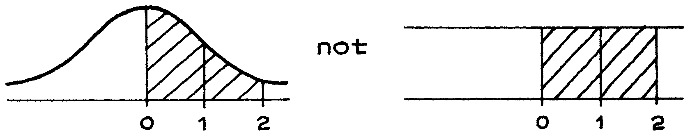
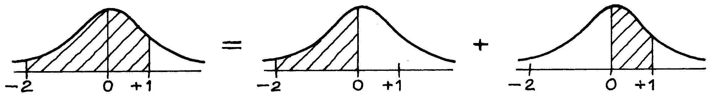
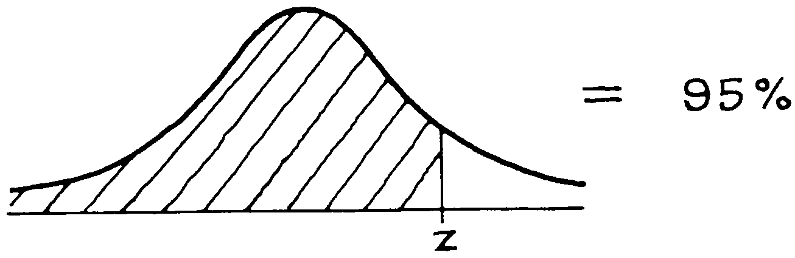
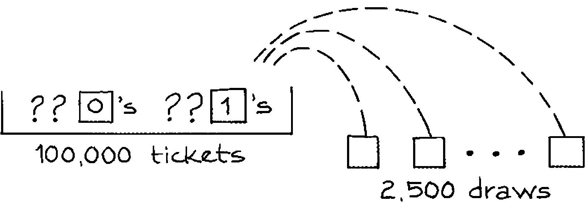

<!DOCTYPE HTML>
<html lang="vi" class="light" dir="ltr">
    <head>
        <!-- Book generated using mdBook -->
        <meta charset="UTF-8">
        <title>Statistics</title>
        <meta name="robots" content="noindex">


        <!-- Custom HTML head -->
        
        <meta name="description" content="">
        <meta name="viewport" content="width=device-width, initial-scale=1">
        <meta name="theme-color" content="#ffffff">

        <link rel="icon" href="favicon.svg">
        <link rel="shortcut icon" href="favicon.png">
        <link rel="stylesheet" href="css/variables.css">
        <link rel="stylesheet" href="css/general.css">
        <link rel="stylesheet" href="css/chrome.css">
        <link rel="stylesheet" href="css/print.css" media="print">

        <!-- Fonts -->
        <link rel="stylesheet" href="FontAwesome/css/font-awesome.css">
        <link rel="stylesheet" href="fonts/fonts.css">

        <!-- Highlight.js Stylesheets -->
        <link rel="stylesheet" href="highlight.css">
        <link rel="stylesheet" href="tomorrow-night.css">
        <link rel="stylesheet" href="ayu-highlight.css">

        <!-- Custom theme stylesheets -->

        <!-- MathJax -->
        <script async src="https://cdnjs.cloudflare.com/ajax/libs/mathjax/2.7.1/MathJax.js?config=TeX-AMS-MML_HTMLorMML"></script>
    </head>
    <body class="sidebar-visible no-js">
    <div id="body-container">
        <!-- Provide site root to javascript -->
        <script>
            var path_to_root = "";
            var default_theme = window.matchMedia("(prefers-color-scheme: dark)").matches ? "navy" : "light";
        </script>

        <!-- Work around some values being stored in localStorage wrapped in quotes -->
        <script>
            try {
                var theme = localStorage.getItem('mdbook-theme');
                var sidebar = localStorage.getItem('mdbook-sidebar');

                if (theme.startsWith('"') && theme.endsWith('"')) {
                    localStorage.setItem('mdbook-theme', theme.slice(1, theme.length - 1));
                }

                if (sidebar.startsWith('"') && sidebar.endsWith('"')) {
                    localStorage.setItem('mdbook-sidebar', sidebar.slice(1, sidebar.length - 1));
                }
            } catch (e) { }
        </script>

        <!-- Set the theme before any content is loaded, prevents flash -->
        <script>
            var theme;
            try { theme = localStorage.getItem('mdbook-theme'); } catch(e) { }
            if (theme === null || theme === undefined) { theme = default_theme; }
            var html = document.querySelector('html');
            html.classList.remove('light')
            html.classList.add(theme);
            var body = document.querySelector('body');
            body.classList.remove('no-js')
            body.classList.add('js');
        </script>

        <input type="checkbox" id="sidebar-toggle-anchor" class="hidden">

        <!-- Hide / unhide sidebar before it is displayed -->
        <script>
            var body = document.querySelector('body');
            var sidebar = null;
            var sidebar_toggle = document.getElementById("sidebar-toggle-anchor");
            if (document.body.clientWidth >= 1080) {
                try { sidebar = localStorage.getItem('mdbook-sidebar'); } catch(e) { }
                sidebar = sidebar || 'visible';
            } else {
                sidebar = 'hidden';
            }
            sidebar_toggle.checked = sidebar === 'visible';
            body.classList.remove('sidebar-visible');
            body.classList.add("sidebar-" + sidebar);
        </script>

        <nav id="sidebar" class="sidebar" aria-label="Table of contents">
            <div class="sidebar-scrollbox">
                <ol class="chapter"><li class="chapter-item expanded affix "><li class="part-title">Part I: Design of Experiments</li><li class="chapter-item expanded "><a href="ch01/ch01.html"><strong aria-hidden="true">1.</strong> Controlled Experiments</a></li><li><ol class="section"><li class="chapter-item expanded "><a href="ch01/ch01-01.html"><strong aria-hidden="true">1.1.</strong> The Salk Vaccine Field Trial</a></li><li class="chapter-item expanded "><a href="ch01/ch01-02.html"><strong aria-hidden="true">1.2.</strong> The Portacaval Shunt</a></li></ol></li><li class="chapter-item expanded "><a href="ch02/ch02.html"><strong aria-hidden="true">2.</strong> Observational Studies</a></li><li class="chapter-item expanded affix "><li class="part-title">Part II: Descriptive Statistics</li><li class="chapter-item expanded "><a href="ch03/ch03.html"><strong aria-hidden="true">3.</strong> The Histogram</a></li><li><ol class="section"><li class="chapter-item expanded "><a href="ch03/ch03-01.html"><strong aria-hidden="true">3.1.</strong> Introduction</a></li><li class="chapter-item expanded "><a href="ch03/ch03-02.html"><strong aria-hidden="true">3.2.</strong> Drawing a Histogram</a></li></ol></li><li class="chapter-item expanded "><a href="ch04/ch04.html"><strong aria-hidden="true">4.</strong> The Average and the Standard Deviation</a></li><li><ol class="section"><li class="chapter-item expanded "><a href="ch04/ch04-01.html"><strong aria-hidden="true">4.1.</strong> Introduction</a></li><li class="chapter-item expanded "><a href="ch04/ch04-02.html"><strong aria-hidden="true">4.2.</strong> The Average</a></li><li class="chapter-item expanded "><a href="ch04/ch04-03.html"><strong aria-hidden="true">4.3.</strong> The Average and the Histogram</a></li></ol></li><li class="chapter-item expanded "><a href="ch05/ch05.html"><strong aria-hidden="true">5.</strong> The Normal Approximation for Data</a></li><li><ol class="section"><li class="chapter-item expanded "><a href="ch05/ch05-01.html"><strong aria-hidden="true">5.1.</strong> The Normal Curve</a></li><li class="chapter-item expanded "><a href="ch05/ch05-02.html"><strong aria-hidden="true">5.2.</strong> Finding Areas Under The Normal Curve</a></li><li class="chapter-item expanded "><a href="ch05/ch05-03.html"><strong aria-hidden="true">5.3.</strong> The Normal Approximation For Data</a></li><li class="chapter-item expanded "><a href="ch05/ch05-04.html"><strong aria-hidden="true">5.4.</strong> Percentiles</a></li><li class="chapter-item expanded "><a href="ch05/ch05-05.html"><strong aria-hidden="true">5.5.</strong> Percentiles And The Normal Curve</a></li><li class="chapter-item expanded "><a href="ch05/ch05-06.html"><strong aria-hidden="true">5.6.</strong> Change Of Scale</a></li><li class="chapter-item expanded "><a href="ch05/ch05-07.html"><strong aria-hidden="true">5.7.</strong> Review Exercises</a></li><li class="chapter-item expanded "><a href="ch05/ch05-08.html"><strong aria-hidden="true">5.8.</strong> Summary</a></li></ol></li><li class="chapter-item expanded "><a href="ch06/ch06.html"><strong aria-hidden="true">6.</strong> Measurement Error</a></li><li><ol class="section"><li class="chapter-item expanded "><a href="ch06/ch06-01.html"><strong aria-hidden="true">6.1.</strong> Introduction</a></li><li class="chapter-item expanded "><a href="ch06/ch06-02.html"><strong aria-hidden="true">6.2.</strong> Chance Error</a></li><li class="chapter-item expanded "><a href="ch06/ch06-03.html"><strong aria-hidden="true">6.3.</strong> Outliers</a></li><li class="chapter-item expanded "><a href="ch06/ch06-04.html"><strong aria-hidden="true">6.4.</strong> Bias</a></li><li class="chapter-item expanded "><a href="ch06/ch06-05.html"><strong aria-hidden="true">6.5.</strong> Review Exercises</a></li><li class="chapter-item expanded "><a href="ch06/ch06-06.html"><strong aria-hidden="true">6.6.</strong> Special Revew Exercises</a></li><li class="chapter-item expanded "><a href="ch06/ch06-07.html"><strong aria-hidden="true">6.7.</strong> Summary</a></li></ol></li><li class="chapter-item expanded "><a href="ch07/ch07.html"><strong aria-hidden="true">7.</strong> Plotting Points and Lines</a></li><li><ol class="section"><li class="chapter-item expanded "><a href="ch07/ch07-01.html"><strong aria-hidden="true">7.1.</strong> Reading Points of a Graph</a></li><li class="chapter-item expanded "><a href="ch07/ch07-02.html"><strong aria-hidden="true">7.2.</strong> Plotting Points</a></li><li class="chapter-item expanded "><a href="ch07/ch07-03.html"><strong aria-hidden="true">7.3.</strong> Slope and Intercept</a></li><li class="chapter-item expanded "><a href="ch07/ch07-04.html"><strong aria-hidden="true">7.4.</strong> Plotting Lines</a></li><li class="chapter-item expanded "><a href="ch07/ch07-05.html"><strong aria-hidden="true">7.5.</strong> The Algebraic Equation For a Line</a></li></ol></li><li class="chapter-item expanded "><li class="part-title">Part III: Correlation and Regression</li><li class="chapter-item expanded "><a href="ch08/ch08.html"><strong aria-hidden="true">8.</strong> Correlation</a></li><li><ol class="section"><li class="chapter-item expanded "><a href="ch08/ch08-01.html"><strong aria-hidden="true">8.1.</strong> The Scatter Diagram</a></li><li class="chapter-item expanded "><a href="ch08/ch08-02.html"><strong aria-hidden="true">8.2.</strong> The Correlation Coefficient</a></li><li class="chapter-item expanded "><a href="ch08/ch08-03.html"><strong aria-hidden="true">8.3.</strong> The SD Line</a></li><li class="chapter-item expanded "><a href="ch08/ch08-04.html"><strong aria-hidden="true">8.4.</strong> Computing The Correlation Coefficient</a></li><li class="chapter-item expanded "><a href="ch08/ch08-05.html"><strong aria-hidden="true">8.5.</strong> Review Exercises</a></li><li class="chapter-item expanded "><a href="ch08/ch08-06.html"><strong aria-hidden="true">8.6.</strong> Summary</a></li></ol></li><li class="chapter-item expanded "><a href="ch09/ch09.html"><strong aria-hidden="true">9.</strong> More about Correlation</a></li><li><ol class="section"><li class="chapter-item expanded "><a href="ch09/ch09-01.html"><strong aria-hidden="true">9.1.</strong> Features of the Correlation Coefficient</a></li><li class="chapter-item expanded "><a href="ch09/ch09-02.html"><strong aria-hidden="true">9.2.</strong> Changing SDs</a></li><li class="chapter-item expanded "><a href="ch09/ch09-03.html"><strong aria-hidden="true">9.3.</strong> Some Exceptional Case</a></li><li class="chapter-item expanded "><a href="ch09/ch09-04.html"><strong aria-hidden="true">9.4.</strong> Ecological Correlations</a></li><li class="chapter-item expanded "><a href="ch09/ch09-05.html"><strong aria-hidden="true">9.5.</strong> Association is Not Causation</a></li><li class="chapter-item expanded "><a href="ch09/ch09-06.html"><strong aria-hidden="true">9.6.</strong> Review Exercises</a></li><li class="chapter-item expanded "><a href="ch09/ch09-07.html"><strong aria-hidden="true">9.7.</strong> Summary</a></li></ol></li><li class="chapter-item expanded "><a href="ch10/ch10.html"><strong aria-hidden="true">10.</strong> Regression</a></li><li><ol class="section"><li class="chapter-item expanded "><a href="ch10/ch10-01.html"><strong aria-hidden="true">10.1.</strong> Introduction</a></li><li class="chapter-item expanded "><a href="ch10/ch10-02.html"><strong aria-hidden="true">10.2.</strong> The Grapth of Averages</a></li><li class="chapter-item expanded "><a href="ch10/ch10-03.html"><strong aria-hidden="true">10.3.</strong> The Regression Method for Individuals</a></li><li class="chapter-item expanded "><a href="ch10/ch10-04.html"><strong aria-hidden="true">10.4.</strong> The Regression Fallacy</a></li><li class="chapter-item expanded "><a href="ch10/ch10-05.html"><strong aria-hidden="true">10.5.</strong> There Are Two Regression Lines</a></li><li class="chapter-item expanded "><a href="ch10/ch10-06.html"><strong aria-hidden="true">10.6.</strong> Review Exercises</a></li><li class="chapter-item expanded "><a href="ch10/ch10-07.html"><strong aria-hidden="true">10.7.</strong> Summary</a></li></ol></li><li class="chapter-item expanded "><div><strong aria-hidden="true">11.</strong> </div></li><li class="chapter-item expanded "><div><strong aria-hidden="true">12.</strong> </div></li><li class="chapter-item expanded affix "><li class="part-title">Part IV: Probability</li><li class="chapter-item expanded "><a href="ch13/ch13.html"><strong aria-hidden="true">13.</strong> What Are the Chances?</a></li><li><ol class="section"><li class="chapter-item expanded "><a href="ch13/ch13-01.html"><strong aria-hidden="true">13.1.</strong> Introduction</a></li><li class="chapter-item expanded "><a href="ch13/ch13-02.html"><strong aria-hidden="true">13.2.</strong> Conditional Probabilities</a></li><li class="chapter-item expanded "><a href="ch13/ch13-03.html"><strong aria-hidden="true">13.3.</strong> The Multiplication Rule</a></li><li class="chapter-item expanded "><a href="ch13/ch13-04.html"><strong aria-hidden="true">13.4.</strong> Independence</a></li><li class="chapter-item expanded "><a href="ch13/ch13-05.html"><strong aria-hidden="true">13.5.</strong> The Collins Case</a></li><li class="chapter-item expanded "><a href="ch13/ch13-06.html"><strong aria-hidden="true">13.6.</strong> Review Exercises</a></li><li class="chapter-item expanded "><a href="ch13/ch13-07.html"><strong aria-hidden="true">13.7.</strong> Summary</a></li></ol></li><li class="chapter-item expanded "><div><strong aria-hidden="true">14.</strong> </div></li><li class="chapter-item expanded "><div><strong aria-hidden="true">15.</strong> </div></li><li class="chapter-item expanded affix "><li class="part-title">Part V: Change Variability</li><li class="chapter-item expanded "><a href="ch16/ch16.html"><strong aria-hidden="true">16.</strong> The Law of Averages</a></li><li><ol class="section"><li class="chapter-item expanded "><a href="ch16/ch16-01.html"><strong aria-hidden="true">16.1.</strong> What Does The Law of Averages Say?</a></li><li class="chapter-item expanded "><a href="ch16/ch16-02.html"><strong aria-hidden="true">16.2.</strong> Chance Processes</a></li></ol></li><li class="chapter-item expanded "><div><strong aria-hidden="true">17.</strong> </div></li><li><ol class="section"><li class="chapter-item expanded "><div><strong aria-hidden="true">17.1.</strong> </div></li><li class="chapter-item expanded "><a href="ch17/ch17-02.html"><strong aria-hidden="true">17.2.</strong> The Standard Error</a></li></ol></li><li class="chapter-item expanded "><div><strong aria-hidden="true">18.</strong> </div></li><li class="chapter-item expanded affix "><li class="part-title">Part VI: Sampling</li><li class="chapter-item expanded "><div><strong aria-hidden="true">19.</strong> </div></li><li class="chapter-item expanded "><a href="ch20/ch20.html"><strong aria-hidden="true">20.</strong> Chance Errors in Sampling</a></li><li><ol class="section"><li class="chapter-item expanded "><a href="ch20/ch20-01.html"><strong aria-hidden="true">20.1.</strong> Introduction</a></li></ol></li><li class="chapter-item expanded "><a href="ch21/ch21.html"><strong aria-hidden="true">21.</strong> The Accuracy of Percentages</a></li><li><ol class="section"><li class="chapter-item expanded "><a href="ch21/ch21-01.html"><strong aria-hidden="true">21.1.</strong> Introduction</a></li></ol></li><li class="chapter-item expanded "><div><strong aria-hidden="true">22.</strong> </div></li><li class="chapter-item expanded "><div><strong aria-hidden="true">23.</strong> </div></li><li class="chapter-item expanded affix "><li class="part-title">Part VII: Chance Models</li><li class="chapter-item expanded "><div><strong aria-hidden="true">24.</strong> </div></li><li class="chapter-item expanded "><div><strong aria-hidden="true">25.</strong> </div></li><li class="chapter-item expanded affix "><li class="part-title">Part VIII: Tests of Significance</li><li class="chapter-item expanded "><a href="ch26/ch26.html"><strong aria-hidden="true">26.</strong> Tests of Significance</a></li><li><ol class="section"><li class="chapter-item expanded "><a href="ch26/ch26-01.html"><strong aria-hidden="true">26.1.</strong> Introduction</a></li><li class="chapter-item expanded "><a href="ch26/ch26-02.html"><strong aria-hidden="true">26.2.</strong> The Null and The Alternative</a></li></ol></li><li class="chapter-item expanded "><div><strong aria-hidden="true">27.</strong> </div></li><li class="chapter-item expanded "><div><strong aria-hidden="true">28.</strong> </div></li><li class="chapter-item expanded "><div><strong aria-hidden="true">29.</strong> </div></li></ol>
            </div>
            <div id="sidebar-resize-handle" class="sidebar-resize-handle">
                <div class="sidebar-resize-indicator"></div>
            </div>
        </nav>

        <!-- Track and set sidebar scroll position -->
        <script>
            var sidebarScrollbox = document.querySelector('#sidebar .sidebar-scrollbox');
            sidebarScrollbox.addEventListener('click', function(e) {
                if (e.target.tagName === 'A') {
                    sessionStorage.setItem('sidebar-scroll', sidebarScrollbox.scrollTop);
                }
            }, { passive: true });
            var sidebarScrollTop = sessionStorage.getItem('sidebar-scroll');
            sessionStorage.removeItem('sidebar-scroll');
            if (sidebarScrollTop) {
                // preserve sidebar scroll position when navigating via links within sidebar
                sidebarScrollbox.scrollTop = sidebarScrollTop;
            } else {
                // scroll sidebar to current active section when navigating via "next/previous chapter" buttons
                var activeSection = document.querySelector('#sidebar .active');
                if (activeSection) {
                    activeSection.scrollIntoView({ block: 'center' });
                }
            }
        </script>

        <div id="page-wrapper" class="page-wrapper">

            <div class="page">
                                <div id="menu-bar-hover-placeholder"></div>
                <div id="menu-bar" class="menu-bar sticky">
                    <div class="left-buttons">
                        <label id="sidebar-toggle" class="icon-button" for="sidebar-toggle-anchor" title="Toggle Table of Contents" aria-label="Toggle Table of Contents" aria-controls="sidebar">
                            <i class="fa fa-bars"></i>
                        </label>
                        <button id="theme-toggle" class="icon-button" type="button" title="Change theme" aria-label="Change theme" aria-haspopup="true" aria-expanded="false" aria-controls="theme-list">
                            <i class="fa fa-paint-brush"></i>
                        </button>
                        <ul id="theme-list" class="theme-popup" aria-label="Themes" role="menu">
                            <li role="none"><button role="menuitem" class="theme" id="light">Light</button></li>
                            <li role="none"><button role="menuitem" class="theme" id="rust">Rust</button></li>
                            <li role="none"><button role="menuitem" class="theme" id="coal">Coal</button></li>
                            <li role="none"><button role="menuitem" class="theme" id="navy">Navy</button></li>
                            <li role="none"><button role="menuitem" class="theme" id="ayu">Ayu</button></li>
                        </ul>
                        <button id="search-toggle" class="icon-button" type="button" title="Search. (Shortkey: s)" aria-label="Toggle Searchbar" aria-expanded="false" aria-keyshortcuts="S" aria-controls="searchbar">
                            <i class="fa fa-search"></i>
                        </button>
                    </div>

                    <h1 class="menu-title">Statistics</h1>

                    <div class="right-buttons">
                        <a href="print.html" title="Print this book" aria-label="Print this book">
                            <i id="print-button" class="fa fa-print"></i>
                        </a>

                    </div>
                </div>

                <div id="search-wrapper" class="hidden">
                    <form id="searchbar-outer" class="searchbar-outer">
                        <input type="search" id="searchbar" name="searchbar" placeholder="Search this book ..." aria-controls="searchresults-outer" aria-describedby="searchresults-header">
                    </form>
                    <div id="searchresults-outer" class="searchresults-outer hidden">
                        <div id="searchresults-header" class="searchresults-header"></div>
                        <ul id="searchresults">
                        </ul>
                    </div>
                </div>

                <!-- Apply ARIA attributes after the sidebar and the sidebar toggle button are added to the DOM -->
                <script>
                    document.getElementById('sidebar-toggle').setAttribute('aria-expanded', sidebar === 'visible');
                    document.getElementById('sidebar').setAttribute('aria-hidden', sidebar !== 'visible');
                    Array.from(document.querySelectorAll('#sidebar a')).forEach(function(link) {
                        link.setAttribute('tabIndex', sidebar === 'visible' ? 0 : -1);
                    });
                </script>

                <div id="content" class="content">
                    <main>
                        <h1 id="controlled-experiments"><a class="header" href="#controlled-experiments">Controlled Experiments</a></h1>
<p><em>Always do right. This will gratify some people, and astonish the rest.</em> </p>
<p>MARK TWAIN ( UNITED STATES , 1835–1910)</p>
<div style="break-before: page; page-break-before: always;"></div><h1 id="the-salk-vaccine-field-trial"><a class="header" href="#the-salk-vaccine-field-trial">The Salk Vaccine Field Trial</a></h1>
<p>Một loại thuốc mới được giới thiệu. Nên thiết kể một thí nghiệm như thế nào để kiểm tra hiệu quả của nó? Phương pháp cơ bản là <code>comparison</code><sup class="footnote-reference"><a href="#1">1</a></sup>. Thuốc được đưa cho các đối tượng trong nhóm điều trị, các đối tượng khác được sử dụng như <code>(controls</code> - họ không được điều trị. Sau đó, câu trả lời của hai nhóm được so sánh. Các đối tượng nên được chỉ định điều trị hoặc kiểm soát một cách <code>random</code> và thí nghiệm nên được tiến hành <code>double-blind</code>: cả đối tượng và bác sĩ đo lường phản ứng đều không được biết ai thuộc nhóm điều trị và ai thuộc nhóm kiểm soát. Những ý tưởng này sẽ được phát triển trong bối cảnh thử nghiệm thực địa<sup class="footnote-reference"><a href="#2">2</a></sup>.</p>
<p>Trận dịch bại liệt đầu tiên tấn công Hoa Kỳ vào năm 1916, và trong suốt 40 năm sau đó, bệnh bại liệt đã cướp đi sinh mạng của hàng trăm nghìn nạn nhân, đặc biệt là trẻ em. Đến những năm 1950, một số loại vắc-xin chống lại căn bệnh này đã được phát hiện. Cái được phát triển bởi Jonas Salk có vẻ hứa hẹn nhất. Trong các thử nghiệm trong phòng thí nghiệm, nó đã được chứng minh là an toàn và đã tạo ra các kháng thể chống lại bệnh bại liệt. Đến năm 1954, Dịch vụ Y tế Công cộng và Tổ chức Quốc gia về Bệnh bại liệt Trẻ sơ sinh (NFIP) đã sẵn sàng thử nghiệm vắc-xin trong thế giới thực—bên ngoài phòng thí nghiệm.</p>
<p>Giả sử NFIP vừa tiêm vắc-xin cho một số lượng lớn trẻ em. Nếu tỷ lệ mắc bệnh bại liệt năm 1954 giảm mạnh so với năm 1953, điều đó dường như chứng minh hiệu quả của vắc-xin. Tuy nhiên, bệnh bại liệt là một bệnh dịch có tỷ lệ mắc thay đổi theo từng năm. Năm 1952 có khoảng <strong>60.000</strong> ca; năm 1953, chỉ còn một nửa. Tỷ lệ mắc bệnh thấp vào năm 1954 có thể có nghĩa là vắc-xin có hiệu quả hoặc năm 1954 không phải là năm có dịch bệnh.</p>
<p>Cách duy nhất để biết liệu vắc-xin có hiệu quả hay không là cố tình để một số trẻ em không được tiêm phòng và sử dụng chúng làm đối chứng. Điều này đặt ra một vấn đề rắc rối - một số câu hỏi về đạo đức y tế, bởi vì việc giữ lại điều trị có vẻ tàn nhẫn. Tuy nhiên, ngay cả sau khi thử nghiệm rộng rãi trong phòng thí nghiệm, vẫn chưa rõ liệu lợi ích của một loại thuốc mới có lớn hơn rủi ro hay không<sup class="footnote-reference"><a href="#3">3</a></sup>. Chỉ có một thử nghiệm được kiểm soát tốt mới có thể giải quyết câu hỏi này.</p>
<div class="footnote-definition" id="1"><sup class="footnote-definition-label">1</sup>
<p>Phương pháp so sánh được sử dụng vào đầu thế kỷ 19, để chỉ ra rằng chảy máu không phải là phương pháp điều trị hiệu quả cho bệnh viêm phổi. Xem Pierre Charles-Alexandre Louis, Recherches sur les effets de la saignée dans quelques maladies inflammatoires: et sur l'action de l'émetique et des vésicatoires dans la pneumonie (J. B. Baillière, Paris, 1835; bản dịch tiếng Anh, 1836; in lại bởi The Classics of Medicine Library, Birmingham, Alabama, 1986). Để thảo luận, xem R. H. Shryock, The Development of Modern Medicine (Nhà xuất bản Đại học Pennsylvania, 1936, trang 163). Thử nghiệm của Lind về vitamin C đối với bệnh scurvy cũng nên được đề cập: xem K. J. Carpenter, The History of Scurvy and Vitamin C (Nhà xuất bản Đại học Cambridge, 1986).
<sup class="footnote-reference"><a href="#2">2</a></sup>: Thomas Francis, Jr. và cộng sự, “Đánh giá các cuộc thử nghiệm vắc-xin bại liệt năm 1954—báo cáo tóm tắt,” Tạp chí Y tế Công cộng Hoa Kỳ tập. 45 (1955) trang 1–63. Ngoài ra, hãy xem bài viết của P. Meier, “Thử nghiệm sức khỏe cộng đồng lớn nhất từ trước đến nay: Thử nghiệm thực địa vắc-xin bại liệt Salk năm 1954,” trong J. M. Tanur và cộng sự, Statistics: A Guide to the Unknown, xuất bản lần thứ 3. (Wadsworth, 1989). Có một tài khoản ít chính thức hơn trong Jane S. Smith, Bằng sáng chế Mặt trời (Anchor, 1990).</p>
</div>
<div style="break-before: page; page-break-before: always;"></div><h1 id="the-portacaval-shunt"><a class="header" href="#the-portacaval-shunt">The Portacaval Shunt</a></h1>
<div style="break-before: page; page-break-before: always;"></div><h1 id="observational-studies"><a class="header" href="#observational-studies">Observational Studies</a></h1>
<div style="break-before: page; page-break-before: always;"></div><h1 id="the-histogram"><a class="header" href="#the-histogram">The Histogram</a></h1>
<div style="break-before: page; page-break-before: always;"></div><h1 id="introduction"><a class="header" href="#introduction">Introduction</a></h1>
<div style="break-before: page; page-break-before: always;"></div><h1 id="drawing-a-histogram"><a class="header" href="#drawing-a-histogram">Drawing a Histogram</a></h1>
<div style="break-before: page; page-break-before: always;"></div><h1 id="the-average-and-the-standard-deviation"><a class="header" href="#the-average-and-the-standard-deviation">The Average and the Standard Deviation</a></h1>
<p><em>It is difficult to understand why statisticians commonly limit their enquiries to
Averages, and do not revel in more comprehensive views. Their souls seem as dull to
the charm of variety as that of the native of one of our flat English counties, whose
retrospect of Switzerland was that, if its mountains could be thrown into its lakes,
two nuisances would be got rid of at once.</em> </p>
<p>SIR FRANCIS GALTON (ENGLAND, 1822–1911)<sup class="footnote-reference"><a href="#1">1</a></sup></p>
<div class="footnote-definition" id="1"><sup class="footnote-definition-label">1</sup>
<p>Natural Inheritance (Macmillan, London, 1889; reprinted by the American Mathematical Society Press, 1973).</p>
</div>
<div style="break-before: page; page-break-before: always;"></div><h1 id="introduction-1"><a class="header" href="#introduction-1">Introduction</a></h1>
<p>Một <code>histogram</code> có thể được sử dụng để tóm tắt một lượng lớn dữ liệu. Thông thường, một bản tóm tắt thậm chí còn hứu dụng hơn là chỉ đưa ra trung tâm của biểu đồ và mức độ lan rộng xung quanh trung tâm(&quot;Trung tâm&quot; và &quot;lây lan&quot; là những từ bình thường ở đây, không có bất kỳ ý nghĩa kỹ thuật đặc biệt nào). Hai <code>histogram</code> được phác họa trong Hình 1. Trung tâm và lây lan được hiển thị. Cả hai biểu đồ đều có cùng tâm, nhưng biểu đồ thứ hai trải rộng hơn - có nhiều khu vực ở xa trung tâm hơn. Đối với công việc thống kê, các định nghĩa chính xác phải được đưa ra và có một số cách để thực hiện điều này. <code>average</code> thường được sử dụng để tìm trung tâm, và <code>median</code> cũng vậy<sup class="footnote-reference"><a href="#2">1</a></sup>. Các phép đo <code>standard deviation</code> trải rộng xung quanh trung bình; <code>interquartile range</code> là một thước đo khác của sự lây lan.</p>
<center></center>
<p><strong><center>Hình 1: Trung tâm và lây lan. Tâm của hai biểu đồ <code>histogram</code> giống nhau, nhưng biểu đồ thứ 2 trải rộng hơn.</center></strong></p>
<p>Các biểu đồ <code>histogram</code> trong Hình 1 có thể được tóm tắt theo trung tâm và mức lây lan. Tuy nhiên, không phải lúc nào mọi việc cũng suôn sẻ như vậy. Ví dụ, Hình 2 đưa ra sự phân bố độ cao trên bề mặt trái đất. Độ cao được hiển thị dọc theo trục ngang, tính bằng dặm trên (+) hoặc dưới (–) mực nước biển. Khu vực dưới biểu đồ giữa hai độ cao cho biết tỷ lệ phần trăm diện tích bề mặt trái đất giữa các độ cao đó. Có các đỉnh rõ ràng trong biểu đồ này. Hầu hết diện tích bề mặt là đáy biển, khoảng 3 dặm dưới mực nước biển; hoặc đồng bằng lục địa, xung quanh mực nước biển. Chỉ báo cáo trung tâm và trải rộng của biểu đồ này sẽ bỏ lỡ hai đỉnh<sup class="footnote-reference"><a href="#3">2</a></sup>.</p>
<center></center>
<p><strong><center>Hình 2: Phân bố diện tích bề mặt trái đất theo độ cao trên (+) hoặc dưới (–) mực nước biển.</center></strong></p>
<div class="footnote-definition" id="2"><sup class="footnote-definition-label">1</sup>
<p>Nơi biểu đồ <code>histogram</code> cao nhất, <code>mode</code>, đôi khi được sử dụng để biểu thị trung tâm. Điều này không được khuyến khích vì những thay đổi nhỏ trong dữ liệu có thể gây ra những thay đổi lớn với <code>mode</code>.
<sup class="footnote-reference"><a href="#3">2</a></sup>: Tom Alexander, “Một cuộc cách mạng gọi là kiến tạo mảng,” Smithsonian Magazine vol. 5, không. 10 (1975). A. Hallam, “Alfred Wegener và giả thuyết về sự trôi dạt lục địa,” Scientific American vol. 232, không. 2 (1975). Ursula Marvin, Trôi dạt lục địa (Smithsonian Press, 1973).</p>
</div>
<div style="break-before: page; page-break-before: always;"></div><h1 id="the-average"><a class="header" href="#the-average">The Average</a></h1>
<p>Phần này là xem xét gía trị trung bình; sự khác biệt giữa khảo sát <code>cross-sectional</code> và <code>longitudinal</code> cũng sẽ được thảo luận. Bối cảnh là HANES - Khảo sát Kiểm tra Sức khỏe và Dinh dưỡng, trong đó Dịch vụ Y tế Công cộng kiểm tra một bộ phận đại diện của người Mỹ. Khảo sát này đã được thực hiện không thường xuyên kể từ năm 1959 (khi nó được gọi là Khảo sát kiểm tra sức khỏe). Mục tiêu là để có được dữ liệu cơ bản về:</p>
<ul>
<li>Các biến nhân khẩu học, như tuổi tác, học vấn và thu nhập;</li>
<li>các biến số sinh lý như chiều cao, cân nặng, huyết áp và nồng độ cholesterol trong huyết thanh;</li>
<li>Thói quen ăn uống;</li>
<li>Tỷ lệ mắc bệnh.</li>
</ul>
<p>Phân tích tiếp theo tập trung vào mối quan hệ qua lại giữa các biến và có một số tác động đến chính sách y tế<sup class="footnote-reference"><a href="#4">1</a></sup>.</p>
<p>Mẫu HANES2 được lấy trong giai đoạn 1976–80. Trước khi xem dữ liệu, hãy xem xét nhanh các mức trung bình.</p>
<blockquote>
<p>Giá trị trung bình của một danh sách các số bằng tổng của chúng chia cho số lượng.</p>
</blockquote>
<p>Chẳng hạn, danh sách <strong>9,1,2,2,0</strong> có <strong>5 mục</strong>, mục đầu tiên là <strong>9</strong>. Giá trị trung bình của danh sách là</p>
<p>\[
\frac{9+1+2+2+0}{5} = \frac{14}{5} = 2.8
\]</p>
<p>Hãy quay lại với HANES. Những người đàn ông và phụ nữ trong mẫu (18–74 tuổi) trông như thế nào?</p>
<ul>
<li>Chiều cao trung bình của những người đàn ông là <strong>5 feet 9</strong> inch và cân nặng trung bình là <strong>171 pound</strong>.</li>
<li>Chiều cao trung bình của phụ nữ là <strong>5 feet 3.5 inch</strong> và cân nặng trung bình là <strong>146 pound</strong>.</li>
</ul>
<p>Họ khá mũm mĩm.</p>
<p>Điều gì đã xảy ra kể từ năm 1980? Khảo sát được thực hiện lại vào năm 2003–04 (HANES5). Chiều cao trung bình tăng thêm một phần inch trong khi cân nặng tăng gần <strong>20 pound</strong> - cả nam và nữ.</p>
<p>Hình 3 cho thấy mức trung bình của nam và nữ trong từng nhóm tuổi; trung bình được nối bởi các đường thẳng. Từ HANES2 đến HANES5, chiều cao trung bình tăng lên một chút trong mỗi nhóm - nhưng cân nặng trung bình tăng lên rất nhiều. Điều này có thể trở thành một vấn đề sức khỏe cộng đồng nghiêm trọng, vì thừa cân có liên quan đến nhiều bệnh, bao gồm bệnh tim, ung thư và tiểu đường.</p>
<figure>
    <center></center>
    <center><figcaption>Hình 3: Chiều cao và cân nặng trung bình theo độ tuổi của nam và nữ 18–74 trong mẫu HANES. Bảng bên trái hiển thị chiều cao, bảng bên phải hiển thị cân nặng.</figcaption></center>
</figure>
<p>Giá trị trung bình là một cách hiệu quả để tóm tắt dữ liệu - nhiều <code>histogram</code> được nén thành 4 đường cong. Nhưng sự nén này chỉ đạt được bằng cách làm dịu đi những khác biệt cá nhân. Ví dụ, trong năm 2003–04, chiều cao trung bình của nam giới ở độ tuổi 18–24 là <strong>5 feet 10 inch</strong>. Nhưng <strong>15%</strong> trong số họ cao hơn <strong>6 feet 1 inch</strong>; <strong>15%</strong> số khác thấp hơn <strong>5 feet 6 inch</strong>. Sự đa dạng này bị ẩn bởi mức trung bình.</p>
<p>Trong giây lát, chúng ta quay lại vấn đề thiết kế (chương 2). Trong dữ liệu năm 1976–80, chiều cao trung bình của nam giới dường như giảm sau 20 tuổi, giảm khoảng <strong>2 inch</strong> sau 50 năm. Tương tự như vậy đối với phụ nữ. Bạn có nên kết luận rằng một người bình thường trở nên thấp hơn với tốc độ này không? Không thực sự. HANES là <code>cross-sectional</code>, không phải <code>longitudinal</code>. Trong một nghiên cứu <code>cross-sectional</code>, các đối tượng khác nhau được so sánh với nhau tại một thời điểm. Trong một nghiên cứu <code>longitudinal</code>, các đối tượng được theo dõi theo thời gian và được so sánh với chính họ tại các thời điểm khác nhau. Những người ở độ tuổi 18–24 trong Hình 3 hoàn toàn khác với những người ở độ tuổi 65–74. Nhóm thứ nhất ra đời muộn hơn nhóm thứ hai rất nhiều.</p>
<p>Có bằng chứng cho thấy rằng, theo thời gian, người Mỹ ngày càng cao hơn. Đây được gọi là <code>secular trend</code> về chiều cao và ảnh hưởng của nó bị nhầm lẫn với ảnh hưởng của tuổi tác trong Hình 3. Hầu hết chiều cao giảm 2 inch dường như là do <code>secular trend</code>. Những người ở độ tuổi 65–74 được sinh ra khoảng 50 năm trước những người ở độ tuổi 18–24 và vì lý do đó mà họ thấp hơn 1 hoặc 2 inch<sup class="footnote-reference"><a href="#5">2</a></sup>. Mặt khác, <code>secular trend</code> đã chậm lại. (Không rõ lý do.) Chiều cao trung bình chỉ tăng một chút từ năm 1976–80 đến năm 2003–04. Sự chậm lại cũng giải thích tại sao các đường cong chiều cao năm 2003–04 phẳng hơn các đường cong năm 1976–80.</p>
<blockquote>
<p>Nếu một nghiên cứu đưa ra kết luận về ảnh hưởng của tuổi tác, hãy tìm hiểu xem dữ liệu là dữ liệu cắt ngang hay theo chiều dọc.</p>
</blockquote>
<div class="footnote-definition" id="4"><sup class="footnote-definition-label">1</sup>
<p>The Public Health Service and the National Center for Health Statistics (NCHS) are in the Department of Health and and Human Services. Data on HANES2 are from series 11 of the Vital and Health Statistics publications, and from tapes supplied by the National Center for Health Statistics and by the Inter-University Consortium for Political and Social Research. Data on HANES3 were kindly supplied on a CD-ROM by NCHS. These data, and data for HANES5, are now available on the internet, at</p>
</div>
<pre><code>http://www.cdc.gov/nchs/about/major/nhanes/datalink.htm
</code></pre>
<p>(URLs cited here were alive in February 2006, but time will doubtless take its toll.) We are responsible for the interpretation of the data. For help with earlier editions of the book, we thank Dale Hitchcock, Arthur McDowell, and Bob Murphy at NCHS, as well as Dorothy Rice (UCSF). For the fourth edition, we thank Wim van Veen (Health Council of the Netherlands).</p>
<p>The histograms in figures 4, 8, 9 are based on sample counts, unweighted, ages 18+; likewise for the scatter diagrams discussed in part III. Summary statistics are heavily rounded. Sample weights made little difference in HANES2, but have more noticeable effects in HANES5. The table below compares HANES5 to HANES2 (ages 18–74).</p>
<p><strong><center>HANES2: 1976–80</center></strong></p>
<div class="table-wrapper"><table><thead><tr><th></th><th>Men 18–74</th><th>Men 18–74</th><th>Women 18–74</th><th>Women 18–74</th></tr></thead><tbody>
<tr><td></td><td>unweighted</td><td>weighted</td><td>unweighted</td><td>weighted</td></tr>
<tr><td>Height</td><td>68.78 ± 2.83</td><td>69.11 ± 2.82</td><td>63.46 ± 2.62</td><td>63.71 ± 2.60</td></tr>
<tr><td>Weight</td><td>170.92 ± 30.13</td><td>172.19 ± 29.75</td><td>145.71 ± 32.65</td><td>144.18 ± 32.27</td></tr>
</tbody></table>
</div>
<p><strong><center>HANES5: 2003–04</center></strong></p>
<div class="table-wrapper"><table><thead><tr><th></th><th>Men 18–74</th><th>Men 18–74</th><th>Women 18–74</th><th>Women 18–74</th></tr></thead><tbody>
<tr><td></td><td>unweighted</td><td>weighted</td><td>unweighted</td><td>weighted</td></tr>
<tr><td>Height</td><td>69.11 ± 3.10</td><td>69.61 ± 2.97</td><td>63.67 ± 2.76</td><td>64.09 ± 2.65</td></tr>
<tr><td>Weight</td><td>188.92 ± 42.95</td><td>193.94 ± 41.95</td><td>165.84 ± 43.76</td><td>165.32 ± 44.19</td></tr>
</tbody></table>
</div><div style="break-before: page; page-break-before: always;"></div><h1 id="the-average-and-the-histogram"><a class="header" href="#the-average-and-the-histogram">The Average and the Histogram</a></h1>
<p>Phần này sẽ chỉ ra trung bình và <code>median</code> liên quan như thể nào đến <code>histogram</code>. Để bắt đầu với một ví dụ, có <strong>2.696</strong> phụ nữ từ 18 tuổi trở lên trong HANES5 (2003–04). Trọng lượng trung bình của họ là <strong>164 pounds</strong>. Rất dễ dàng để đoán rằng <strong>50%</strong> trong số họ có cân nặng trên trung bình và <strong>50%</strong> dưới mức trung bình. Tuy nhiên, dự đoán này là hơi tắt. Trên thực tế, chỉ có <strong>41%</strong> là trên trung bình và <strong>59%</strong> là dưới trung bình. Hình 4 hiển thị <code>histogram</code> cho dữ liệu: giá trị trung bình được đánh dấu bằng một đường thẳng đứng. Trong các tình huống khác, tỷ lệ phần trăm thậm chí có thể xa hơn <strong>50%</strong>.</p>
<center></center>
<p><strong><center>Hình 4: <code>histogram</code> về trọng lượng của 2.696 phụ nữ trong mẫu HANES5. Mức trung bình được đánh dấu bằng một đường thẳng đứng. Chỉ 41% phụ nữ có cân nặng trên mức trung bình</center></strong></p>
<p>Sao lại như vậy? Để tìm hiểu, cách dễ nhất là bắt đầu với một số dữ liệu giả định—danh sách <strong>1, 2, 2, 3</strong>. <code>histogram</code> cho danh sách này (Hình 5) đối xứng tại <strong>2</strong>. Và giá trị trung bình bằng <strong>2</strong>. Nếu biểu đồ đối xứng xung quanh một giá trị, giá trị đó bằng giá trị trung bình. Hơn nữa, một nửa diện tích dưới biểu đồ của anh ta nằm ở bên trái của giá trị đó và một nửa ở bên phải. (Đối xứng có nghĩa là gì? Hãy tưởng tượng vẽ một đường thẳng đứng qua tâm của <code>histogram</code> và gấp một nửa <code>histogram</code> xung quanh đường thẳng đó: hai nửa phải khớp với nhau).</p>
<center></center>
<p><strong><center>Hình 5: <code>histogram</code> cho danh sách 1, 2, 2, 3. <code>historam</code> này đối xứng quanh 2, trung bình: 50% diện tích nằm ở bên trái của 2 và 50% ở bên phải.</center></strong></p>
<p>Điều gì xảy ra khi giá trị <strong>3</strong> trong danh sách <strong>1, 2, 2, 3</strong> tăng lên, chẳng hạn như <strong>5</strong> hoặc <strong>7</strong>? Như thể hiện trong Hình 6, hình chữ nhật trên giá trị đó dịch chuyển sang phải, phá hủy tính đối xứng. Giá trị trung bình cho mỗi biểu đồ được đánh dấu bằng một mũi tên và mũi tên dịch chuyển sang phải theo hình chữ nhật. Để hiểu tại sao, hãy tưởng tượng biểu đồ được làm từ các khối gỗ gắn vào một tấm ván cứng, không trọng lượng. Đặt biểu đồ trên một sợi dây căng, như được minh họa trong bảng dưới cùng của Hình 6. <code>histogram</code> sẽ cân bằng ở trung bình<sup class="footnote-reference"><a href="#7">1</a></sup>. Một khu vực nhỏ cách xa mức trung bình có thể cân bằng một khu vực lớn gần mức trung bình, bởi vì các khu vực được tính trọng số theo khoảng cách của chúng so với điểm cân bằng.</p>
<center></center>
<p><strong><center>Hình 6: Trung bình. Bảng trên cùng hiển thị 3 <code>histogram</code>; các giá trị trung bình được đánh dấu bằng mũi tên. Khi hộp kẻ sọc dịch sang phải, nó sẽ kéo theo giá trị trung bình. Phần bên trái của trung bình lên tới 75%. Bảng dưới cùng hiển thị 3 <code>histogram</code> giống nhau được làm từ các khối gỗ gắn vào một tấm ván cứng, không trọng lượng. Các <code>histogram</code> cân bằng khi được kê ở trung bình.</center></strong></p>
<blockquote>
<p><code>histogram</code> cân bằng khi được đặt ở mức trung bình.</p>
</blockquote>
<p>Một đứa trẻ nhỏ ngồi xa trung tâm bập bênh hơn để giữ thăng bằng cho đứa trẻ lớn ngồi gần trung tâm hơn. Các khối trong biểu đồ hoạt động theo cùng một cách. Đó là lý do tại sao tỷ lệ các thành phần ở hai bên mức trung bình có thể khác <strong>50%</strong>.</p>
<center></center>
<p><code>median</code> của histogram là giá trị có một nửa diện tích ở bên trái và một nửa ở bên phải. Đối với cả 3 <code>histogram</code> trong Hình 6, <code>median</code> là <strong>2</strong>. Với <code>histogram</code> thứ 2 và 3, diện tích bên phải của trung vị cách xa so với diện tích bên trái. Do đó, nếu bạn cố gắng cân bằng một trong những <code>histogram</code> đó tại <code>median</code>, nó sẽ nghiêng về bên phải. Tổng quát hơn, giá trị trung bình nằm bên phải của <code>median</code> bất cứ khi nào <code>histogram</code> có phần đuôi dài bên phải, như trong Hình 7. Biểu đồ cân nặng (Hình 4 trang 62) có trung bình là <strong>164 lbs</strong> và <code>median</code> là <strong>155 lbs</strong>. Cái đuôi dài bên phải là thứ làm cho mức trung bình lớn hơn <code>median</code>.</p>
<center></center>
<p><strong><center>Hình 7: Đuôi của các <code>histogram</code>.</center></strong></p>
<p>Ví dụ khác, thu nhập gia đình trung bình ở Hoa Kỳ năm 2004 là khoảng <strong>$54.000</strong>. <code>histogram</code> thu nhập có đuôi dài bên phải và trung bình cao hơn - <strong>$60.000</strong><sup class="footnote-reference"><a href="#8">2</a></sup>. Khi xử lý các phân phối đuôi dài, các nhà thống kê có thể sử dụng <code>median</code> thay vì trung bình, nếu trung bình chú ý quá nhiều đến phần cuối cùng của phân phối. Chúng tôi trở lại điểm này trong chương tiếp theo.</p>
<div class="footnote-definition" id="7"><sup class="footnote-definition-label">1</sup>
<pre><code>Định nghĩa về &quot;randomize controlled trial&quot; không chặt chẽ. Bảng gốc bao gồm dữ liệu về thuốc chống đông máu sau nhồi máu cơ tim. Ngay cả trong những năm 1980, đã có một số tranh cãi về việc giải thích các thử nghiệm lâm sàng về thuốc chống đông máu. Kể từ đó, các liệu pháp tiêu huyết khối đã thay đổi đáng kể và có nhiều thử nghiệm mới. Để đánh giá, xem:

_Coronary Artery Disease_ vol. 5 no. 4 (1994). “Hướng dẫn của ACC/AHA về quản lý bệnh nhân nhồi máu cơ tim có ST chênh lên: Báo cáo của Đại học Tim mạch Hoa Kỳ/Lực lượng Đặc nhiệm của Hiệp hội Tim mạch Hoa Kỳ về Hướng dẫn Thực hành,” Circulation vol. 110 (2004) trang 588–636.

J. D. Talley, “Đánh giá can thiệp tiêu huyết khối cho nhồi máu cơ tim cấp tính—nó có giá trị không?” Tạp chí của Hiệp hội Y khoa Arkansas 91 (1994) trang 70–79.

C. H. Hennekens, “Liệu pháp tiêu sợi huyết: Trước và sau GISSI-2, ISIS-3, và GUSTO-1,” Clinical Cardiology vol. 17 bổ sung. I (1994) trang I15–7.

R. Collins, R. Peto, S. Parish và P. Sleight, “ISIS-3 và GISSI-2: Không có lợi thế sống sót với chất kích hoạt plasminogen mô so với streptokinase, nhưng có quá nhiều đột quỵ với chất kích hoạt plasminogen mô trong cả hai thử nghiệm,” Tạp chí Tim mạch Hoa Kỳ vol. 71 (1993) trang 1127–30.

M. J. Stampfer và cộng sự, “Tác dụng của streptokinase tiêm tĩnh mạch đối với nhồi máu cơ tim cấp tính: Kết quả tổng hợp từ các thử nghiệm ngẫu nhiên,” Tạp chí Y học New England tập. 307 (1982) trang 1180–82.
</code></pre>
<div class="footnote-definition" id="8"><sup class="footnote-definition-label">2</sup>
<p>T. C. Chalmers, “Tác động của các thử nghiệm có kiểm soát đối với việc thực hành y học,” Tạp chí Y học Mount Sinai tập. 41 (1974) trang 753–59.</p>
</div>
</div>
<div style="break-before: page; page-break-before: always;"></div><h1 id="the-normal-approximation-for-data"><a class="header" href="#the-normal-approximation-for-data">The Normal Approximation for Data</a></h1>
<div style="break-before: page; page-break-before: always;"></div><h1 id="the-normal-curve"><a class="header" href="#the-normal-curve">The Normal Curve</a></h1>
<p><code>normal curve</code> được phát hiện vào khoảng năm 1720 bởi Abraham de Moivre, khi ông đang phát triển toán học về sự ngẫu nhiên. (Công trình của ông sẽ được thảo luận lại ở phần IV và V.) Khoảng năm 1870, nhà toán học người Bỉ Adolph Quetelet có ý tưởng sử dụng đường cong như một <code>histogram</code> lý tưởng để có thể so sánh <code>histogram</code> dữ liệu.</p>
<center></center>
<p><code>normal curve</code> có phương trình trông rất ghê gớm:</p>
<p>\[
y = \frac{100\%}{\sqrt{2\pi}}e^{-x^2/2},\ với\ e=2.71828...
\]</p>
<p>Phương trình này liên quan đến 3 con số nổi tiếng nhất trong lịch sử toán học: \(\sqrt{2}\), \(\pi\) và \(e\).</p>
<p>Đây chỉ là để khoe một chút thôi. Bạn sẽ thấy thật dễ dàng khi làm việc với <code>normal curve</code> thông qua sơ đồ và bảng biểu mà không cần sử dụng phương trình. Đồ thị của đường cong được thể hiện trong Hình 1.</p>
<center></center>
<p><strong><center>Hình 1: <code>normal curve</code>.</center></strong></p>
<p>Một số tính năng của đồ thị này sẽ rất quan trọng. Đầu tiên, đồ thị đối xứng quanh <strong>0</strong>: phần đường cong bên phải số <strong>0</strong> là ảnh phản chiếu của phần bên trái. Tiếp theo, tổng diện tích dưới đường cong bằng <strong>100%</strong>. (Các diện tích được tính theo phần trăm vì trục tung sử dụng thang đo mật độ.) Cuối cùng, đường cong luôn nằm phía trên trục hoành. Nó dường như dừng lại ở khoảng từ <strong>3 đến 4</strong>, nhưng đó chỉ là do đường cong ở đó quá thấp. Chỉ có khoảng <strong>6/100.000</strong> diện tích nằm ngoài khoảng từ <strong>−4 đến 4</strong>.</p>
<p>Sẽ rất hữu ích khi tìm các khu vực dưới <code>normal curve</code> giữa các giá trị được chỉ định. Ví dụ,</p>
<ul>
<li>Diện tích bên dưới <code>normal curve</code> giữa <strong>-1 và +1</strong> là khoảng <strong>68%</strong>.</li>
<li>Diện tích bên dưới <code>normal curve</code> giữa <strong>-2 và +2</strong> là khoảng <strong>95%</strong>.</li>
<li>Diện tích bên dưới <code>normal curve</code> giữa <strong>-3 và +3</strong> là khoảng <strong>99.7%</strong>.</li>
</ul>
<p>Việc tìm những diện tích này chỉ cần tra cứu mọi thứ trong bảng hoặc nhấn nút trên loại máy tính phù hợp; bảng sẽ được giải thích ở Phần 2.</p>
<p>Nhiều <code>histogram</code> cho dữ liệu có hình dạng tương tự như <code>normal curve</code>, miễn là chúng được vẽ theo cùng một tỷ lệ. Việc làm cho các thang đo ngang khớp với nhau đòi hỏi phải có các <code>standard units</code><sup class="footnote-reference"><a href="#1">1</a></sup>.</p>
<blockquote>
<p>Một giá trị được chuyển đổi thành <code>standard units</code> bằng cách xem nó cao hơn hoặc thấp hơn mức trung bình bao nhiêu <code>SD</code>.</p>
</blockquote>
<p>Các giá trị trên mức trung bình được đặt dấu cộng; giá trị dưới mức trung bình nhận được dấu trừ. Trục hoành của Hình 1 được tính theo <code>standard unit</code>.</p>
<p>Ví dụ: lấy phụ nữ từ 18 tuổi trở lên trong mẫu HANES5. Chiều cao trung bình của họ là <strong>63.5 inch</strong>; <code>SD</code> là <strong>3 inch</strong>. Một trong những người phụ nữ này cao <strong>69.5 inch</strong>. Chiều cao của cô ấy theo <code>standard units</code> là bao nhiêu? Đối tượng của chúng ta cao hơn mức trung bình <strong>6 inch</strong> và <strong>6 inch</strong> là <strong>2</strong> <code>SD</code>. Trong <code>standard units</code>, chiều cao của cô ấy là <strong>+2</strong>.</p>
<p><em>Ví dụ 1.</em> Với phụ nữ từ 18 tuổi trở lên trong mẫu HANES5</p>
<p>(a) Đổi các đơn vị sau sang <code>standard units</code></p>
<pre><code>(i) 66.5 inch     (ii) 57.5 inch    (iii) 64 inch     (iv) 64.5 inch
</code></pre>
<p>(b) Tìm chiều cao là <strong>-1.2</strong> theo <code>standard units</code>.</p>
<p><em>Đáp án.</em> <em>Câu (a).</em> (i), <strong>66.5 inch</strong> cao hơn trung bình <strong>3 inch</strong>. Tức là cao hơn trung bình <strong>1</strong> <code>SD</code>. Trong <code>standard units</code>, <strong>66.5 inch</strong> là <strong>+1</strong>. Với (ii), <strong>57.5 inch</strong> thấp hơn trung bình <strong>6 inch</strong>. Tức là thấp hơn trung bình <strong>2</strong> <code>SD</code>. Trong <code>standard units</code>, <strong>57.5 inch</strong> là <strong>-2</strong>. Với (iii), <strong>64 inch</strong> cao hơn trung bình <strong>0.5 inch</strong>. Tức là \(0.5/3 \approx 0.17\) <code>SD</code>. Câu trả lời là <strong>0.17</strong>. Với (iv), <strong>63.5 inch</strong> là trung bình. Do đó, <strong>63.5 inch</strong> cách trung bình <strong>0</strong> <code>SD</code>. Câu trả lời là <strong>0</strong>. (Nhớ rằng \(\approx\) nghĩa là xấp xỉ).</p>
<p><em>Câu (b).</em> Chiều cao dưới trung bình <strong>1.2</strong> <code>SD</code> và \(1.2 \times 3\ inch = 3.6\ inch\). Chiều cao là</p>
<p>\[
63.5\ inch - 3.6\ inch = 59.9\ inch
\]</p>
<p>Đó là câu trả lời.</p>
<p><code>standard units</code> được dùng trong Hình 2. Trong đó, <code>histogram</code> với những phụ nữ</p>
<p>Trong đó, <code>histogram</code>chiều cao của phụ nữ từ 18 tuổi trở lên trong mẫu HANES5 được so sánh với <code>normal curve</code>. Trục ngang của <code>histogram</code> tính bằng inch; trục ngang của đường cong chuẩn được tính bằng <code>standard units</code>. Hai số này khớp với nhau như được chỉ ra trong ví dụ 1. Ví dụ: <strong>66.5 inch</strong> nằm ngay trên <strong>+1</strong> và <strong>57.5 inch</strong> nằm ngay trên <strong>−2</strong>.</p>
<p>Ngoài ra còn có hai trục thẳng đứng trong Hình 2. Biểu đồ được vẽ so với trục dọc bên trong, tính bằng phần trăm trên mỗi inch. <code>normal curve</code> được vẽ so với đường cong bên ngoài, tính bằng phần trăm trên mỗi <code>standard units</code>. Để xem các tỷ lệ khớp với nhau như thế nào, hãy lấy giá trị cao nhất trên mỗi trục: <strong>60%</strong> trên mỗi <code>standard units</code> khớp với <strong>20%</strong> trên mỗi inch vì có <strong>3 inch</strong> cho <code>standard units</code>. Trải <strong>60%</strong> trên <code>SD</code> cũng giống như trải <strong>60%</strong> trên <strong>3 inch</strong> với <strong>20%</strong> mỗi inch</p>
<p>\[
\text{60% per standard inits} = \text{60% per 3 inch}\\
= \text{60%} \div \text{3 inch} = \text{20% per inch}
\]</p>
<p>Tương tự, <strong>30%</strong> trên mỗi <code>standard units</code> tương ứng với <strong>10%</strong> trên mỗi inch. Bất kỳ cặp giá trị nào khác có thể được xử lý theo cách tương tự.</p>
<p>Chương trước đã nói rằng đối với nhiều danh sách, khoảng <strong>68%</strong> số liệu nằm trong khoảng <strong>1</strong> <code>SD</code> tính từ trung bình. Đây là khoảng</p>
<p>\[
\text{average} - \text{SD to average + SD}
\]</p>
<p>Để biết <strong>68%</strong> đến từ đâu, hãy nhìn vào Hình 2. Tỷ lệ phụ nữ có chiều cao nằm trong <strong>1</strong> <code>SD</code> tính từ trung bình bằng diện tích dưới biểu đồ trong 1 <code>SD</code> tính từ trung bình. Vùng này được tô bóng trong Hình 2. <code>histogram</code> dựa theo <code>normal curve</code> khá tốt. Có các phần cao hơn và thâp hơn đường cong. Nhưng những chỗ cao cân bằng với thấp. Và vùng bóng mờ dưới biểu đồ gần giống với vùng dưới đường cong. Diện tích dưới <code>normal curve</code> giữa −1 và +1 là 68%. Nơi mà 68% đến từ đó.</p>
<center></center>
<p><strong><center>Hình 2: <code>histogram</code> chiều cao của phụ nữ so với <code>normal curve</code>. Diện tích dưới biểu đồ từ 60.5 inch đến 66.5 inch (tỷ lệ phần trăm phụ nữ trong phạm vi 1 SD tính từ trung bình về chiều cao) gần bằng diện tích giữa −1 và +1 dưới đường cong - 68%.</center></strong></p>
<p>Đối với nhiều dữ liệu, khoảng 95% số liệu nằm trong phạm vi 2 <code>SD</code> tính từ trung bình. Đây là phạm vi.</p>
<p>\[
\text{average - 2SDs to average + 2SDs}
\]</p>
<p>Lý do cũng tương tự. Nếu <code>histogram</code> dựa theo <code>normal curve</code> thì diện tích dưới <code>histogram</code> sẽ gần bằng diện tích dưới đường cong. Và diện tích dưới đường cong giữa −2 và +2 là 95%:</p>
<center></center>
<p><code>normal curve</code> có thể được sử dụng để ước tính tỷ lệ phần trăm của các giá trị trong một khoảng, như sau<sup class="footnote-reference"><a href="#2">2</a></sup>. Đầu tiên, chuyển đổi khoảng thành <code>standard units</code>; thứ hai, tìm diện tích tương ứng dưới <code>normal curve</code>. Phương pháp lấy diện tích sẽ được giải thích trong Phần 2. Cuối cùng, phần 3 sẽ kết hợp 2 bước lại với nhau. Toàn bộ quá trình này được gọi là <code>normal approximation</code>. Phép tính gần đúng bao gồm việc thay thế <code>histogram</code>ban đầu bằng <code>normal curve</code> trước khi tìm diện tích.</p>
<div class="footnote-definition" id="1"><sup class="footnote-definition-label">1</sup>
<p>Còn được gọi là <code>standard scores</code>, <code>z-scores</code>, <code>sigma-scores</code>.
<sup class="footnote-reference"><a href="#2">2</a></sup>: Ở đây, ta sử dụng “ước tính” theo nghĩa thông thường của nó, “để tính toán xấp xỉ”. “Ước tính” cũng có ý nghĩa kỹ thuật trong thống kê, sẽ được thảo luận trong Phần VI.</p>
</div>
<div style="break-before: page; page-break-before: always;"></div><h1 id="finding-areas-under-the-normal-curve"><a class="header" href="#finding-areas-under-the-normal-curve">Finding Areas Under The Normal Curve</a></h1>
<p>Ở cuối cuốn sách có bảng cho diện tích dưới đường cong (tr. A104). Ví dụ: để tìm diện tích bên dưới <code>normal curve</code> nằm trong khoảng từ −1,20 đến 1,20, hãy chuyển đến 1,20 trong cột được đánh dấu \(z\) và đọc giá trị trong cột được đánh dấu <em>Area</em>. Tỷ lệ này là khoảng 77%, do đó diện tích dưới đường cong chuẩn giữa −1,20 và 1,20 là khoảng 77%.</p>
<center></center>
<p>Nhưng bạn cũng sẽ muốn tìm các diện tích khác:</p>
<center></center>
<p>Phương pháp tìm các diện tích như vậy được chỉ dẫn bằng ví dụ.</p>
<p><em>Ví dụ 2.</em> Tìm diện tích giữa 0 và 1 dưới <code>normal curve</code>.</p>
<p><em>Lời giải.</em> Đầu tiên vẽ phác thảo 1 <code>normal curve</code>, sau đó tô màu ở khu vực được tìm thấy.</p>
<center></center>
<p>Bảng sẽ cung cấp cho bạn diện tích từ −1 đến +1. Tỷ lệ này là khoảng 68%. Theo tính đối xứng, diện tích giữa 0 và 1 bằng một nửa diện tích giữa −1 và +1, nghĩa là</p>
<p>\[
\frac{1}{2} \times 68\% = 34\%
\]</p>
<center></center>
<p><em>Ví dụ 3.</em> Tìm diện tích từ 0 và 2 dưới <code>normal curve</code>.</p>
<p><em>Lời giải.</em> Diện tích không gấp đôi diện tích giữa 0 và 1 vì <code>normal curve</code> không phải là hình chữ nhật.</p>
<center></center>
<p>Quy trình tương tự như trong Ví dụ 2. Có thể tính diện tích giữa −2 và 2 từ bảng. Đó là khoảng 95%. Diện tích giữa 0 và 2 bằng một nửa diện tích đó, theo tính đối xứng:</p>
<p>\[
\frac{1}{2} \times 68\% = 34\%
\]</p>
<p><em>Ví dụ 4.</em> Tìm diện tích giữa −2 và 1 dưới <code>normal curve</code>.</p>
<p><em>Lời giải.</em> Diện tích giữa −2 và 1 có thể được chia thành</p>
<center></center>
<p>Diện tích giữa −2 và 0 tương đương diện tích giữa 0 và 2, xét về mặt đối xứng, và bằng khoảng 48% (Ví dụ 3). Diện tích giữa 0 và 1 là khoảng 34% (Ví dụ 2). Diện tích giữa −2 và 1 là khoảng</p>
<p>\[
48\% + 34\% = 82\%
\]</p>
<p>Ví dụ 5. Tìm diện tích bên phải số 1 dưới <code>normal curve</code>.</p>
<p><em>Lời giải.</em> Bảng cho biết diện tích từ −1 đến 1, là 68%. Diện tích ngoài khoảng này là 32%.</p>
<center></center>
<p>Theo tính đối xứng, diện tích bên phải số 1 bằng một nửa diện tích này, hay 16%.</p>
<center></center>
<p><em>Ví dụ 6.</em> Tìm diện tích bên trái của 2 dưới <code>normal curve</code>.</p>
<p><em>Lời giải.</em> Diện tích bên trái của 2 là tổng của diện tích bên trái của 0 và diện tích nằm trong khoảng từ 0 đến 2.</p>
<center></center>
<p>Diện tích bên trái của số 0 bằng một nửa tổng diện tích, theo tính đối xứng:</p>
<p>\[
\frac{1}{2} \times 100\% = 50\%
\]</p>
<p>Diện tích giữa 0 và 2 là khoảng 48%. Tổng là \(50\% + 48\% = 98\%\).</p>
<p><em>Ví dụ 7.</em> Tìm diện tích giữa 1 và 2 dưới <code>normal curve</code>.</p>
<p><em>Lời giải.</em></p>
<center></center>
<p>Diện tích giữa −2 và 2 là khoảng 95%; diện tích giữa −1 và 1 là khoảng 68%. Một nửa sự chênh lệch là</p>
<p>\[
\frac{1}{2} \times (95\% - 68\%) = \frac{1}{2} \times 27\% \approx 14\%
\]</p>
<p>Không có quy trình cố định nào được sử dụng để giải quyết loại vấn đề này. Chỉ là vẽ những bức tranh liên quan đến diện tích bạn muốn với những diện tích có thể đọc được từ bảng.</p>
<div style="break-before: page; page-break-before: always;"></div><h1 id="the-normal-approximation-for-data-1"><a class="header" href="#the-normal-approximation-for-data-1">The Normal Approximation For Data</a></h1>
<p>Phương pháp <code>normal approximation</code> sẽ được giải thích ở đây bằng ví dụ. Các sơ đồ trông đơn giản đến mức bạn có thể nghĩ rằng chúng không đáng vẽ. Tuy nhiên, rất dễ bị mất dấu diện tích mong muốn. Hãy vẽ sơ đồ.</p>
<p><em>Ví dụ 8.</em> Chiều cao trung bình của nam từ 18 tuổi trở lên trong HANES5 là 69 inch; <code>SD</code> là 3 inch. Sử dụng <code>normal curve</code> để ước tính tỷ lệ phần trăm những người có chiều cao từ 63 inch đến 72 inch.</p>
<p><em>Giải pháp.</em> Tỷ lệ phần trăm được tính theo diện tích dưới <code>histogram</code> chiều cao, từ 63 inch đến 72 inch.</p>
<p><em>Bước 1.</em> Vẽ trục số và tô màu khoảng.</p>
<center></center>
<p><em>Bước 2.</em> Đánh dấu giá trị trung bình trên dòng và chuyển đổi sang <code>standard units</code>.</p>
<center></center>
<p><em>Bước 3.</em> Vẽ <code>normal curve</code> và tìm diện tích phía trên khoảng đơn vị tiêu chuẩn được tô bóng thu được ở Bước 2. Tỷ lệ phần trăm xấp xỉ bằng diện tích được tô bóng, gần bằng 82%.</p>
<center></center>
<p>Sử dụng <code>normal curve</code>, ta ước tính khoảng 82% người với chiều cao nằm trong khoảng từ 63 inch đến 72 inch. Đây chỉ là con số gần đúng nhưng cũng khá tốt: 81% nam giới nằm trong khoảng đó. Hình 3 cho thấy sự xấp xỉ.</p>
<center></center>
<p><strong><center>Hình 3. <code>normal approximation</code> bao gồm việc thay thế <code>histogram</code> ban đầu bằng <code>normal curve</code> trước khi tính diện tích.</center></strong></p>
<p><em>Ví dụ 9.</em> Chiều cao trung bình của nữ từ 18 tuổi trở lên trong HANES5 là 63.5 inch; <code>SD</code> là 3 inch. Sử dụng <code>normal curve</code> để ước tính tỷ lệ phần trăm có nhưng người có chiều cao trên 59 inch.
<em>Giải pháp.</em> Chiều cao 59 inch là dưới mức trung bình 1,5 <code>SD</code>:</p>
<p>\[
\frac{59 - 63.5}{3} = -1.5
\]</p>
<center></center>
<p>Sử dụng <code>normal curve</code>, ta ước tính 93% phụ nữ có chiều cao trên 59 inch. Ước tính này gần đúng: 96% phụ nữ cao hơn 59 inch.</p>
<p>Một thực tế đáng chú ý là nhiều <code>histogram</code> tuân theo <code>normal curve</code>. (Câu chuyện tiếp tục ở phần V.) Đối với những <code>histogram</code> như vậy, mức trung bình và <code>SD</code> là những thống kê tóm tắt tốt. Nếu <code>histogram</code> tuân theo <code>normal curve</code>, nó trông giống như bản phác thảo trong Hình 4. Các chốt trung bình ở giữa và SD cho biết mức chênh lệch. Đó gần như là tất cả những gì có thể nói về <code>histogram</code> - nếu hình dạng của nó giống như <code>normal curve</code>. Tuy nhiên, nhiều <code>histogram</code> khác không tuân theo <code>normal curve</code>. Trong những trường hợp như vậy, mức trung bình và <code>SD</code> là số liệu thống kê tóm tắt kém. Thông tin thêm về điều này nằm trong phần tiếp theo.</p>
<center></center>
<p><strong><center>Hình 4. Giá trị trung bình và <code>SD</code>. Bằng cách xác định vị trí trung tâm và đo độ rộng xung quanh trung tâm, giá trị trung bình và <code>SD</code> tóm tắt một biểu đồ tuân theo <code>normal curve</code>.</center></strong></p>
<div style="break-before: page; page-break-before: always;"></div><h1 id="percentiles"><a class="header" href="#percentiles">Percentiles</a></h1>
<p>Giá trị trung bình và <code>SD</code> có thể được sử dụng để tóm tắt dữ liệu theo <code>normal curve</code>. Chúng ít thỏa đáng hơn đối với các loại dữ liệu khác. Hãy lấy sự phân bổ thu nhập của các hộ gia đình ở Mỹ năm 2004, minh họa trong Hình 5.</p>
<center></center>
<p><strong><center>Hình 5. Phân bổ thu nhập các hộ gia đinh: U.S năm 2004.</center></strong></p>
<p>Thu nhập trung bình của các gia đình trong Hình 5 là khoảng 60.000 USD; <code>SD</code> là khoảng $40.000<sup class="footnote-reference"><a href="#3">1</a></sup>. Vì vậy, <code>normal approximation</code> cho thấy khoảng 7% hộ gia đình có thu nhập âm:</p>
<center></center>
<p>Lý do cho sai lầm này: <code>histogram</code> trong Hình 5 hoàn toàn không tuân theo <code>normal curve</code>, nó có một cái đuôi dài bên phải. Để tóm tắt các <code>histogram</code>như vậy, các nhà thống kê thường sử dụng <code>percentiles</code> (Bảng 1).</p>
<p><code>percentile</code> thứ nhất của phân bổ thu nhập là $0, nghĩa là khoảng 1% gia đình có thu nhập từ $0 trở xuống và khoảng 99% có thu nhập trên mức đó. (Chủ yếu, các gia đình không có thu nhập đã nghỉ hưu hoặc không làm việc vì lý do khác). <code>percentiles</code> thứ 10 là $15.000: khoảng 10% gia đình có thu nhập dưới mức đó và 90% là ở trên. <code>percentiles</code> thứ 50 chỉ là <code>median</code>(Chương 4).</p>
<p>Theo định nghĩa, <code>interquartile</code> bằng</p>
<p>\[
\text{75th percentile - 25th percentile}
\]</p>
<p>Điều này đôi khi được sử dụng như một thước đo mức độ lây lan khi phân phối có đuôi dài. Đối với Bảng 1, phạm vi <code>interquartile</code> là $61.000.</p>
<p>Vì những lý do riêng, các nhà thống kê gọi đường cong de Moivre là &quot;normal&quot;. Điều này tạo ấn tượng rằng các đường cong khác là bất thường. Không phải vậy. Nhiều <code>histogram</code> tuân theo <code>normal curve</code>rất tốt, còn nhiều biểu đồ khác - như biểu đồ thu nhập - thì không. Ở phần sau của cuốn sách, chúng tôi sẽ trình bày một lý thuyết toán học giúp giải thích khi nào <code>histogram</code> nên tuân theo <code>normal curve</code>.</p>
<div class="footnote-definition" id="3"><sup class="footnote-definition-label">1</sup>
<p>Xem chú thích 3 ở Chương 3. <code>histogram</code>, <code>SD</code> và <code>percentiles</code>được tính toán từ CD ROM, không có trọng số, đối với các thành viên chính trong gia đình. Giá trị trung bình và <code>SD</code> gần như đúng khi thu nhập trên 200.000 USD bị kiểm duyệt. Phần trăm dành cho việc phân phối đầy đủ thu nhập của gia đình, giá trị trung bình và <code>SD</code> tương ứng đều khoảng $70.000. (Lưu ý rằng thu nhập cao đã được mã hóa để bảo vệ tính bảo mật của người trả lời).</p>
</div>
<div style="break-before: page; page-break-before: always;"></div><h1 id="percentiles-and-the-normal-curve"><a class="header" href="#percentiles-and-the-normal-curve">Percentiles And The Normal Curve</a></h1>
<p>Khi <code>histogram</code> tuân theo <code>normal curve</code>, bảng có thể được sử dụng để ước tính <code>percentiles</code>của nó. Phương pháp này được chỉ định bằng ví dụ.</p>
<p><em>Ví dụ 10.</em> Trong số tất cả những người đăng ký vào một trường đại học nhất định trong một năm, điểm SAT Toán trung bình là 535 <code>SD</code> là 100 và điểm số tuân theo <code>normal score</code>. Ước tính <code>percentile</code> thứ 95của phân phối điểm số.</p>
<p><em>Giải pháp.</em> Điểm này cao hơn mức trung bình ở một số <code>SD</code>. Ta cần tìm số đó, gọi nó là \(z\). Phương trình cho \(z\):</p>
<center></center>
<p>Bảng không thể được sử dụng trực tiếp vì nó cho diện tích giữa \(−z\) và \(z\) chứ không phải diện tích bên trái của \(z\).</p>
<center></center>
<p>Diện tích bên phải \(z\) của chúng ta là 5%do đó diện tích bên trái \(−z\) cũng là 5%. Khi đó diện tích giữa \(−z\) và \(z\) phải là 100% − 5% − 5% = 90%.</p>
<center></center>
<p>Từ bảng, \(z \approx 1.65\). Bạn phải đạt 1.65 <code>SD</code> trên mức trung bình để nằm trong <code>percentile</code> thứ 95 của SAT Toán. Dịch ngược lại về điểm thì số điểm này cao hơn mức trung bình \(1,65 \times 100 = 165\) điểm. <code>percentile</code> thứ 95 của phân bổ điểm là 535 + 165 = 700.</p>
<center></center>
<p>Thuật ngữ này có chút khó hiểu. Một <code>percentile</code> là điểm: trong Ví dụ 10, <code>percentile</code> thứ 95 là 700 điểm. Tuy nhiên, thứ hạng <code>percentile rank</code> là phần trăm: nếu bạn đạt 700 điểm thì <code>percentile rank</code> của bạn là 95%. Thậm chí còn có cách thứ ba để nói điều tương tự: số điểm 700 đưa bạn vào <code>percentile</code> thứ 95 trong bảng phân bổ điểm.</p>
<div style="break-before: page; page-break-before: always;"></div><h1 id="change-of-scale"><a class="header" href="#change-of-scale">Change Of Scale</a></h1>
<p>Nếu bạn thêm cùng một số vào mọi mục trong danh sách, thì số đó sẽ được cộng vào giá trị trung bình; <code>SD</code> không đổi. (Độ lệch so với giá trị trung bình không thay đổi, vì hằng số được thêm vào chỉ bị hủy.) Hơn nữa, nếu bạn nhân mọi mục trong danh sách với cùng một số, thì giá trị trung bình và <code>SD</code> chỉ cần nhân với số đó. Có một ngoại lệ: nếu hệ số nhân không đổi đó âm, hãy xóa dấu của nó trước khi áp dụng nó vào <code>SD</code>. Bài tập 5-8 trang 73 minh họa những ý tưởng này.</p>
<p><em>Ví dụ 11.</em></p>
<p>(a) Tìm trung bình cộng và <code>SD</code> của danh sách 1, 3, 4, 5, 7.</p>
<p>(b) Lấy danh sách ở phần (a), nhân mỗi số hạng với 3 rồi cộng 7, được danh sách 10, 16, 19, 22, 28. Tìm giá trị trung bình và <code>SD</code> của danh sách mới này.</p>
<p><em>Giải pháp.</em> </p>
<p><em>Phần (a).</em> Giá trị trung bình là 4. Vậy độ lệch so với giá trị trung bình là −3, −1, 0, 1, 3. <code>SD</code> là 2.</p>
<p><em>Phần (b).</em> Trung bình là \(3 \times 4 + 7 = 19\), <code>SD</code> là \(3 \times 2 = 6\). (Tất nhiên, bạn có thể tính trực tiếp những con số này.)</p>
<p><em>Ví dụ 12.</em> Chuyển đổi danh sách sau sang <code>standard units</code>:</p>
<p>(a) 1, 3, 4, 5, 7</p>
<p>(b) 10, 16, 19, 22, 28</p>
<p>(Đây là hai danh sách trong ví dụ trước.)</p>
<p><em>Giải pháp.</em></p>
<p><em>Phần (a).</em> Giá trị trung bình là 4 và độ lệch so với giá trị trung bình là −3, −1, 0, 1, 3 <code>SD</code> là 2. Chia cho 2 để có danh sách theo <code>standard units</code>:</p>
<p>\[
−1.5 \quad −0.5 \quad 0 \quad 0.5 \quad 1.5
\]</p>
<p><em>Phần (b).</em> Bây giờ giá trị trung bình là 19 và độ lệch so với giá trị trung bình là −9, −3, 0, 3, 9. <code>SD</code> là 6. Chia cho 6 để có danh sách theo <code>standard units</code>:</p>
<p>\[
−1.5 \quad −0.5 \quad 0 \quad 0,5 \quad 1.5
\]</p>
<p>Hai danh sách có <code>standard units</code> như nhau.</p>
<p>Danh sách (b) xuất phát từ danh sách (a) bằng cách thay đổi scale: nhân 3, cộng 7. Số 7 bị loại bỏ khi tính độ lệch so với mức trung bình. Số 3 bị xóa khi chia cho <code>SD</code> - vì <code>SD</code> được nhân với 3 cùng với tất cả các sai lệch. Đó là lý do tại sao các danh sách đều giống nhau ở các <code>standard units</code>. Tóm tắt:</p>
<ul>
<li>
<p>Việc cộng cùng một số vào mọi mục trong danh sách sẽ cộng hằng số đó vào giá trị trung bình; <code>SD</code> không đổi.</p>
</li>
<li>
<p>Nhân mọi mục trong danh sách với cùng một số dương sẽ nhân giá trị trung bình và <code>SD</code> với hằng số đó.</p>
</li>
<li>
<p>Những thay đổi về quy mô này không làm thay đổi <code>standard units</code>.</p>
</li>
</ul>
<p>Chuyển đổi nhiệt độ từ độ F sang độ C là một ví dụ thực tế:</p>
<p>\[
C^\circ = \frac{5}{9}(F^\circ - 32^\circ)
\]</p>
<p>Các nhà thống kê gọi đây là <code>change of scale</code> vì chỉ có đơn vị thay đổi. (Điều gì xảy ra nếu bạn nhân tất cả các số trong danh sách với cùng một hằng số âm? Trong <code>standard units</code>, điều đó chỉ đảo ngược tất cả các dấu.)</p>
<div style="break-before: page; page-break-before: always;"></div><h1 id="review-exercises"><a class="header" href="#review-exercises">Review Exercises</a></h1>
<div style="break-before: page; page-break-before: always;"></div><h1 id="summary"><a class="header" href="#summary">Summary</a></h1>
<ol>
<li>
<p><code>normal curve</code> đối xứng qua 0 và tổng diện tích bên dưới nó là 100%. </p>
</li>
<li>
<p><code>standard units</code> cho biết một giá trị bằng bao nhiêu <code>SD</code> trên (+) hoặc dưới (-) mức trung bình. </p>
</li>
<li>
<p>Nhiều <code>histogram</code> có hình dạng gần giống với <code>normal curve</code>. </p>
</li>
<li>
<p>Nếu một danh sách các số tuân theo <code>normal curve</code> thì phần trăm các mục nằm trong một khoảng nhất định có thể được ước tính bằng cách chuyển đổi khoảng đó thành <code>standard units</code> sau đó tìm diện tích tương ứng dưới <code>normal curve</code>. Thủ tục này được gọi là <code>normal approximation</code>. </p>
</li>
<li>
<p><code>histogram</code> theo <code>normal curve</code> có thể được xây dựng lại khá tốt từ giá trị trung bình và <code>SD</code> của nó. Trong những trường hợp như vậy, giá trị trung bình và <code>SD</code> là số liệu thống kê tổng hợp tốt. </p>
</li>
<li>
<p>Tất cả các <code>histogram</code>, dù có tuân theo <code>normal curve</code> hay không, đều có thể được tóm tắt bằng cách sử dụng <code>percentiles</code>. </p>
</li>
<li>
<p>Nếu bạn thêm cùng một số vào mọi mục trong danh sách, hằng số đó sẽ được cộng vào giá trị trung bình; <code>SD</code> không đổi. Nếu bạn nhân mọi mục trong danh sách với cùng một số dương thì giá trị trung bình và <code>SD</code> sẽ được nhân với hằng số đó. (Nếu hằng số âm, hãy xóa dấu trước khi nhân <code>SD</code>).</p>
</li>
</ol>
<div style="break-before: page; page-break-before: always;"></div><h1 id="measurement-error"><a class="header" href="#measurement-error">Measurement Error</a></h1>
<p><em>Jesus: I am come to bear witness unto the truth.</em></p>
<p><em>Pilate: What is truth?</em></p>
<div style="break-before: page; page-break-before: always;"></div><h1 id="introduction-2"><a class="header" href="#introduction-2">Introduction</a></h1>
<p>Trong một thế giới lý tưởng, nếu cùng một thứ được đo nhiều lần thì mỗi lần sẽ thu được kết quả như nhau. Trong thực tế, có sự khác biệt. Mỗi kết quả đều bị loại bỏ do sai số ngẫu nhiên và sai số thay đổi từ phép đo này sang phép đo khác. Một trong những nhà khoa học đầu tiên giải quyết vấn đề này là Tycho Brahé(1546–1601), nhà thiên văn học người Đan Mạch. Nhưng nó có lẽ được chú ý đầu tiên trên thị trường, khi các thương gia cân các loại gia vị và đo chiều dài của lụa. Có một số câu hỏi về sai số ngẫu nhiên. Chúng đến từ đâu? Chúng có khả năng lớn đến mức nào? Mức độ trung bình có thể bị hủy bỏ là bao nhiêu? Câu hỏi đầu tiên có câu trả lời ngắn gọn: trong hầu hết các trường hợp, không ai biết. Câu hỏi thứ hai sẽ được giải quyết ở phần sau của chương này và câu hỏi thứ ba sẽ được trả lời trong Phần VII.</p>
<div style="break-before: page; page-break-before: always;"></div><h1 id="chance-error"><a class="header" href="#chance-error">Chance Error</a></h1>
<p>Phần này sẽ thảo luận về <code>chance error</code> trong quá trình cân chính xác được thực hiện tại National Bureau of Standards<sup class="footnote-reference"><a href="#1">1</a></sup>. Đầu tiên, một giải thích ngắn gọn về các cân nặng tiêu chuẩn. Các cửa hàng cân hàng hóa trên cân. Cân được kiểm tra định kỳ theo các tổ chức đo lường của quận, sử dụng trọng lượng tiêu chuẩn của quận. Các tiêu chuẩn của quận cũng phải được <em>calibrated</em> (kiểm tra theo tiêu chuẩn bên ngoài) định kỳ. Việc này được thực hiện ở cấp tiểu bang. Và các tiêu chuẩn của tiểu bang được hiệu chuẩn theo tiêu chuẩn quốc gia bởi National Bureau of Standards ở Washington, D.C.</p>
<p>Chuỗi so sánh này kết thúc ở International Prototype Kilogram(viết tắt là The Kilogram), một quả cân platinum-iridium được lưu giữ tại Internaltional Bureau of Weights and Measures gần Paris. Theo hiệp ước quốc tế - The Treaty of the Meter, 1875 - &quot;1 kilogram&quot; được định nghĩa là trọng lượng của vật này trong các điều kiện tiêu chuẩn<sup class="footnote-reference"><a href="#2">2</a></sup>. Tất cả các trọng lượng khác được xác định tương ứng với Kilogram. Ví dụ, một vật nặng <strong>1</strong> pound nếu nó nặng chỉ nhỏ hơn một nửa so với The Kilogram một chút. Chính xác hơn,</p>
<p>\[
\text{The Pound} = \text{0.4539237 of The Kilogram}
\]</p>
<p>Nói rằng <strong>1</strong> gói bơ nặng <strong>1</strong> pound có nghĩa là nó đã được kết nối bằng một loạt so sánh dài và phức tạp với The Kilogram ở Paris, và nặng gấp <strong>0.4539237</strong> lần.</p>
<p>Mỗi quốc gia ký kết Treaty of the Meter đều có một kilgram nguyên mẫu quốc gia, có trọng lượng chính xác được xác định chính xác nhất có thể so với The Kilogram. Những nguyên mẫu này được phân phối theo lô và Hoa Kỳ đã nhận được Kilogram #20. Giá trị của tất cả các tiêu chuẩn quốc gia của Hoa Kỳ được xác định liên quan đến \(K_{20}\).</p>
<p>Ở Hoa Kỳ, độ chính xác khi cân ở siêu thị cuối cùng phụ thuộc vào độ chính xác của công việc hiệu chuẩn được thực hiện tại Bureau. Một vấn đề cơ bản là khả năng tái lập: nếu một phép đo được lặp lại thì nó sẽ thay đổi bao nhiêu? Bureau giải quyết vấn đề này bằng cách thực hiện các phép đo lặp đi lặp lại trên một số quả cân của chính họ. Chúng ta sẽ thảo luận về kết quả của một quả cân như vậy, được gọi là NB 10 vì nó thuộc sở hữu của National Bareau và giá trị danh nghĩa của nó là <strong>10</strong> gram - trọng lượng của hai đồng xu. (Một gói bơ có trọng lượng “danh nghĩa” là <strong>1</strong> pound; trọng lượng chính xác sẽ hơi khác một chút - <code>chance error</code> của bơ; tương tự, những người sản xuất NB 10 đã cố gắng làm cho nó nặng <strong>10</strong> gram nhưng đã sai sót một chút).</p>
<p>NB 10 được Bureau mua lại vào khoảng năm 1940 và họ cân nó nhiều lần kể từ đó. Chúng ta sẽ xem xét <strong>100</strong> lần cân như vậy. Những phép đo này được thực hiện trong cùng một phòng, trên cùng một thiết bị, bởi cùng một kỹ thuật viên. Mọi nỗ lực đã được thực hiện để tuân theo cùng một quy trình mỗi lần. Tất cả các yếu tố được biết là ảnh hưởng đến kết quả, như áp suất không khí hoặc nhiệt độ, đều được giữ ở mức không đổi nhất có thể.</p>
<p><strong>5</strong> lần cân đầu tiên là</p>
<div class="table-wrapper"><table><thead><tr><th></th></tr></thead><tbody>
<tr><td>99.999591 grams</td></tr>
<tr><td>99.999600 grams</td></tr>
<tr><td>99.999594 grams</td></tr>
<tr><td>99.999601 grams</td></tr>
<tr><td>99.999598 grams</td></tr>
</tbody></table>
</div>
<p>Thoạt nhìn, những con số này có vẻ giống nhau. Nhưng hãy nhìn kỹ hơn. Chỉ có <strong>4</strong> chữ số đầu tiên là giữ nguyên, ở mức <strong>9.999</strong>. 3 chữ số cuối lung lay, thay đổi từ số đo này sang số đo khác. Đây là <code>chance error</code> tại nơi làm việc<sup class="footnote-reference"><a href="#3">3</a></sup>.</p>
<p>NB 10 có trọng lượng dưới <strong>10</strong> gram một chút. Thay vì viết ra con số <strong>9.999</strong> mỗi lần, Bureau chỉ báo cáo lượng mà NB10 giảm xuống còn <strong>10</strong> gam. Đối với lần cân đầu tiên, đây là</p>
<p>\[
0.000409\ grams.
\]</p>
<p>Số <strong>0</strong> gây mất tập trung, vì vậy Bureau không làm việc với gram mà bằng microgram: microgram là phần triệu của gram. Trong các đơn vị này, năm số đo đầu tiên trên NB10 dễ đọc hơn. Chúng là</p>
<p>\[
409 \quad 400 \quad 406 \quad 399 \quad 402
\]</p>
<p>Tất cả <strong>100</strong> phép đo được thể hiện trong Bảng 1. Nhìn vào bảng. Bạn có thể thấy rằng kết quả cho thấy khoảng <strong>400</strong> microgram, nhưng một số thì nhiều hơn, một số ít hơn. Nhỏ nhất là 375 microgram (#94); lớn nhất là <strong>437</strong> microgram (#86). Và có rất nhiều sự thay đổi ở giữa. Để dễ hiểu, một microgram là trọng lượng của một hạt bụi lớn; <strong>400</strong> microgram là trọng lượng của <strong>1</strong> hoặc <strong>2</strong> hạt muối. Đây thực sự là một chiếc cân chính xác!</p>
<p>Tuy nhiên, các phép đo khác nhau không thể đều đúng. Số lượng chính xác mà NB10 thiếu <strong>10</strong> gram rất khó có thể bằng con số đầu tiên trong bảng, hoặc thứ 2, hoặc bất kỳ trong số chúng. Bất chấp nỗ lực thực hiện <strong>100</strong> phép đo này, trọng lượng chính xác của NB10 vẫn chưa được biết và có lẽ không thể biết được.</p>
<center></center>
<p><strong><center>Bảng 1. 100 phép đo trên NB10. Almer và Jones, National Bureau of Standards. Đơn vị là microgram dưới 10 gram.</center></strong></p>
<p>Tại sao Bureau lại phải cân đi cân lại cùng một trọng lượng? Một trong những mục tiêu là kiểm soát chất lượng. Nếu số đo trên NB10 tăng từ <strong>400</strong> microgram dưới <strong>10</strong> gram lên <strong>500</strong> microgram trên <strong>10</strong> gram thì đã xảy ra lỗi và cần phải khắc phục. (Vì lý do này, NB10 được gọi là quả cân kiểm tra; nó được sử dụng để kiểm tra quá trình cân.)</p>
<p>Để thấy một cách sử dụng khác của các phép đo lặp lại, hãy tưởng tượng rằng một phòng thí nghiệm khoa học gửi một vật nặng trên danh nghĩa <strong>10</strong> gram đến Bureau để hiệu chuẩn. Một phép đo không thể là kết quả cuối cùng vì có thể xảy ra lỗi. Phòng thí nghiệm sẽ muốn biết <code>chance error</code> này có thể lớn đến mức nào. Có một cách trực tiếp để tìm hiểu: gửi lại khối lượng tương tự để cân lần thứ hai. Nếu hai kết quả khác nhau vài microgram thì <code>chance error</code> ở mỗi kết quả chỉ có thể có kích thước vài microgram. Mặt khác, nếu hai kết quả khác nhau vài trăm microgram thì mỗi phép đo có thể sai lệch vài trăm microgram. Việc cân lặp đi lặp lại trên NB10 giúp mọi người không phải gửi trọng lượng nhiều lần. Không cần phải yêu cầu hiệu chuẩn lại vì Bureau đã thực hiện công việc này rồi.</p>
<blockquote>
<p>Cho dù nó được thực hiện cẩn thận đến đâu, phép đo vẫn có thể cho ra kết quả hơi khác một chút. Nếu phép đo được lặp lại, kết quả sẽ hơi khác một chút. Bằng bao nhiêu? Cách tốt nhất để trả lời câu hỏi này là lặp lại phép đo.</p>
</blockquote>
<center></center>
<p><code>SD</code> của <strong>100</strong> phép đo trong Bảng 1 chỉ hơn <strong>6</strong> microgram. <code>SD</code> cho bạn biết rằng mỗi phép đo trên NB10 đều bị sai sót do <strong>1</strong> <code>chance error</code> có kích thước tương đương <strong>6</strong> microgram. Các lỗi có thể có kích thước khoảng <strong>2</strong> hoặc <strong>5</strong> hoặc <strong>10</strong> microgam là khá phổ biến. Các sai sót có thể xảy ra ở khoảng <strong>50</strong> hoặc <strong>100</strong> microgram hẳn là cực kỳ hiếm. Kết luận: khi hiệu chỉnh các quả nặng <strong>10</strong> gram khác bằng quy trình tương tự, <code>chance error</code> sẽ có kích thước khoảng <strong>6</strong> microgam.</p>
<p><code>SD</code> của một loạt các phép đo lặp lại ước tính kích thước có thể xảy ra của <code>chance error</code> trong <strong>1</strong> phép đo đơn lẻ.</p>
<p>Có một phương trình giúp giải thích ý tưởng:</p>
<p>\[
\text{individual measurement = exact value + chance error}
\]</p>
<p><code>chance error</code> làm cho mỗi phép đo riêng lẻ lệch khỏi giá trị chính xác một lượng thay đổi từ phép đo này sang phép đo khác. Sự thay đổi trong các phép đo lặp lại phản ánh sự thay đổi trong các <code>chance error</code> và cả hai đều được đo bằng <code>SD</code> của dữ liệu. Về mặt toán học, <code>SD</code> của các <code>chance error</code> phải bằng <code>SD</code> của phép đo: việc cộng giá trị chính xác chỉ là sự thay đổi tỷ lệ (trang 92–93).</p>
<p>Để tiến hành điều này chậm hơn, trung bình của tất cả <strong>100</strong> phép đo được báo cáo trong Bảng 1 là <strong>405</strong> microgram dưới <strong>10</strong> gram. Con số này rất có thể gần với trọng lượng chính xác của NB10. Phép đo đầu tiên trong Bảng 1 khác với mức trung bình <strong>4</strong> microgram:</p>
<p>\[
409-405=4
\]</p>
<p>Số đo này chắc chắn phải khác với trọng lượng chính xác gần <strong>4</strong> microgram. <code>chance error</code> là gần <strong>4</strong> microgram. Lần đo thứ 2 thấp hơn mức trung bình <strong>5</strong> microgram; <code>chance error</code>phải vào khoảng <strong>−5</strong> microgram. Độ lệch điển hình so với mức trung bình là khoảng <strong>6</strong> microgram, vì <code>SD</code> là <strong>6</strong> microgram. Do đó, sai số cơ hội điển hình phải có kích thước khoảng <strong>6</strong> microgram.</p>
<p>Tất nhiên, giá trị trung bình của tất cả <strong>100</strong> phép đo (<strong>405</strong> microgam dưới <strong>10</strong> gram) bản thân nó chỉ là ước tính cho trọng lượng chính xác của NB10. Ước tính này chắc chắn cũng bị sai lệch bởi một số sai số vô cùng nhỏ. Chương 24 sẽ giải thích cách tính độ lớn của <code>chance error</code> trong loại trung bình này.</p>
<center></center>
<p><strong><center>Hình 1. Nguyên mẫu kilogram quốc gia của Hoa Kỳ, \(K_{20}\).</center></strong></p>
<div class="footnote-definition" id="1"><sup class="footnote-definition-label">1</sup>
<p>NBS khởi đầu là Bureau of Weights of Measures, dưới sự lãnh đạo của Ferdinand Hassler (sinh năm 1770 tại Thụy Sĩ, Giám đốc Bureau từ 1830 đến 1843). Thành tựu to lớn của Hassler là đưa các trọng lượng và thước đo được sử dụng trên khắp nước Mỹ về một mức độ nhất quán cao. Cục hiện nay được gọi là NIST - The National Institute of Standards and Technology. Chúng tôi xin cảm ơn H. H. Ku của Bureau vì sự giúp đỡ của ông trong các lần xuất bản trước.</p>
</div>
<div class="footnote-definition" id="2"><sup class="footnote-definition-label">2</sup>
<p>Trọng lượng được sử dụng ở đây thay vì từ <em>mass</em> mang tính kỹ thuật hơn. Năm 1983, Hội nghị chung về Weights and Measures superseded the Treaty of the Meter, nhưng trọng lượng vẫn được xác định bằng cách tham chiếu đến một vật tiêu chuẩn. Để biết thông tin cập nhật về The Kilogram, xem Science (12/5/1995) tr. 804.</p>
</div>
<div class="footnote-definition" id="3"><sup class="footnote-definition-label">3</sup>
<p>Hai nguyên nhân chính gây ra <code>chance error</code> trong quá trình cân chính xác tại Bureau được cho là:</p>
</div>
<ul>
<li>mức độ tác động nhỏ trong cơ cấu cân bằng, đặc biệt là ở cạnh tiếp xúc;</li>
<li>có sự thay đổi nhỏ về vị trí của các quả cân trên đĩa cân.</li>
</ul>
<div style="break-before: page; page-break-before: always;"></div><h1 id="outliers"><a class="header" href="#outliers">Outliers</a></h1>
<p>Các phép đo được báo cáo trong Bảng <strong>1</strong> fit với <code>normal curve</code>đến mức nào? Câu trả lời là, không tốt lắm. Phép đo #36 cách mức trung bình <strong>3</strong> <code>SD</code>; #86 và #94 là <strong>5</strong> <code>SD</code> - một điều kỳ diệu nho nhỏ. Các phép đo cực đoan như vậy được gọi là các <code>outlier</code>. Chúng không phải là kết quả của những sai lầm ngớ ngẩn. Theo như Bureau có thể nói, không có gì sai sót khi thực hiện <strong>3</strong> quan sát này. Tuy nhiên, <strong>3</strong> <code>outlier</code> đã làm tăng <code>SD</code>. Do đó, tỷ lệ phần trăm kết quả rơi gần mức trung bình hơn một <code>SD</code> là <strong>86</strong>% - lớn hơn một chút so với mức <strong>68%</strong> được dự đoán bởi <code>normal curve</code>.</p>
<p>Khi <strong>3</strong> <code>outlier</code> bị loại bỏ, <strong>97</strong> phép đo còn lại có trung bình là <strong>404</strong> microgram dưới <strong>10</strong> gram, <code>SD</code> chỉ là <strong>4</strong> microgam. Mức trung bình không thay đổi nhiều nhưng <code>SD</code> giảm khoảng <strong>30</strong>%. Như Hình 2 cho thấy, <strong>97</strong> phép đo còn lại tiến gần hơn đến <code>normal curve</code>. Tóm lại, hầu hết dữ liệu đều có <code>SD</code> khoảng <strong>4</strong> microgram. Nhưng một số phép đo cách xa mức trung bình hơn một chút so với mức <code>SD</code> đề xuất. <code>SD</code> tổng thể là <strong>6</strong> microgram là sự thỏa hiệp giữa <code>SD</code> của phần chính của <code>histogram</code> - <strong>4</strong> microgram và <code>outlier</code>.</p>
<center></center>
<p><strong><center>Hình 2. Các <code>outlier</code>. Bảng trên cùng hiển thị <code>histogram</code> cho tất cả 100 phép đo trên NB10; một <code>normal curve</code> được vẽ để so sánh. Đường cong không fit tốt lắm. Bảng thứ hai hiển thị dữ liệu đã loại bỏ 3 <code>outlier</code>. Đường cong fit tốt hơn. Hầu hết dữ liệu đều tuân theo <code>normal curve</code>, nhưng một số phép đo cách xa mức trung bình hơn nhiều so với đường cong gợi ý.</center></strong></p>
<p>Trong công việc đo lường cẩn thận, dự kiến sẽ có một tỷ lệ nhỏ <code>outlier</code>. Khía cạnh bất thường duy nhất của dữ liệu NB10 là <code>outlier</code> được báo cáo. Đây là những gì Bureau phải nói về việc <strong>không</strong> báo cáo <code>outlier</code><sup class="footnote-reference"><a href="#4">1</a></sup>. Đối với công văn chính thức, giọng điệu khá nghiêm khắc.</p>
<p><em>Khó khăn lớn nhất trong việc áp dụng các phương pháp thống kê để phân tích dữ liệu đo lường là việc thu thập được các bộ sưu tập dữ liệu phù hợp. Vấn đề thường liên quan đến những nỗ lực có ý thức hoặc có lẽ là vô thức để làm cho một quy trình cụ thể hoạt động như người ta mong muốn nó thực hiện hơn là chấp nhận hiệu suất thực tế.... Việc từ chối dữ liệu trên cơ sở giới hạn hiệu suất tùy ý một cách nghiêm ngặt làm sai lệch ước tính về độ biến thiên của quá trình thực tế. Những thủ tục như vậy làm mất đi mục đích của...chương trình. Các tham số hiệu suất thực tế yêu cầu chấp nhận tất cả dữ liệu không thể bị từ chối vì lý do chính đáng.</em></p>
<p>Có một sự lựa chọn khó khăn khi các nhà điều tra nhìn thấy một <code>outlier</code>. Hoặc là họ phớt lờ nó, hoặc họ phải thừa nhận rằng các phép đo của họ không tuân theo <code>normal curve</code>. Uy tín của đường cong cao đến mức lựa chọn đầu tiên là lựa chọn thông thường - một chiến thắng của lý thuyết trước kinh nghiệm.</p>
<div class="footnote-definition" id="4"><sup class="footnote-definition-label">1</sup>
<p>P. E. Pontius, “Measurement philosophy of the pilot program for mass calibration,” NBS Technical Note No. 288 (1966). The Bureau rejects outliers only “for cause, such as door-slam or equipment malfunction.” Also see H. H. Ku, editor, Precision Measurement and Calibration, NBS Special Publication no. 300, vol. 1 (Washington, D.C., 1969).</p>
</div>
<div style="break-before: page; page-break-before: always;"></div><h1 id="bias"><a class="header" href="#bias">Bias</a></h1>
<p>Giả sử một người bán thịt cân một miếng bít tết cùng ngón tay cái của mình. Điều đó gây ra sai số trong phép đo, nhưng rất ít có cơ hội xảy ra. Lấy một ví dụ khác. Giả sử một cửa hàng vải sử dụng thước dây vải có chiều dài từ <strong>36</strong> inch đến <strong>37</strong> inch. Mỗi &quot;thước&quot; vải họ bán cho khách hàng đều có thêm một inch được đính vào đó. Đây không phải là <code>chance error</code> vì nó luôn có lợi cho khách hàng. Ngón tay cái của người bán thịt và sợi dây bị kéo căng là hai ví dụ về <code>bias</code> hoặc <code>systematic error</code>.</p>
<blockquote>
<p><code>bias</code> ảnh hưởng đến tất cả các phép đo theo cùng một cách, đẩy chúng theo cùng một hướng. Các <code>chance error</code> thay đổi từ phép đo này sang phép đo khác, lúc lên lúc xuống.</p>
</blockquote>
<p>Phương trình cơ bản phải được sửa đổi khi mỗi phép đo bị sai lệch do sai số cũng như <code>chance error</code>:</p>
<p>\[
\text{individual measurement = exact value + bias + chance error}
\]</p>
<p>Nếu không có sai lệch trong quy trình đo, thì giá trị trung bình dài hạn của các phép đo lặp lại sẽ cho giá trị chính xác của vật được đo: loại bỏ <code>chance error</code>. Tuy nhiên, khi có <code>bias</code> thì đường trung bình dài hạn sẽ ở mức quá cao hoặc quá thấp.</p>
<p>Thông thường, không thể phát hiện <code>bias</code> chỉ bằng cách nhìn vào các phép đo của chúng. Thay vào đó, các phép đo phải được so sánh với một tiêu chuẩn bên ngoài hoặc với các dự đoán lý thuyết. Ở Hoa Kỳ, tất cả các phép đo trọng lượng đều phụ thuộc vào kết nối giữa \(K_{20}\) và The Kilogram. Hai trọng lượng này đã được so sánh nhiều lần và người ta ước tính rằng \(K_{20}\) nhẹ hơn The Kilogram một chút - khoảng <strong>19</strong> phần tỷ. Tất cả các tính toán trọng lượng tại Bureau đều được điều chỉnh tăng lên <strong>19</strong> phần tỷ để bù đắp. Tuy nhiên, bản thân yếu tố này có thể chỉ là một ẩn số: nó cũng là kết quả của một quá trình đo lường nào đó. Tất cả các trọng số được đo ở Hoa Kỳ đều sai lệch một cách có hệ thống, với cùng một tỷ lệ phần trăm (rất nhỏ). Đây là một ví dụ khác về <code>bias</code>, nhưng không đáng lo ngại.</p>
<div style="break-before: page; page-break-before: always;"></div><h1 id="review-exercises-1"><a class="header" href="#review-exercises-1">Review Exercises</a></h1>
<div style="break-before: page; page-break-before: always;"></div><h1 id="special-revew-exercises"><a class="header" href="#special-revew-exercises">Special Revew Exercises</a></h1>
<div style="break-before: page; page-break-before: always;"></div><h1 id="bias-1"><a class="header" href="#bias-1">Bias</a></h1>
<ol>
<li>
<p>Cho dù được thực hiện cẩn thận đến đâu, phép đo vẫn có thể cho ra kết quả hơi khác một chút. Điều này phản ánh <code>chance error</code>. Trước khi các nhà điều tra dựa vào phép đo, họ nên ước tính mức độ <code>chance error</code> có thể xảy ra. Cách tốt nhất để làm điều đó: lặp lại phép đo.</p>
</li>
<li>
<p>Kích thước có thể xảy ra của <code>chance error</code> trong một phép đo đơn lẻ có thể được ước tính bằng <code>SD</code> của một chuỗi các phép đo lặp lại được thực hiện trong cùng điều kiện.</p>
</li>
<li>
<p><code>bias</code>, hay <code>systematic error</code>, làm cho các phép đo quá cao hoặc quá thấp một cách có hệ thống. Phương trình:
\[
\text{individual measurement = exact value + bias + chance error}
\]
<code>chance error</code> thay đổi từ phép đo này sang phép đo khác, nhưng <code>bias</code>vẫn giữ nguyên. <code>bias</code> không thể được ước tính chỉ bằng cách lặp lại các phép đo.</p>
</li>
<li>
<p>Ngay cả việc đo lường cẩn thận, vẫn có thể có một tỷ lệ nhỏ các <code>outlier</code>.</p>
</li>
<li>
<p>Giá trị trung bình và <code>SD</code> có thể bị ảnh hưởng mạnh mẽ bởi các <code>outlier</code>. Khi đó <code>histogram</code> của sẽ không tuân theo <code>normal curve</code> chút nào.</p>
</li>
<li>
<p>Phần này của cuốn sách giới thiệu 2 thống kê mô tả cơ bản là trung bình và <code>standard deviation</code>; <code>histogram</code> được sử dụng để tóm tắt dữ liệu. Đối với nhiều tập dữ liệu, <code>histogram</code> tuân theo <code>normal curve</code>. Chương 6 minh họa những ý tưởng này về dữ liệu đo lường. Ở phần sau của cuốn sách, <code>histogram</code> sẽ được sử dụng cho phân phối xác suất và suy luận thống kê sẽ dựa trên <code>normal curve</code> . Điều này là hợp lý khi <code>histogram</code> xác suất tuân theo đường cong - chủ đề của Chương 18.</p>
</li>
</ol>
<div style="break-before: page; page-break-before: always;"></div><h1 id="ploting-points-and-lines"><a class="header" href="#ploting-points-and-lines">Ploting Points and Lines</a></h1>
<p><em>Q. What did the dot say to the line?</em>
<em>A. Come to the point.</em></p>
<div style="break-before: page; page-break-before: always;"></div><h1 id="reading-points-of-a-graph"><a class="header" href="#reading-points-of-a-graph">Reading Points of a Graph</a></h1>
<p>Chương này ôn lại một số ý tưởng về cách vẽ điểm và đường sẽ được sử dụng trong Phần III. Bạn có thể đọc chương này ngay bây giờ hoặc quay lại chương này nếu bạn gặp khó khăn trong Phần III. Nếu bạn đọc chương này bây giờ thì 4 phần đầu tiên là quan trọng nhất; phần cuối khó hơn.</p>
<p>Hình 1 thể hiện trục hoành (trục <em>x</em>) và trục tung (trục <em>y</em>). Điểm hiển thị trong hình có tọa độ <em>x</em> là <strong>3</strong>, vì nó thẳng hàng với <strong>3</strong> trên trục x. Nó có tọa độ <em>y</em> là <strong>2</strong>, vì nó thẳng hàng với <strong>2</strong> trên trục <em>y</em>. Điểm này được viết \(x = 3\), \(y = 2\). Đôi khi, nó còn được viết tắt hơn nữa là <strong>(3, 2)</strong>. Điểm thể hiện trong Hình 2 là <strong>(−2, −1)</strong>: nó nằm ngay dưới <strong>−2</strong> trên trục <em>x</em> và ngay bên trái <strong>−1</strong> trên trục <em>y</em>.</p>
<center></center>
<p>Ý tưởng biểu diễn điểm bằng các cặp số là của René Descartes(Pháp, 1596–1650). Để vinh danh ông, tọa độ <em>x</em> và <em>y</em> thường được gọi là &quot;cartesian coordinates&quot;.</p>
<div style="break-before: page; page-break-before: always;"></div><h1 id="plotting-points"><a class="header" href="#plotting-points">Plotting Points</a></h1>
<p>Hình 4 cho thấy một cặp trục. Để vẽ điểm <strong>(2, 1)</strong>, hãy tìm số <strong>2</strong> trên trục <em>x</em>. Điểm sẽ ở ngay phía trên điểm này, như trong Hình 5. Tìm số <strong>1</strong> trên trục <em>y</em>, điểm sẽ nằm ngay bên phải điểm này, như trong Hình 6.</p>
<center></center>
<div style="break-before: page; page-break-before: always;"></div><h1 id="slope-and-intercept"><a class="header" href="#slope-and-intercept">Slope and Intercept</a></h1>
<p>Hình 10 cho thấy một đường thẳng. Lấy bất kỳ điểm nào trên đường thẳng - ví dụ: điểm A. Bây giờ di chuyển đường thẳng lên bất kỳ điểm nào khác - ví dụ: điểm B. Tọa độ <em>x</em> của bạn đã tăng lên một lượng nào đó, gọi là <code>run</code>. Trong trường hợp này, <code>run</code> là <strong>2</strong>. Đồng thời, tọa độ <em>y</em> của bạn đã tăng thêm một lượng khác, được gọi là <code>rise</code>. Trong trường hợp này, <code>rise</code> là <strong>1</strong>. Lưu ý rằng trong trường hợp này, <code>rise</code> là một nửa <code>run</code>. Dù bạn đạt được hai điểm nào trên đường này thì <code>rise</code> sẽ là một nửa <code>run</code>. Tỷ lệ <code>riste</code>/<code>run</code> được gọi là <code>slope</code> của đường thẳng:</p>
<p>\[
slope = \frac{rise}{run}
\]</p>
<p><code>slope</code> là tốc độ <em>y</em> tăng theo x, dọc theo đường thẳng. Để giải thích nó theo cách khác, hãy tưởng tượng đường này giống như một con đường đi lên đồi. The <code>slope</code> measures the steepness of the grade. Đối với đường thẳng trong Hình 10, <code>slope</code> là <strong>1</strong> trên <strong>2</strong> - khá dốc đối với một con đường. Trong Hình 11, <code>slope</code> của đường thẳng là <strong>0</strong>. Trong hình 12, <code>slope</code> là <strong>−1</strong>. Nếu <code>slope</code> dương thì đường này đang đi lên dốc. Nếu <code>slope</code> bằng <strong>0</strong> thì đường thẳng nằm ngang. Nếu <code>slope</code> âm thì đường thẳng sẽ xuống dốc.</p>
<center></center>
<p><code>intercept</code> của một đường thẳng là chiều cao của nó tại \(x = 0\). Thông thường, các trục cắt nhau tại <strong>0</strong>. Khi đó, <code>intercept</code> là nơi đường thẳng cắt trục y. Trong Hình 13, <code>intercept</code> là <strong>2</strong>. Đôi khi, các trục không giao nhau tại <strong>0</strong> và khi đó bạn phải cẩn thận một chút. Trong hình 14, các trục cắt nhau tại <strong>(1, 1)</strong>. <code>intercept</code> của đường thẳng trong Hình 14 là <strong>0</strong> - đó sẽ là chiều cao của nó tại \(x = 0\).</p>
<p>Thông thường, các trục của biểu đồ hiển thị đơn vị. Ví dụ, trong Hình 15 đơn vị cho trục <em>x</em> là inch, đơn vị cho trục <em>y</em> là độ C. Khi đó <code>slope</code> và <code>intercept</code> cũng có đơn vị. Trong Hình 15, <code>slope</code> của đường thẳng là <strong>2.5</strong> độ/inch; <code>intercept</code> là <strong>−5</strong> độ.</p>
<center></center>
<div style="break-before: page; page-break-before: always;"></div><h1 id="plotting-lines"><a class="header" href="#plotting-lines">Plotting Lines</a></h1>
<p><em>Ví dụ 1.</em> Vẽ đường thẳng đi qua điểm <strong>(2, 1)</strong> và có <code>slope</code> <strong>1/2</strong>.</p>
<p><em>Giải pháp.</em> Đầu tiên, vẽ một cặp trục và vẽ điểm đã cho <strong>(2, 1)</strong>, như trong Hình 19. Sau đó di chuyển bất kỳ khoảng cách thuận tiện nào trực tiếp sang bên phải so với điểm đã cho: Hình 20 cho thầy <code>run</code> <strong>3</strong>. Tạo điểm mốc tại điểm mới này. Vì đường dốc lên nên nó đi qua điểm mốc. Bao xa? Nghĩa là, dòng sẽ <code>rise</code> bao nhiêu trong <strong>3</strong> <code>run</code>? Câu trả lời được đưa ra bởi <code>slope</code>. Đường này đang tăng với tốc độ nửa đơn vị dọc trên một đơn vị ngang và trong trường hợp này có <strong>3</strong> đơn vị ngang, do đó <code>rise</code> là \(3 \times \frac{1}{2} = 1.5\):</p>
<p>\[
rise = run \times slope
\]</p>
<p>Thực hiện di chuyển theo chiều dọc <strong>1.5</strong> từ điểm mốc và đánh dấu một điểm ở vị trí thứ <strong>3</strong> này, như trong Hình 21. Điểm này nằm trên đường thẳng. Đặt thước xuống và nối nó với điểm đã cho <strong>(2, 1)</strong>.</p>
<center></center>
<div style="break-before: page; page-break-before: always;"></div><h1 id="the-algebraic-equation-for-a-line"><a class="header" href="#the-algebraic-equation-for-a-line">The Algebraic Equation For a Line</a></h1>
<p><em>Ví dụ 2.</em> Đây là quy tắc tính tọa độ y của một điểm từ tọa độ x của nó: \(y = \frac{1}{2}x + 1\). Bảng dưới đây thể hiện các điểm với tọa độ x là <strong>1, 2, 3, 4</strong>. Vẽ đồ thị các điểm. Họ có nằm trên một đường? Nếu vậy, hãy tìm <code>slope</code> và <code>intercept</code> của đường này.</p>
<p><em>Giải pháp.</em> Các điểm được vẽ trong Hình 22. Chúng nằm trên một đường thẳng. Bất kỳ điểm nào có tọa độ y liên hệ với tọa độ <em>x</em> của nó theo cùng một phương trình \(y = \frac{1}{2}x + 1\) sẽ nằm trên cùng một đường thẳng. Đường này được gọi là đồ thị của phương trình. <code>slope</code> của đường thẳng là \(\frac{1}{2}\) , hệ số của x trong phương trình. <code>intercept</code> là <strong>1</strong>, số hạng không đổi trong phương trình.</p>
<center></center>
<blockquote>
<p>Đồ thị của phương trình \( y = mx + b\) là một đường thẳng, có <code>slope</code> m và <code>intercept</code> b.</p>
</blockquote>
<p><em>Ví dụ 3.</em> Hình 23 hiển thị một đường thẳng. Phương trình của đường này là gì? Chiều cao của đường này tại <strong>x = 1</strong> là bao nhiêu?</p>
<p><em>Giải pháp.</em> Đường thẳng này có <code>slope</code> <strong>−1</strong> và <code>intercept</code> bằng <strong>4</strong>. Do đó, phương trình của nó là \(y = −x + 4\). Thay \(x = 1\) thì \(y = 3\); vì vậy chiều cao của đường thẳng là <strong>3</strong> khi <em>x</em> bằng <strong>1</strong>.</p>
<p><em>Ví dụ 4.</em> Vẽ đường thẳng có phương trình \(y = −\frac{1}{2}x + 4\).</p>
<p><em>Giải pháp.</em> <code>intercept</code> của đường thẳng này là <strong>4</strong>. Vẽ điểm <strong>(0, 4)</strong> như Hình 24. Đường thẳng phải đi qua điểm này. Thực hiện dịch ngang bất kỳ - Ví dụ 2. <code>slope</code> là \(−\frac{1}{2}\), do đó đường thẳng phải giảm <strong>1</strong>. Đánh dấu điểm nằm trên <strong>2</strong> và dưới <strong>1</strong> so với điểm đầu tiên trong Hình 24. Sau đó nối hai điểm này bằng một đường thẳng.</p>
<center></center>
<div style="break-before: page; page-break-before: always;"></div><h1 id="correlation"><a class="header" href="#correlation">Correlation</a></h1>
<p><em>Like father, like son.</em></p>
<div style="break-before: page; page-break-before: always;"></div><h1 id="the-scatter-diagram"><a class="header" href="#the-scatter-diagram">The Scatter Diagram</a></h1>
<p>Các phương pháp được thảo luận ở Phần II rất tốt để xử lý từng biến một. Cần có những phương pháp khác để nghiên cứu mối quan hệ giữa hai biến<sup class="footnote-reference"><a href="#1">1</a></sup>. Francis Galton (Anh, 1822-1911) đã đạt được một số tiến bộ trong lĩnh vực này khi ông đang suy nghĩ về mức độ mà con cái giống cha mẹ chúng. Các nhà thống kê ở nước Anh thời Victoria bị mê hoặc bởi ý tưởng định lượng ảnh hưởng di truyền và thu thập lượng dữ liệu khổng lồ để theo đuổi mục tiêu này. Chúng ta sẽ xem xét kết quả của một nghiên cứu được thực hiện bởi đệ tử của Galton là Karl Pearson (Anh, 1857–1936)<sup class="footnote-reference"><a href="#2">2</a></sup>.</p>
<p>Là một phần của nghiên cứu, Pearson đã đo chiều cao của <strong>1.078</strong> người cha và con trai họ khi trưởng thành. Thật khó để nắm bắt được danh sách <strong>1.078</strong> cặp độ cao. Nhưng mối quan hệ giữa hai biến số – chiều cao của cha và chiều cao của con trai - có thể được thể hiện bằng <code>scatter diagram</code> (Hình 1 ở trang tiếp theo). Mỗi dấu chấm trên sơ đồ tượng trưng cho một cặp cha con. Tọa độ x của dấu chấm đo dọc theo trục hoành cho biết chiều cao của người cha. Tọa độ y của điểm dọc theo trục tung cho biết chiều cao của con trai.</p>
<center></center>
<p><strong><center>Hình 1. <code>scatter diagram</code> về chiều cao của 1.078 ông bố và con trai. Cho thấy mối liên hệ tích cực giữa chiều cao của con trai và chiều cao của bố. Các gia đình có chiều cao của con trai bằng chiều cao của cha được vẽ dọc theo đường 45 độ \(y = x\). Những gia đình có người cha cao 72 inch (tính đến inch gần nhất) được vẽ trên dải dọc hình ống khói.</center></strong></p>
<p>Hình 2a minh họa cơ chế vẽ <code>scatter diagram</code>. (Chương 7 có thông tin chi tiết.) <code>scatter  diagram</code> trong Hình 1 là một đám mây có hình dạng giống quả bóng đá, với các điểm nằm rải rác ở các cạnh. Khi tạo một bản phác thảo thô của <code>scatter diagram</code> như vậy, chỉ cần hiển thị phần hình bầu dục chính - Hình 2b.</p>
<p>Nhóm các điểm trong Hình 1 dốc lên về phía bên phải, tọa độ y của các điểm có xu hướng tăng theo tọa độ x của chúng. Một nhà thống kê có thể nói rằng có mối liên hệ tích cực giữa chiều cao của người cha và con trai. Thông thường, những người cha cao hơn thì con trai cao hơn. Điều này xác nhận điều hiển nhiên. Bây giờ hãy nhìn vào đường <strong>45</strong> độ trong Hình 1. Đường này tương ứng với những gia đình có chiều cao của con trai bằng chiều cao của cha. Ví dụ, nếu người cha cao <strong>72</strong> inch thì con trai cao <strong>72</strong> inch; nếu người cha cao <strong>64</strong> inch thì con trai cũng cao chừng đó; và cứ như vậy.</p>
<center></center>
<p>Có rất nhiều khoảng cách xung quanh đường <strong>45</strong> độ trong <code>scatter diagram</code> thực tế so với trong Hình 3. Sự chênh lệch này cho thấy điểm yếu của mối quan hệ giữa chiều cao của cha và chiều cao của con trai. Ví dụ, giả sử bạn phải đoán chiều cao của một đứa con trai. Chiều cao của bố giúp ích cho bạn bao nhiêu? Trong Hình 1, các chấm trong ống khói đại diện cho tất cả các cặp cha-con trong đó người cha cao từ <strong>72</strong> inch đến inch gần nhất (chiều cao của người cha từ <strong>71.5</strong> inch đến <strong>72.5</strong> inch, trong đó các đường thẳng đứng nét đứt cắt ngang trục x). Vẫn có rất nhiều sự thay đổi về chiều cao của các con trai, được biểu thị bằng sự phân tán theo chiều dọc trong ống khói. Ngay cả khi bạn biết chiều cao của người cha, vẫn có rất nhiều sai sót khi cố gắng đoán chiều cao của con trai mình.</p>
<center></center>
<blockquote>
<p>Nếu có mối liên hệ chặt chẽ giữa hai biến thì việc biết một biến sẽ giúp ích rất nhiều cho việc dự đoán biến kia. Nhưng khi có mối liên hệ yếu, thông tin về một biến không giúp ích nhiều cho việc đoán biến kia.</p>
</blockquote>
<p>Trong các nghiên cứu khoa học xã hội về mối quan hệ giữa hai biến, người ta thường gắn nhãn một biến là <code>independent</code> và biến kia là <code>dependent</code>. Thông thường, biến <code>independent</code> được cho là có ảnh hưởng đến biến <code>dependent</code>, hơn là ngược lại. Trong Hình 1, chiều cao của người cha được lấy làm biến <code>independent</code> và được vẽ dọc theo trục x: chiều cao của người cha ảnh hưởng đến chiều cao của con trai. Tuy nhiên, không có gì có thể ngăn cản người điều tra sử dụng chiều cao của con trai làm biến <code>independent</code>. Lựa chọn này có thể phù hợp, ví dụ, nếu vấn đề là đoán chiều cao của người cha từ chiều cao của con trai ông ta.</p>
<center></center>
<p><strong><center>Sir Francis Galton (England, 1822-1911). Source: <em>Biometrika</em>(November, 1903)</center></strong></p>
<p>Trước khi tiếp tục, bạn nên thực hiện các bài tập của phần này. Chúng rất dễ dàng và thực sự sẽ giúp bạn hiểu phần còn lại của chương này. Nếu bạn gặp rắc rối với chúng, hãy xem lại Chương 7.</p>
<div class="footnote-definition" id="1"><sup class="footnote-definition-label">1</sup>
<pre><code>Có nhiều phương pháp để xử lý nhiều hơn hai biến, nhưng chúng khá phức tạp. Một số đại số cần ma trận để theo dõi cuộc thảo luận. Tham khảo:

M. L. Eaton, Multivariate Statistics: A Vector Space Approach (John Wiley &amp; Sons, 1983).
D. A. Freedman, Statistical Models: Theory and Practice (Cambridge University Press,
2005).
C. R. Rao, Linear Statistical Inference and Its Applications, 2nd ed. (John Wiley &amp; Sons,
1973).
J. A. Rice, Mathematical Statistics and Data Analysis, 3d ed. (Duxbury Press, 2005).
H. Scheffe,´ The Analysis of Variance (John Wiley &amp; Sons, 1961).
G. A. F. Seber and Alan J. Lee, Linear Regression Analysis (John Wiley &amp; Sons, 2003).
Có một cuộc thảo luận ngắn gọn về hồi quy bội trong Phần 3 của Chương 12.
</code></pre>
<div class="footnote-definition" id="2"><sup class="footnote-definition-label">2</sup>
<p>K. Pearson và A. Lee, &quot;On the laws of inheritance in man,&quot; Biometrika vol. II (1903) trang 357 - 462. Bảng <em>xxii</em> của họ đưa ra sự phân bố chung, với chiều cao được làm tròn đến inch gần nhất. Chúng tôi đã thêm nhiễu đồng đều để có được dữ liệu liên tục. Do sự ngẫu nhiên hóa độc lập, tập dữ liệu ở đây hơi khác so với tập dữ liệu trong ấn bản đầu tiên của chúng tôi.</p>
</div>
</div>
<div style="break-before: page; page-break-before: always;"></div><h1 id="the-correlation-coefficient"><a class="header" href="#the-correlation-coefficient">The Correlation Coefficient</a></h1>
<p>Giả sử bạn đang xem xét mối quan hệ giữa hai biến và đã vẽ <code>scatter diagram</code>. Biểu đồ là một đám mây điểm có hình quả bóng đá. Làm thế nào để tóm tắt? Bước đầu tiên là đánh dấu một điểm thể hiện giá trị trung bình của các giá trị x và giá trị trung bình của các giá trị y (Hình 4a). Đây là <em>các điểm trung bình</em>, xác định vị trí trung tâm của đám mây<sup class="footnote-reference"><a href="#3">1</a></sup>. Bước tiếp theo sẽ là đo mức độ lan rộng của đám mây từ bên này sang bên kia. Điều này có thể được thực hiện bằng cách sử dụng <code>SD</code> của giá trị x - <code>SD</code> ngang. Hầu hết các điểm sẽ nằm trong <strong>2</strong> <code>SD</code> ngang ở hai bên điểm trung bình (Hình 4b). Tương tự, <code>SD</code> của các giá trị y - <code>SD</code> dọc - có thể được sử dụng để đo mức độ lan truyền của đám mây từ trên xuống dưới. Hầu hết các điểm sẽ nằm trong phạm vi <strong>2</strong> <code>SD</code> dọc trên hoặc dưới điểm trung bình (Hình 4c).</p>
<center></center>
<p><strong><center>Hình 4. Tóm tắt một <code>scatter diagram</code></center></strong></p>
<p>Cho đến nay, số liệu thống kê tóm tắt là</p>
<ul>
<li>trung bình của các giá trị x, <code>SD</code> của các giá trị x,</li>
<li>trung bình của các giá trị y, <code>SD</code> của các giá trị y.</li>
</ul>
<p>Những số liệu thống kê này cho chúng ta biết trung tâm của đám mây và mức độ lan rộng của nó, cả theo chiều ngang và chiều dọc. Nhưng vẫn còn thiếu một điều gì đó - mức độ liên hệ giữa hai biến. Nhìn vào các <code>scatter diagram</code> trong Hình 5.</p>
<center></center>
<p><strong><center>Hình 5. Tóm tắt <code>scatter diagram</code>. <code>correlation coefficient</code> đo lường sự phân cụm xung quanh một đường.</center></strong></p>
<p>Cả hai đám mây đều có cùng tâm và có cùng độ trải rộng, theo chiều ngang và chiều dọc. Tuy nhiên, các điểm trong đám mây đầu tiên được tập hợp chặt chẽ xung quanh một đường: có mối liên hệ tuyến tính mạnh mẽ giữa hai biến. Ở đám mây thứ hai, việc phân cụm lỏng lẻo hơn nhiều. Mức độ liên kết là khác nhau trong hai sơ đồ. Để đo lường mối liên hệ, cần có thêm một thống kê tóm tắt nữa - <code>correlation coefficient</code>. Hệ số này thường được viết tắt là <strong><em>r</em></strong> mà không có lý do chính đáng (mặc dù có hai chữ r trong từ &quot;correlation&quot;).</p>
<blockquote>
<p><code>correlation coefficient</code> là thước đo của sự liên kết tuyến tính hoặc phân cụm xung quanh một đường. Mối quan hệ giữa hai biến có thể được tóm tắt bằng</p>
<ul>
<li>trung bình của các giá trị x, <code>SD</code> của các giá trị x,</li>
<li>trung bình của các giá trị y, <code>SD</code> của các giá trị y,</li>
<li><code>correlation coefficient</code> <strong><em>r</em></strong>.</li>
</ul>
</blockquote>
<p>Công thức tính <strong><em>r</em></strong> sẽ được trình bày trong Phần 4, nhưng bây giờ chúng ta muốn tập trung vào việc diễn giải bằng đồ họa. Hình 6 hiển thị 6 <code>scatter diagram</code> cho dữ liệu giả định, mỗi biểu đồ có <strong>50</strong> điểm. Các sơ đồ được tạo ra bởi máy tính. Trong tất cả 6 hình, giá trị trung bình là <strong>3</strong> và <code>SD</code> là <strong>1</strong> đối với x và y. Máy tính đã in giá trị <code>correlation coefficient</code> trên từng biểu đồ. Cái ở trên cùng bên trái cho thấy mối tương quan bằng <strong>0</strong>. Đám mây hoàn toàn vô dạng. Khi x tăng, y không có xu hướng tăng hay giảm: nó chỉ lảng vảng xung quanh.</p>
<p><code>scatter diagram</code> tiếp theo có <strong><em>r</em></strong> = <strong>0.40</strong>; một mô hình tuyến tính đang bắt đầu xuất hiện. Cái tiếp theo có <strong><em>r</em></strong> = <strong>0.60</strong>, với mẫu tuyến tính mạnh hơn. Và cứ thế, đến cái cuối cùng. <strong><em>r</em></strong> càng gần <strong>1</strong> thì mối liên hệ tuyến tính giữa các biến càng mạnh và các điểm xung quanh một đường càng được phân cụm chặt chẽ hơn. Mối tương quan bằng <strong>1</strong>, không xuất hiện trong hình, thường được gọi là <em>mối tương quan hoàn hảo</em> - tất cả các điểm đều nằm chính xác trên một đường thẳng, do đó có mối quan hệ tuyến tính hoàn hảo giữa các biến. Mối tương quan luôn bằng <strong>1</strong> hoặc ít hơn.
Mối tương quan giữa chiều cao của các cặp song sinh giống hệt nhau là khoảng <strong>0.95</strong><sup class="footnote-reference"><a href="#4">2</a></sup>, <code>scatter diagram</code> phía dưới bên phải trong Hình 6 có <code>correlation coefficient</code> là <strong>0.95</strong>. <code>scatter diagram</code> cho cặp song sinh sẽ trông giống nhau. Các cặp song sinh giống hệt nhau có chiều cao giống nhau và các điểm của chúng trên <code>scatter diagram</code> khá gần với đường thẳng y = x. Tuy nhiên, những cặp song sinh như vậy không có chiều cao hoàn toàn giống nhau. Đó là những gì mà sự phân tán xung quanh đường <strong>45</strong> độ cho thấy.</p>
<p>Một ví dụ khác, ở Mỹ năm 2005, mối tương quan giữa thu nhập và giáo dục là <strong>0.07</strong> đối với nam giới ở độ tuổi 18 - 24, tăng lên <strong>0.43</strong> đối với nam giới ở độ tuổi 55 - 64<sup class="footnote-reference"><a href="#5">3</a></sup>. Như <code>scatter diagram</code> trong Hình 6 cho thấy, mối quan hệ giữa thu nhập và giáo dục của đàn ông lớn tuổi mạnh mẽ hơn nhưng vẫn còn khá thô. Mối liên hệ yếu là phổ biến trong các nghiên cứu khoa học xã hội, <strong>0.3</strong> đến <strong>0.7</strong> là phạm vi thông thường của <strong><em>r</em></strong> trong nhiều lĩnh vực.</p>
<p>Một lời cảnh báo: <strong><em>r</em> = 0.80</strong> không có nghĩa là <strong>80%</strong> số điểm được tập hợp chặt chẽ xung quanh một đường thẳng, cũng như không biểu thị độ tuyến tính cao gấp đôi so với <strong><em>r</em> = 0.40</strong>. Hiện tại, không có cách trực tiếp nào để diễn giải giá trị số chính xác của <code>correlation coefficient</code>; điều đó sẽ được thực hiện trong Chương 10 và 11.</p>
<center></center>
<p><strong><center>Hình 6. <code>correlation coefficient</code> - 6 giá trị dương. Các sơ đồ được chia tỷ lệ sao cho giá trị trung bình bằng 3 và <code>SD</code> bằng 1, theo chiều ngang và chiều dọc; có 50 điểm trong mỗi sơ đồ. Phân cụm được đo bằng <code>correlation coefficient</code>.</center></strong></p>
<p>Cho đến nay, chỉ có liên hệ tích cực được thảo luận. Mối liên hệ tiêu cực được biểu thị bằng dấu âm trong <code>correlation coefficient</code>. Hình 7 hiển thị thêm 6 <code>scatter diagram</code> cho dữ liệu giả định, mỗi biểu đồ có <strong>50</strong> điểm. Chúng được chia tỷ lệ giống như Hình 6, mỗi biến có trung bình là <strong>3</strong> và <code>SD</code> là <strong>1</strong>.</p>
<p>Ví dụ: mối tương quan <strong>-0.90</strong> cho thấy mức độ phân cụm tương tự như <strong>+0.90</strong>. Với dấu âm, việc phân cụm xung quanh một đường dốc xuống; với dấu dương, đường dốc lên. Đối với phụ nữ ở độ tuổi 25 - 39 ở Hoa Kỳ vào năm 2005, mối tương quan giữa trình độ học vấn và số con là khoảng <strong>-0.2</strong>, một mối liên hệ tiêu cực yếu<sup class="footnote-reference"><a href="#6">4</a></sup>. Một mối tương quan âm hoàn hảo bằng <strong>-1</strong> cho thấy rằng tất cả các điểm đều nằm trên một đường dốc xuống .</p>
<p>Mối tương quan luôn nằm trong khoảng <strong>-1</strong> và <strong>1</strong>, có thể nhận bất kỳ giá trị nào ở giữa. Mối tương quan dương có nghĩa là đám mây dốc lên; khi một biến tăng thì biến kia cũng tăng. Tương quan âm có nghĩa là đám mây dốc xuống; khi một biến tăng thì biến kia giảm.</p>
<p>Trong tập dữ liệu thực, cả hai <code>SD</code> sẽ dương. Về mặt kỹ thuật, nếu SD bằng <strong>0</strong> thì không có cách nào tốt để xác định <code>correlation coefficient</code>.</p>
<div class="footnote-definition" id="3"><sup class="footnote-definition-label">1</sup>
<p>&quot;Điểm trung bình&quot; không phải là một thuật ngữ tiêu chuẩn.
<sup class="footnote-reference"><a href="#4">2</a></sup>: H. N. Newman, F. N. Freeman, and K. J. Holzinger, Twins: A Study of Heredity and Environment(University of Chicago Press, 1937).Trong các nghiên cứu về cặp song sinh, quy ước là vẽ đồ thị cho mỗi cặp song sinh hai lần; một lần là (x, y) và một lần là (y, x).
<sup class="footnote-reference"><a href="#5">3</a></sup>: Data from the March 2005 Current Population Survey; a CD-ROM was supplied by the Bureau of the Census. Income is from 2004, and was censored at $150,000: this reduces the mean and the SD, but increases the correlation by a little. Starting in 1992, the Current Population Survey (CPS) reports educational attainment in categories, for instance, &quot;1st–4th grade&quot; or &quot;some college, no degree.&quot; See Monthly Labor Review, September 1993, pp. 34–38. Single years of education were imputed from grouped data. The correlation between the imputed educational level and the ordered categorical variable used in the CPS is about 0.97.
<sup class="footnote-reference"><a href="#6">4</a></sup>: See note 5. “Number of children” is number of own, never-married children under the age of 18. (The data are for women age 25–39, and the correlation depends to some extent on the age range that is used.) Weights must be used here, because the March CPS over-samples large families(note 3 to chapter 3).</p>
</div>
<div style="break-before: page; page-break-before: always;"></div><h1 id="the-sd-line"><a class="header" href="#the-sd-line">The SD Line</a></h1>
<p>Các điểm trong <code>scatter diagram</code> thường tập trung xung quanh <code>SD line</code>. Đường này đi qua điểm trung bình; và nó đi qua tất cả các điểm có số <code>SD</code> bằng nhau so với mức trung bình, cho cả hai biến. Ví dụ: lấy <code>scatter diagram</code> hiển thị chiều cao và cân nặng. Một người tình cờ có chiều cao trên trung bình <strong>1</strong> <code>SD</code> và cân nặng trên trung bình <strong>1</strong> <code>SD</code> sẽ được vẽ trên <code>SD line</code>. Nhưng một người cao hơn mức trung bình <strong>1</strong> <code>SD</code> và cân nặng trên mức trung bình <strong>0.5</strong> <code>SD</code> sẽ là không phù hợp. Tương tự, một người có chiều cao dưới mức trung bình <strong>2</strong> <code>SD</code> và cân nặng dưới mức trung bình <strong>2</strong> <code>SD</code> sẽ nằm trên đường thẳng. Một người nào đó có chiều cao dưới mức trung bình <strong>2</strong> <code>SD</code> và cân nặng dưới mức trung bình <strong>2.5</strong> <code>SD</code> sẽ không phù hợp.</p>
<p>Hình 8 cho thấy cách vẽ <code>SD line</code> trên biểu đồ. Đường này đi qua điểm trung bình và tăng lên với tốc độ <strong>1</strong> <code>SD</code> dọc cho mỗi <code>SD</code> ngang. Về mặt kỹ thuật hơn, độ dốc là tỷ lệ.</p>
<p>\[
\frac{\text{SD of y}}{\text{SD of x}}
\]</p>
<p>Điều này là dành cho mối tương quan tích cực. Khi hệ số tương quan âm, <code>SD line</code> đi xuống; độ dốc là<sup class="footnote-reference"><a href="#7">1</a></sup></p>
<p>\[
-\frac{\text{SD of y}}{\text{SD of x}}
\]</p>
<center></center>
<p><strong><center>Hình 8. Vẽ <code>SD line</code></center></strong></p>
<div style="break-before: page; page-break-before: always;"></div><h1 id="computing-the-correlation-coefficient"><a class="header" href="#computing-the-correlation-coefficient">Computing The Correlation Coefficient</a></h1>
<p>Đây là quy trình tính <code>correlation coefficient</code>.</p>
<blockquote>
<p>Chuyển đổi từng biến thành <code>standard unit</code>. Giá trị trung bình của phép nhân cho ra <code>correlation coefficient</code>.</p>
</blockquote>
<p>(<code>standard unit</code> đã được thảo luận ở <a href="ch08/../ch05/ch05-01.html">Mục 5.1</a>) Quy trình này có thể được đưa ra dưới dạng công thức, trong đó x là biến đầu tiên, y là biến thứ hai và <strong><em>r</em></strong> là <code>correlation coefficient</code>:</p>
<p>\[
r = \text{average of (x in standard units)} \times \text{y in standard units}
\]</p>
<p><em>Ví dụ 1.</em> Tính <strong><em>r</em></strong> cho dữ liệu giả định trong Bảng 1.</p>
<p><strong><center>Bảng 1. Dữ liệu</center></strong></p>
<div class="table-wrapper"><table><thead><tr><th>x</th><th>y</th></tr></thead><tbody>
<tr><td>1</td><td>5</td></tr>
<tr><td>3</td><td>9</td></tr>
<tr><td>4</td><td>7</td></tr>
<tr><td>5</td><td>1</td></tr>
<tr><td>7</td><td>13</td></tr>
</tbody></table>
</div>
<p><em>Note.</em> Hàng đầu tiên của Bảng 1 thể hiện hai thước đo về một chủ đề trong nghiên cứu; hai số là tọa độ x và y của điểm tương ứng trên <code>scatter diagram</code>. Tương tự cho các hàng khác. Vấn đề ghép nối: <strong><em>r</em></strong> chỉ được xác định khi bạn có hai biến và cả hai đều được đo cho mọi đối tượng trong nghiên cứu.</p>
<p><em>Giải pháp.</em> Được trình bày như trong Bảng 2.</p>
<p><em>Bước 1.</em> Đổi giá trị x thành <code>standard unit</code>, như trong Chương 5. Việc này tốn khá nhiều công sức. Trước tiên, bạn phải tìm giá trị trung bình và <code>SD</code> các giá trị của x:
\[
\text{average of x-values = 4, SD = 2}
\]</p>
<p>Sau đó, bạn phải trừ giá trị trung bình từ mỗi giá trị của x và chia cho <code>SD</code>:</p>
<p>\[
\frac{1-4}{2}=-1.5 \quad \frac{3-4}{2}=-0.5 \quad \frac{4-4}{2}=0 \quad \frac{5-4}{2}=0.5 \quad \frac{7-4}{2}=1.5
\]</p>
<p>Các kết quả nằm trong cột thứ ba của Bảng 2. Các con số cho bạn biết giá trị của x ở trên hoặc dưới mức trung bình bao nhiêu tính theo <code>SD</code>. Chẳng hạn, giá trị <strong>1</strong> là dưới mức trung bình <strong>1.5</strong> <code>SD</code>.</p>
<p><strong><center>Bảng 2. Tính <em>r</em></center></strong></p>
<div class="table-wrapper"><table><thead><tr><th>x</th><th>y</th><th>x in standard units</th><th>y in standard units</th><th>Product</th></tr></thead><tbody>
<tr><td>1</td><td>5</td><td>-1.5</td><td>-0.5</td><td>0.75</td></tr>
<tr><td>3</td><td>9</td><td>-0.5</td><td>0.5</td><td>-0.25</td></tr>
<tr><td>4</td><td>7</td><td>0.0</td><td>0.0</td><td>0.00</td></tr>
<tr><td>5</td><td>1</td><td>0.5</td><td>-1.5</td><td>-0.75</td></tr>
<tr><td>7</td><td>13</td><td>1.5</td><td>1.5</td><td>2.25</td></tr>
</tbody></table>
</div>
<p><em>Bước 2.</em> Đổi giá trị của y sang <code>standard unit</code>; kết quả sẽ được ghi vào cột thứ 4 của bảng. Điều đó kết thúc phần tồi tệ nhất của số học.</p>
<p><em>Bước 3.</em> Với mỗi hàng của bảng, hãy tính tích</p>
<p>\[
\text{(x in standard units)} \times \text{(y in standard units)}
\]</p>
<p>Các tích đi vào cột cuối cùng của bảng.</p>
<p><em>Bước 4.</em> Lấy giá trị trung bình của các tích:</p>
<p>\[
\begin{equation}
\begin{split}
r &amp; = \text{average of (x in standard units)} \times \text{(y in standard units)}\\
&amp; = \frac{0.75- 0.25 + 0.00 - 0.75 + 2.25}{5} = 0.40
\end{split}
\end{equation}
\]</p>
<p>Nếu bạn vẽ <code>scatter diagram</code> cho dữ liệu (Hình 9a), các điểm sẽ dốc lên nhưng chỉ được phân cụm một cách lỏng lẻo.</p>
<p>Tại sao <strong><em>r</em></strong> lại được coi là thước đo của sự liên kết? Trong Hình 9a, các tích được đánh dấu ở các chấm tương ứng. Các đường ngang và dọc được vẽ qua điểm trung bình, chia <code>scatter diagram</code> thành bốn góc phần tư. Nếu một điểm nằm ở góc phần tư phía dưới bên trái thì cả hai biến đều dưới mức trung bình và <code>standard unit</code> âm; tích của hai số âm là số dương. Ở góc phần tư phía trên bên phải, tích của hai số dương là dương. Trong hai góc phần tư còn lại, tích của số dương và số âm là số âm. Giá trị trung bình của tất cả các tích này là <code>correlation coefficient</code>. Nếu <strong><em>r</em></strong> dương thì các điểm trong hai góc phần tư dương sẽ chiếm ưu thế, như trong Hình 9b. Nếu <strong><em>r</em></strong> âm, các điểm trong hai góc phần tư âm sẽ chiếm ưu thế, như trong Hình 9c.</p>
<center></center>
<div style="break-before: page; page-break-before: always;"></div><h1 id="review-exercises-2"><a class="header" href="#review-exercises-2">Review Exercises</a></h1>
<div style="break-before: page; page-break-before: always;"></div><h1 id="summary-1"><a class="header" href="#summary-1">Summary</a></h1>
<ol>
<li>
<p>Mối quan hệ giữa hai biến có thể được biểu diễn bằng <code>scatter diagram</code>. Khi các điểm tập trung chặt chẽ xung quanh một đường thẳng, sẽ có mối liên hệ tuyến tính mạnh mẽ giữa các biến.</p>
</li>
<li>
<p>Một <code>scatter diagram</code> có thể được tóm tắt bằng 5 số liệu thống kê:</p>
<ul>
<li>trung bình các giá trị x, <code>SD</code> các giá trị x,</li>
<li>trung bình các giá trị y, <code>SD</code> các giá trị y,</li>
<li><code>correlation coefficient</code> <strong><em>r</em></strong>.</li>
</ul>
</li>
<li>
<p>Mối liên quan tích cực (một đám mây dốc lên) được biểu thị bằng dấu <code>+</code> trong <code>correlation coefficient</code>. Mối liên quan tiêu cực (một đám mây dốc xuống) được biểu thị bằng dấu <code>-</code>.</p>
</li>
<li>
<p>Trong một loạt <code>scatter diagram</code> có cùng <code>SD</code>, khi r càng tiến gần đến \(\pm 1\), các điểm càng tập hợp chặt chẽ quanh một đường.</p>
</li>
<li>
<p><code>correlation coefficient</code> dao động từ <code>−1</code> (khi tất cả các điểm nằm trên một đường dốc xuống), đến <code>+1</code> (khi tất cả các điểm nằm trên một đường dốc lên).</p>
</li>
<li>
<p>Đường <code>SD</code> đi qua điểm trung bình. Khi <strong><em>r</em></strong> dương, độ dốc của đường thẳng là
\[
\frac{\text{SD of y}}{\text{SD of x}}
\]
Khi <strong><em>r</em></strong> âm, độ giốc là
\[
-\frac{\text{SD of y}}{\text{SD of x}}
\]</p>
</li>
<li>
<p>Để tính <code>correlation coefficient</code>, hãy chuyển đổi từng biến thành các <code>standard unit</code>, sau đó tính trung bình các tích.</p>
</li>
</ol>
<div style="break-before: page; page-break-before: always;"></div><h1 id="more-about-correlation"><a class="header" href="#more-about-correlation">More about Correlation</a></h1>
<p><em>&quot;Very true,&quot; said the Duchess: &quot;flamingoes and mustard both bite. And the moral of that is—'Birds of a feather flock together.'&quot;</em></p>
<p><em>&quot;Only mustard isn’t a bird,” Alice remarked.</em></p>
<p><em>&quot;Right, as usual,&quot; said the Duchess: &quot;what a clear way you have of putting things!&quot;</em></p>
<p>ALICE IN WONDERLAND</p>
<div style="break-before: page; page-break-before: always;"></div><h1 id="features-of-the-correlation-coefficient"><a class="header" href="#features-of-the-correlation-coefficient">Features of the Correlation Coefficient</a></h1>
<p><code>correlation coefficient</code> là một số thuần túy. Tại sao? Vì bước đầu tiên trong tính toán <strong><em>r</em></strong> là chuyển đổi sang <code>standard unit</code>. Các đơn vị ban đầu - như inch cho dữ liệu chiều cao hoặc độ cho dữ liệu nhiệt độ - bị loại bỏ. Theo cách tương tự, <strong><em>r</em></strong> không bị ảnh hưởng nếu bạn nhân tất cả các giá trị của một biến với cùng một số dương hoặc nếu bạn cộng cùng một số vào tất cả các giá trị của một biến. (Như một nhà thống kê có thể nói, <strong><em>r</em></strong> không bị ảnh hưởng bởi những thay đổi về quy mô; xem <a href="ch09/../ch05/ch05-06.html">Mục 5.6</a>)</p>
<p>Ví dụ: nếu bạn nhân mỗi giá trị của x với <strong>3</strong> thì giá trị trung bình sẽ được nhân với <strong>3</strong>. Tất cả độ lệch so với giá trị trung bình cũng được nhân với <strong>3</strong> và <code>SD</code> cũng vậy. Yếu tố chung này bị hủy bỏ khi chuyển sang <code>standard unit</code>. Vậy <strong><em>r</em></strong> vẫn giữ nguyên. Trong một ví dụ khác, giả sử bạn cộng <strong>7</strong> vào mỗi giá trị của x. Khi đó trung bình của x cũng tăng lên <strong>7</strong>. Tuy nhiên, độ lệch so với mức trung bình không thay đổi. <strong><em>r</em></strong> cũng vậy.</p>
<p>Hình 1 (ở trang tiếp theo) cho thấy mối tương quan giữa nhiệt độ tối đa hàng ngày tại New York và Boston. Có một dấu chấm trong biểu đồ cho mỗi ngày của tháng 6 năm 2005. Nhiệt độ ở New York ngày hôm đó được vẽ trên trục hoành; nhiệt độ Boston theo phương thẳng đứng. Phần bên trái thực hiện theo độ F và \(r = 0.5081\). Phần bên phải thực hiện theo độ C và <strong><em>r</em></strong> giữ nguyên<sup class="footnote-reference"><a href="#1">1</a></sup>. Việc chuyển từ F sang C chỉ là sự thay đổi tỷ lệ, không ảnh hưởng đến mối tương quan.</p>
<center></center>
<p><strong><center>Hình 1. Nhiệt độ tối đa hàng ngày. New York và Boston, tháng 6 năm 2005. Phần bên trái biểu thị dữ liệu theo độ F; Phần bên bên phải tính bằng độ C. Điều này không làm thay đổi <strong><em>r</em></strong>.</center></strong></p>
<p>Một đặc điểm khác: Mối tương quan giữa x và y cũng giống như mối tương quan giữa y và x. Ví dụ, phần bên trái trong Hình 2 là <code>scatter diagram</code> cho dữ liệu nhiệt độ tại New York vào tháng 6 năm 2005. Nhiệt độ tối thiểu mỗi ngày được vẽ trên trục ngang; tối đa, theo chiều dọc. Mối tương quan giữa nhiệt độ tối thiểu và tối đa là <strong>0.8151</strong>. Phần bên phải hiển thị chính xác dữ liệu tương tự. Lần này, mức tối thiểu được vẽ theo chiều dọc thay vì chiều ngang. Các hình ảnh trông khác nhau vì các điểm được phản ánh xung quanh đường chéo. Nhưng <strong><em>r</em></strong> vẫn giữ nguyên. Việc chuyển đổi thứ tự của các biến không ảnh hưởng đến <strong><em>r</em></strong>. Tại sao? Hãy nhớ rằng, <strong><em>r</em></strong> là giá trị trung bình của các tích sau khi chuyển sang <code>standard unit</code>. Tích không phụ thuộc vào thứ tự của các thừa số (\( a \times b = b \times a\)). Có thể ngạc nhiên là mối tương quan chỉ là <strong>0.8151</strong>, nhưng thời tiết lại đầy bất ngờ.</p>
<center></center>
<p><strong><center>Hình 2. Nhiệt dộ hàng ngày. New York, June 2005.</center></strong></p>
<blockquote>
<p><code>correlation coefficient</code> là một số thuần túy, không có đơn vị. Nó không bị ảnh hưởng bởi việc</p>
<ul>
<li>hoán đổi hai biến,</li>
<li>cộng cùng một số với tất cả các giá trị của một biến,</li>
<li>nhân tất cả các giá trị của một biến với cùng một số dương.</li>
</ul>
</blockquote>
<div class="footnote-definition" id="1"><sup class="footnote-definition-label">1</sup>
<p>The New York temperatures are measured at JFK; Boston, at Logan Airport. Data are from the Weather Undergound,</p>
</div>
<pre><code>http://www.wunderground.com
</code></pre>
<div style="break-before: page; page-break-before: always;"></div><h1 id="changing-sds"><a class="header" href="#changing-sds">Changing SDs</a></h1>
<p>Hình dạng của <code>scatter diagram</code> phụ thuộc vào <code>SD</code>. Ví dụ, hãy nhìn vào Hình 3. Trong cả hai biểu đồ, <strong><em>r</em></strong> là <strong>0.70</strong>. Tuy nhiên, phần trên trông tập trung chặt chẽ hơn xung quanh đường <code>SD</code>. Đó là bởi <code>SD</code> của nó nhỏ hơn. Công thức của <strong><em>r</em></strong> liên quan đến việc chuyển đổi các biến thành <code>standard unit</code>: độ lệch so với giá trị trung bình được chia cho <code>SD</code>. Vì vậy, <strong><em>r</em></strong> đo lường việc phân cụm không phải theo thuật ngữ tuyệt đối mà theo thuật ngữ tương đối - so với <code>SD</code>.</p>
<center></center>
<p><strong><center>Hình 3. Ảnh hưởng của việc thay đổi <code>SD</code>. Hai <code>scatter diagram</code> có cùng <code>correlation coefficient</code> là 0.70. Sơ đồ trên cùng trông tập trung chặt chẽ hơn xung quanh đường <code>SD</code> vì <code>SD</code> của nó nhỏ hơn.</center></strong></p>
<p>Để giải thích <code>correlation coefficient</code> bằng đồ họa, hãy tưởng tượng <code>scatter diagram</code> sao cho <code>SD</code> dọc có cùng khoảng cách trên trang với <code>SD</code> dọc trong Hình 6 <a href="ch09/../ch08/ch08-02.html">Mục 8.2</a>; tương tự như vậy đối với <code>SD</code> ngang. Nếu <strong><em>r</em></strong> ứng với <code>scatter diagram</code> của bạn là <strong>0.40</strong>, thì nó có thể sẽ hiển thị cùng một lượng phân cụm xung quanh đường chéo như biểu đồ có <strong><em>r</em></strong> là <strong>0.40</strong> trong hình ở trên cùng bên phải. Nếu <strong><em>r</em></strong> là <strong>0.90</strong>, nó sẽ trông giống như sơ đồ trong hình ở phía dưới bên trái. Nói chung, <code>scatter diagram</code> của bạn sẽ khớp với biểu đồ có giá trị tương tự cho <strong><em>r</em></strong>.</p>
<div style="break-before: page; page-break-before: always;"></div><h1 id="some-exceptional-case"><a class="header" href="#some-exceptional-case">Some Exceptional Case</a></h1>
<p><code>correlation doefficient</code> rất hữu ích cho các <code>scatter diagram</code> hình quả bóng đá. Đối với các sơ đồ khác, <strong><em>r</em></strong> có thể gây hiểu nhầm. Các ngoại lệ và phi tuyến tính là những trường hợp có vấn đề. Trong Hình 5a, các dấu chấm thể hiện mối tương quan hoàn hảo bằng <strong>1</strong>. <code>outlier</code>, được đánh dấu bằng dấu <strong>x</strong>, làm cho mối tương quan giảm xuống gần như bằng <strong>0</strong>. Hình 5a không nên được tóm tắt bằng cách sử dụng <strong><em>r</em></strong>. Một số người bị cuốn theo việc theo đuổi những <code>outlier</code>. Tuy nhiên, trong bất kỳ <code>scatter diagram</code> nào cũng sẽ có một số điểm ít nhiều tách ra khỏi phần chính của đám mây. Những điểm này chỉ nên bị từ chối nếu có lý do chính đáng để làm như vậy.</p>
<center></center>
<p><strong><center>Hình 5. <code>correlation coefficient</code> có thể gây hiểu nhầm khi có sự xuất hiện của các <code>outlier</code> hoặc mối liên hệ phi tuyến.</center></strong></p>
<p>Trong Hình 5b, <code>correlation coefficient</code> gần bằng <strong>0</strong>, mặc dù các điểm thể hiện mối liên hệ chặt chẽ. Lý do là vì đồ thị trông không giống một đường thẳng chút nào: khi <strong>x</strong> tăng thì <strong>y</strong> tăng rồi giảm. Mô hình này được thể hiện qua mối liên hệ giữa cân nặng và tuổi tác ở nam giới trưởng thành (Hình 3 <a href="ch09/../ch04/ch04-02.html">Mục 4.2</a>). Một lần nữa, dữ liệu đó không nên được tóm tắt bằng cách sử dụng <strong><em>r</em></strong> - the pattern gets lost.</p>
<blockquote>
<p><strong><em>r</em></strong> đo lường sự liên quan tuyến tính, không phải sự liên quan nói chung.</p>
</blockquote>
<div style="break-before: page; page-break-before: always;"></div><h1 id="ecological-correlations"><a class="header" href="#ecological-correlations">Ecological Correlations</a></h1>
<p>Năm 1955, Richard Doll đã xuất bản một bài báo mang tính bước ngoặt về mối quan hệ giữa hút thuốc lá và ung thư phổi.<sup class="footnote-reference"><a href="#2">1</a></sup> Một phần của bằng chứng là một <code>scatter diagram</code> rác cho thấy mối quan hệ giữa tỷ lệ hút thuốc lá (bình quân đầu người) và tỷ lệ tử vong do ung thư phổi ở <strong>11</strong> quốc gia. Sự tương quan giữa <strong>11</strong> cặp tỷ lệ này là <strong>0.7</strong> và điều này được coi là thể hiện mức độ mạnh mẽ của mối quan hệ giữa hút thuốc và ung thư. Tuy nhiên, không phải các quốc gia hút thuốc và mắc bệnh ung thư mà chính là con người. Để đo lường sức mạnh của mối quan hệ đối với con người, cần có dữ liệu liên quan đến hút thuốc lá và ung thư cho từng cá nhân hơn là cho các quốc gia. Những nghiên cứu như vậy đã có sẵn và cho thấy rằng hút thuốc thực sự gây ung thư.</p>
<p>Điểm mấu chốt thống kê: các mối tương quan dựa trên tỷ lệ hoặc mức trung bình có thể gây hiểu nhầm. Một ví dụ khác. Từ dữ liệu Current Population Survey năm 2005, bạn có thể tính toán mối tương quan giữa thu nhập và trình độ học vấn của nam giới từ 25-64 tuổi ở Hoa Kỳ: \(r \approx 0.42\). Đối với mỗi tiểu bang (và D.C.), bạn có thể tính trình độ học vấn trung bình và thu nhập trung bình. Cuối cùng, bạn có thể tính toán mối tương quan giữa <strong>51</strong> cặp giá trị trung bình: \(r \approx 0.70\). Nếu bạn sử dụng mối tương quan giữa các tiểu bang để ước tính mối tương quan giữa các cá nhân thì bạn sẽ lạc lối. Lý do là trong mỗi tiểu bang, có rất nhiều sự chênh lệch xung quanh mức trung bình. Việc đặt lại các bang theo mức trung bình của chúng sẽ loại bỏ sự chênh lệch và tạo ấn tượng sai lệch về việc phân cụm chặt chẽ. Hình 6 thể hiện hiệu ứng của ba bang.<sup class="footnote-reference"><a href="#3">2</a></sup></p>
<blockquote>
<p>Mối tương <code>ecological</code> dựa trên tỷ lệ hoặc mức trung bình. Thường được sử dụng trong khoa học chính trị và xã hội học. Và chúng có xu hướng cường điệu hóa mức độ liên quan. Vì vậy hãy cẩn thận.</p>
</blockquote>
<center></center>
<p><strong><center>Các mối tương quan <code>ecological</code> (dựa trên tỷ lệ hoặc mức trung bình) thường quá lớn. Bảng bên trái thể hiện thu nhập và trình độ học vấn của các cá nhân ở 3 tiểu bang, được dán nhãn A, B, C. Mỗi cá nhân được đánh dấu bằng một chữ cái thể hiện quốc gia cư trú. Sự tương quan là vừa phải. Bảng bên phải hiển thị mức trung bình cho mỗi tiểu bang. Mối tương quan giữa các độ tuổi trung bình gần bằng 1.</center></strong></p>
<div class="footnote-definition" id="2"><sup class="footnote-definition-label">1</sup>
<p>The New York temperatures are measured at JFK; Boston, at Logan Airport. Data are from the Weather Undergound,</p>
</div>
<pre><code class="language-url">http://www.wunderground.com
</code></pre>
<div class="footnote-definition" id="3"><sup class="footnote-definition-label">2</sup>
<p>R. Doll, “Etiology of lung cancer,” Advances in Cancer Research vol. 3 (1955) pp. 1–50. Report of the U.S. Surgeon General, Smoking and Health (Washington, D.C., 1964).</p>
</div>
<div style="break-before: page; page-break-before: always;"></div><h1 id="association-is-not-causation"><a class="header" href="#association-is-not-causation">Association is Not Causation</a></h1>
<p>Đối với học sinh, cỡ giày có mối tương quan chặt chẽ với kỹ năng đọc. Tuy nhiên, học từ mới không làm cho bàn chân to ra. Thay vào đó, có yếu tố thứ ba liên quan đến tuổi tác. Khi trẻ lớn hơn, chúng học đọc tốt hơn và giày của chúng không vừa vặn nữa. (Theo thuật ngữ thống kê của Chương 2, tuổi tác là một yếu tố gây nhiễu.) Trong ví dụ này, yếu tố gây nhiễu rất dễ nhận ra. Thông thường, điều này không dễ dàng như vậy. Và phép tính số học của <code>correlation coefficient</code> không bảo vệ bạn trước các yếu tố thứ ba.<sup class="footnote-reference"><a href="#5">1</a></sup></p>
<blockquote>
<p>Sự tương quan đo lường mối liên kết. Nhưng sự liên kết không giống nhân quả.</p>
</blockquote>
<p><em>Ví dụ 1.</em> <em>Giáo dục và thất nghiệp</em>. Trong cuộc Đại suy thoái 1929-1933, những người có trình độ học vấn cao hơn thường có thời gian thất nghiệp ngắn hơn. Giáo dục có bảo vệ bạn khỏi thất nghiệp không?</p>
<p><em>Thảo luận.</em> Có lẽ, nhưng dữ liệu chỉ mang tính quan sát. Hóa ra, tuổi tác là một biến số gây nhiễu. Những người trẻ tuổi được giáo dục tốt hơn bởi vì trình độ học vấn ngày càng tăng lên theo thời gian. (Vẫn vậy.) Khi được lựa chọn trong việc tuyển dụng, các nhà tuyển dụng dường như thích những người tìm việc trẻ hơn. Việc kiểm soát độ tuổi khiến tác động của giáo dục lên tình trạng thất nghiệp yếu hơn nhiều.<sup class="footnote-reference"><a href="#6">2</a></sup></p>
<p><em>Ví dụ 2.</em> <em>Phạm vi và thời gian tồn tại của loài</em>. Liệu chọn lọc tự nhiên có hoạt động ở cấp độ loài không? Đây là một câu hỏi được một số nhà cổ sinh vật học quan tâm. David Jablonski lập luận rằng phạm vi địa lý là một đặc điểm di truyền của các loài: một loài có phạm vi phân bố rộng sẽ tồn tại lâu hơn, bởi vì nếu thảm họa xảy ra ở một nơi, loài đó vẫn sống sót ở những nơi khác.</p>
<center></center>
<p><strong><center>Hình 7. Thời gian tồn tại của các loài tính bằng hàng triệu năm được vẽ theo phạm vi đồ họa địa lý tính bằng km, đối với 99 loài động vật chân bụng. Một số loài có thể được vẽ tại cùng một điểm; số lượng các loài như vậy được chỉ định bên cạnh điểm.</center></strong></p>
<p>Một bằng chứng là <code>scatter diagram</code> (Hình 7). <strong>99</strong> loài động vật chân bụng (sên, ốc bưu, v.v.) được thể hiện trong sơ đồ. Khoảng thời gian của loài - thời gian tồn tại của nó, tính bằng triệu năm - được vẽ trên trục tung; phạm vi của nó là theo chiều ngang, tính bằng km. Cả hai biến đều được xác định từ hồ sơ hóa thạch. Có mối liên hệ tích cực tốt: <strong><em>r</em></strong> khoảng <strong>0.64</strong>. (Đám mây trông không có hình dạng, nhưng đó là do có một vài điểm rải rác ở phía dưới bên phải và phía trên bên trái.) Liệu phạm vi địa lý rộng có thúc đẩy sự sinh tồn của loài này không?</p>
<p><em>Thảo luận.</em> Phạm vi rộng có thể dẫn đến sự tồn tại lâu dài. Hoặc, tuổi thọ dài có thể gây ra phạm vi rộng. Hoặc, có thể có điều gì khác đang xảy ra. Jablonski đã để mắt đến khả năng đầu tiên. Trường hợp thứ hai khó xảy ra vì các bằng chứng khác cho thấy các loài đạt được phạm vi hoạt động rất sớm sau khi xuất hiện. Nhưng còn cách giải thích thứ ba thì sao? Michael Russell và David Lindberg chỉ ra rằng những loài có phạm vi địa lý rộng có nhiều cơ hội được bảo tồn trong hồ sơ hóa thạch, điều này có thể tạo nên vẻ ngoài có niên đại lâu dài. Nếu vậy, Hình 7 là một tạo tác thống kê.<sup class="footnote-reference"><a href="#7">3</a></sup> Sự liên kết không phải là quan hệ nhân quả.</p>
<p><em>Ví dụ 3.</em> <em>Chất béo trong chế độ ăn uống và bệnh ung thư</em>. Ở những quốc gia nơi người dân ăn nhiều chất béo - như Hoa Kỳ - tỷ lệ ung thư vú và ung thư ruột kết rất cao. Xem Hình 8 để biết dữ liệu về ung thư vú. Mối tương quan này thường được sử dụng để lập luận rằng chất béo trong chế độ ăn uống gây ung thư. Bằng chứng tốt đến mức nào?</p>
<center></center>
<p><strong><center>Hình 8. Tỷ lệ tử vong do ung thư vú được thể hiện dựa trên chất béo trong chế độ ăn uống đối với một mẫu của các quốc gia.</center></strong></p>
<p><em>Note: Age standardized.
Source: K. Carroll, “Experimental evidence of dietary factors and hormone-dependent cancers,” Cancer Research vol. 35 (1975) p. 3379. Copyright by Cancer Research. Reproduced by permission.</em></p>
<p><em>Thảo luận.</em> Nếu chất béo trong chế độ ăn gây ung thư thì các điểm trong biểu đồ sẽ dốc lên, các yếu tố khác không đổi. Vì vậy, sơ đồ là một số bằng chứng cho lý thuyết. Nhưng bằng chứng khá yếu vì những thứ khác không giống nhau. Ví dụ, những quốc gia có nhiều chất béo trong khẩu phần ăn cũng có nhiều đường. Biểu đồ về tỷ lệ ung thư vú so với lượng đường tiêu thụ sẽ trông giống như Hình 8, và không ai nghĩ rằng đường gây ra ung thư vú. Hóa ra, chất béo và đường tương đối đắt tiền. Ở các nước giàu, người dân có đủ khả năng ăn chất béo và đường thay vì các sản phẩm ngũ cốc giàu tinh bột. Một số khía cạnh của chế độ ăn uống ở những quốc gia này hoặc các yếu tố khác trong lối sống có thể gây ra một số loại ung thư và bảo vệ chống lại các loại khác. Cho đến nay, các nhà dịch tễ học chỉ có thể xác định được một vài yếu tố này một cách chắc chắn.<sup class="footnote-reference"><a href="#8">4</a></sup></p>
<div class="footnote-definition" id="5"><sup class="footnote-definition-label">1</sup>
<p>Multiple regression is some help, but may raise more questions than it answers (section 3, chapter 12). Also see note 11 to chapter 12.</p>
</div>
<div class="footnote-definition" id="6"><sup class="footnote-definition-label">2</sup>
<p>For more discussion, see H. Zeisel, Say It With Figures, 6th ed. (Harper &amp; Row, 1985, pp. 152ff.)</p>
</div>
<div class="footnote-definition" id="7"><sup class="footnote-definition-label">3</sup>
<p>Data supplied by M. Russell from table 1 in D. Jablonski, “Larval ecology and macroevolution
in marine invertebrates,” Bulletin of Marine Science vol. 39 part 2 (1986) pp. 565–87. Also see
Science vol. 240 (1988) p. 969.</p>
</div>
<div class="footnote-definition" id="8"><sup class="footnote-definition-label">4</sup>
<p>References—</p>
</div>
<pre><code>R. Doll and R. Peto, The Causes of Cancer (Oxford University Press, 1981).
B. E. Henderson, R. K. Ross and M. C. Pike, “Toward the primary prevention of cancer,” Science vol. 254 (1991) pp. 1131–38.
B. N. Ames, L. S. Gold and W. C. Willett, “The causes and prevention of cancer,” Proceedings of the National Academy of Science U.S.A. vol. 92 (1995) pp. 5258–65.
B. S. Hulka and A. T. Stark, “Breast cancer: Cause and prevention,” Lancet vol. 346(September 30, 1995) pp. 883–887.
</code></pre>
<p>Figure 8 controls for age, but number of children would seem to be an important confounder (note 14 to chapter 2). Diet in the 1950s and 1960s would be at issue in the figure. There is strong evidence from epidemiology—and animal experiments—to show that over-eating is carcinogenic. The impact of fat (in isocaloric diets) is less clear. Two prospective studies support the ecological analysis: A. Schatzkin et al., “Serum cholesterol and cancer in the NHANES I epidemiologic followup study,” Lancet ii (1987) pp. 298–301; W. C. Willett et al., “Relation of meat, fat, and fiber intake to the risk of colon cancer in a prospective study among women,” New England Journal of Medicine, December 13, 1990, pp. 1664–71. But see D. Hunter et al., “Cohort studies of fat intake and the risk of breast cancer—a pooled analysis,” New England Journal of Medicine vol. 334 (1996) pp. 356–61. Recent experimental evidence contradicts the hypothesis that low-fat diets are protective against cancer.</p>
<p>A Schatzkin et al., “Lack of effect of a low-fat, high-fiber diet on the recurrence of colorectal adenomas,” New England Journal of Medicine vol. 342 (2000) pp. 1149–55.</p>
<p>R. L. Prentice et al., “Low-fat dietary pattern and risk of invasive breast cancer: The Women’s Health Initiative randomized controlled dietary modification trial,” Journal of the American Medical Association vol. 295 (2006) 629–642.</p>
<p>S. A. Beresford et al., “Low-fat dietary pattern and risk of colorectal cancer: The Women’s Health Initiative randomized controlled dietary modification trial,” Journal of the American Medical Association vol. 295 (2006) 643–54.</p>
<div style="break-before: page; page-break-before: always;"></div><h1 id="review-exercises-3"><a class="header" href="#review-exercises-3">Review Exercises</a></h1>
<div style="break-before: page; page-break-before: always;"></div><h1 id="summary-2"><a class="header" href="#summary-2">Summary</a></h1>
<ol>
<li>
<p><code>correlation coefficient</code> là số thuần, không có đơn vị. Nó không bị ảnh hưởng bởi việc</p>
<ul>
<li>hoán đổi hai biến,</li>
<li>cộng cùng một số cho tất cả các giá trị của một biến,</li>
<li>nhân tất cả các giá trị của một biến với cùng một số dương.</li>
</ul>
</li>
<li>
<p><code>correlation coefficient</code> đo lường sự phân cụm xung quanh một đường thẳng, so với <code>SD</code>.</p>
</li>
<li>
<p><code>correlation coefficient</code> có thể gây hiểu nhầm khi có sự xuất hiện của các <code>outlier</code> hoặc mối liên hệ phi tuyến tính. Bất cứ khi nào có thể, hãy nhìn vào <code>scatter diagram</code> để kiểm tra những vấn đề này.</p>
</li>
<li>
<p>Các mối tương quan <code>ecological</code>, dựa trên tỷ lệ hoặc mức trung bình, có xu hướng phóng đại mức độ của các mối liên kết giữa các cá nhân.</p>
</li>
<li>
<p>Sự tương quan đo lường sự liên kết. Nhưng sự liên kết không nhất thiết phải thể hiện quan hệ nhân quả. Nó chỉ có thể cho thấy rằng cả hai biến số đều bị ảnh hưởng đồng thời bởi một biến số thứ ba nào đó.</p>
</li>
</ol>
<div style="break-before: page; page-break-before: always;"></div><h1 id="regression"><a class="header" href="#regression">Regression</a></h1>
<p><em>You’ve got to draw the line somewhere.</em></p>
<div style="break-before: page; page-break-before: always;"></div><h1 id="introduction-3"><a class="header" href="#introduction-3">Introduction</a></h1>
<p><code>regression method</code> tả cách một biến phụ thuộc vào biến khác. Ví dụ: lấy chiều cao và cân nặng. Chúng ta có dữ liệu về 471 nam giới từ 18-24 tuổi (từ Khảo sát khám sức khỏe và dinh dưỡng - HANES5; xem <a href="ch10/../ch04/ch04-01.html">Mục 4.1</a>). Theo số làm tròn, chiều cao trung bình của những người đàn ông này là 70 inch và cân nặng trung bình tổng thể của họ là 180 pound. Đương nhiên, những người đàn ông cao hơn sẽ nặng hơn. Cân nặng tăng bao nhiêu thì chiều cao tăng lên một đơn vị? Để bắt đầu, hãy nhìn vào <code>scatter diagram</code>(Hình 1 ở trang tiếp theo). Chiều cao được vẽ trên trục hoành và cân nặng trên trục dọc. Số liệu thống kê tóm tắt là<sup class="footnote-reference"><a href="#1">1</a></sup></p>
<p>\[
\begin{align*}
\text{average height} &amp;\approx \text{70 inches}&amp;,SD &amp;\approx \text{3 inches} \\
\text{average weight} &amp;\approx \text{180 pounds}&amp;,SD &amp;\approx \text{45 pounds}&amp;,  r &amp;\approx 0.40
\end{align*}
\]</p>
<center></center>
<p><strong><center>Hình 1. <code>scatter diagram</code>. Mỗi điểm thể hiện chiều cao và cân nặng của một trong số 471 nam giới từ 18-24 tuổi trong HANES5. Dải dọc tượng trưng cho những người đàn ông có chiều cao trên mức trung bình khoảng 1 <code>SD</code>. Những người có cân nặng trên trung bình 1 <code>SD</code> sẽ được vẽ dọc theo <code>SD line</code> nét đứt. Hầu hết đàn ông trong dải đều ở dưới <code>SD line</code>: họ chỉ là một phần của <code>SD</code> có trọng lượng trên mức trung bình. <code>regression line</code> liền nét ước tính trọng lượng trung bình với mỗi chiều cao.</center></strong></p>
<p>Tỷ lệ trên trục dọc và trục ngang đã được chọn sao cho một <code>SD</code> chiều cao và một <code>SD</code> cân nặng bao phủ cùng một khoảng cách trên trang. Điều này làm cho đường SD (nét đứt) tăng lên 45 độ trên trang. Có một lượng phân tán khá lớn xung quanh đường này: r chỉ bằng 0.40.</p>
<p>Dải dọc trong Hình 1 cho thấy những người đàn ông có chiều cao trên trung bình một <code>SD</code> (tính đến inch gần nhất). Những người đàn ông có cân nặng trên trung bình một <code>SD</code> sẽ được vẽ trên <code>SD line</code>. Tuy nhiên, hầu hết các điểm trên dải đều nằm dưới đường <code>SD line</code>. Nói cách khác, hầu hết những người đàn ông có chiều cao trên trung bình 1 <code>SD</code> đều thấp hơn khá nhiều so với 1 <code>SD</code> trên mức cân nặng trung bình. Cân nặng trung bình của những người đàn ông này chỉ là một phần của <code>SD</code> trên tổng cân nặng trung bình. Đây là nơi xuất hiện mối tương quan 0.40. Liên quan đến việc tăng một <code>SD</code> về chiều cao, trung bình chỉ tăng 0.40 <code>SD</code> về cân nặng.</p>
<p>Để cụ thể hơn, hãy lấy những người đàn ông có chiều cao trên trung bình một <code>SD</code>:</p>
<p>\[
\text{average height} + \text{SD of height} = \text{70 in} + \text{3 in} = \text{73 in}
\]</p>
<p>Trọng lượng trung bình của họ sẽ cao hơn mức trung bình tổng thể 0.40 <code>SD</code>. Dịch trở lại pound, đó là</p>
<p>\[
0.40 \times \text{45 lb} = \text{18 lb}
\]</p>
<p>Vì vậy, trọng lượng trung bình của những người đàn ông này là khoảng</p>
<p>\[
\text{180 lb} + \text{18 lb} = \text{198 lb}
\]</p>
<p>Điểm (73 inch, 198 pound) được đánh dấu bằng dấu x trong Hình 1.</p>
<p>Còn những người đàn ông có chiều cao trên trung bình 2 <code>SD</code> thì sao? Giờ thì</p>
<p>\[
\text{average height} + \text{2 SD of height} = \text{70 in} + 2 \times \text{3 in} = \text{76 in}
\]</p>
<p>Cân nặng trung bình của nhóm nam giới thứ hai này phải cao hơn độ tuổi trung bình tổng thể \(0.40 \times 2 = 0.80\) <code>SD</code> cân nặng. Đó là \(0.80 \times \text{45 lb} = \text{36 lb}\). Vì vậy, trung bình của chúng là khoảng \(\text{180 lb} + \text{36 lb} = \text{216 lb}\). Điểm (76 inch, 216 pound) cũng được đánh dấu bằng dấu x trong Hình 1.</p>
<p>Còn những người đàn ông có chiều cao dưới mức trung bình 2 <code>SD</code> thì sao? Chiều cao của họ bằng</p>
<p>\[
\text{average height} - \text{2 SD of height} = \text{70 in} - 2 \times \text{3 in} = \text{64 in}
\]
Trọng lượng trung bình của chúng thấp hơn mức trung bình tổng thể \(0.40 \times 2 = 0.80\) <code>SD</code> trọng lượng. Đó là \(0.80 \times \text{45 lb} = \text{36 lb}\). Trọng lượng trung bình của nhóm thứ ba này là khoảng \(\text{180 lb - 36 lb = 144 lb}\). Điểm (64 inch, 144 pound) được đánh dấu bằng dấu x thứ ba trong Hình 1.</p>
<p>Tất cả các điểm (chiều cao, ước tính cân nặng trung bình) đều nằm trên đường liền nét như trong Hình 1. Đây là <code>regression line</code>. Đường đi qua điểm trung bình: nam giới có chiều cao trung bình cũng phải có cân nặng trung bình.</p>
<blockquote>
<p><code>regression line</code> của y trên x ước tính giá trị trung bình của y tương ứng với từng giá trị của x.</p>
</blockquote>
<p>Dọc theo <code>regression line</code>, mỗi lần tăng một <code>SD</code> về chiều cao thì cân nặng chỉ tăng 0.40 <code>SD</code>. Để cụ thể hơn, hãy tưởng tượng việc nhóm những người đàn ông theo chiều cao. Có một nhóm có chiều cao trung bình, một nhóm khác có chiều cao trên trung bình một <code>SD</code>, v.v. Từ nhóm này sang nhóm khác, trọng lượng trung bình cũng tăng lên, nhưng chỉ khoảng 0.40 <code>SD</code>. Hãy nhớ 0.40 đến từ đâu. Đó là mối tương quan giữa chiều cao và cân nặng.
Cách sử dụng <code>correlation coefficient</code> để ước tính giá trị trung bình của y cho mỗi giá trị của x được gọi là <code>regression method</code>. Phương pháp này có thể được phát biểu như sau.</p>
<p>Tính trung bình, cứ mỗi lần tăng một <code>SD</code> trong x thì chỉ có sự gia tăng r <code>SD</code> trong y.
Hai <code>SD</code> khác nhau có liên quan ở đây: <code>SD</code> của x, để đánh giá những thay đổi trong x; và <code>SD</code> của y, để đánh giá những thay đổi trong y. Rất dễ bị nhịp điệu cuốn đi: nếu x tăng lên một <code>SD</code> thì y cũng vậy. Nhưng điều đó sai. Trung bình y chỉ tăng r <code>SD</code> (Hình 2, trang tiếp theo).</p>
<center></center>
<p><strong><center>Hình 2. <code>regression method</code>. Khi x tăng lên 1 <code>SD</code> thì giá trị trung bình của y chỉ tăng lên r <code>SD</code>.</center></strong></p>
<p>Tại sao r là yếu tố đúng? Có 3 trường hợp dễ dàng nhận thấy trực tiếp. Đầu tiên, giả sử r bằng 0. Khi đó không có mối liên hệ nào giữa x và y. Vì vậy, tính trung bình, mức tăng 1 <code>SD</code> của x đi kèm với mức tăng trung bình 0 <code>SD</code> của y. Thứ hai, giả sử r bằng 1. Khi đó tất cả các điểm đều nằm trên <code>SD line</code>: x tăng 1 <code>SD</code> thì y tăng 1 <code>SD</code>. Thứ ba, giả sử r là −1. Lập luận giống nhau, ngoại trừ đường dốc xuống. Với các giá trị ở giữa của r, cần có một đối số toán học phức tạp - nhưng r là hệ số cần sử dụng.</p>
<div class="footnote-definition" id="1"><sup class="footnote-definition-label">1</sup>
<p>These figures are rounded. The exact figures (unweighted):
\[
\begin{align*}
\text{average height} &amp;= \text{69.6 inches} &amp; \text{SD} &amp;= \text{3.19 inches} \\
\text{average weight} &amp;= \text{177 pounds} &amp; \text{SD} &amp;= \text{46.8 pounds} &amp; r &amp;= 0.414
\end{align*}
\]</p>
</div>
<div style="break-before: page; page-break-before: always;"></div><h1 id="the-grapth-of-averages"><a class="header" href="#the-grapth-of-averages">The Grapth of Averages</a></h1>
<p>Hình 3 là biểu đồ thể hiện chiều cao và cân nặng trung bình của nam giới trong độ tuổi 18-24 trong mẫu HANES5.<sup class="footnote-reference"><a href="#3">1</a></sup> Biểu đồ cho thấy cân nặng trung bình của nam giới ở mỗi chiều cao và gần với một đường thẳng ở giữa - nơi chiếm jphần lớn. Nhưng ở phần cuối, biểu đồ khá gập ghềnh. Ví dụ, những người đàn ông cao 78 inch (tính theo inch gần nhất) có cân nặng trung bình là 241 pound. Điều này được thể hiện bằng điểm (78 inch, 241 pound) trong hình. Những người đàn ông cao 80 inch có cân nặng trung bình là 211 pound. Con số này thấp hơn đáng kể so với mức trung bình của những người đàn ông cao 78 inch. Những người đàn ông cao hơn cân nặng ít hơn những người đàn ông thấp hơn. Sự biến thiên ngẫu nhiên đang diễn ra. Những người đàn ông được chọn ngẫu nhiên vào mẫu. May mắn thay, những người cao 78 inch thì quá nặng và những người đàn ông 80 inch lại không đủ nặng. Tất nhiên, chỉ có 2 người đàn ông trong mỗi nhóm, được biểu thị bằng những con số nhỏ ở trên hoặc dưới dấu chấm. <code>regression line</code> làm mịn loại biến thiên ngẫu nhiên này.</p>
<center></center>
<p><strong><center>Hình 3. Biểu đồ trung bình. Hiển thị cân nặng trung bình ở mỗi chiều cao của 471 nam giới từ 18-24 tuổi trong mẫu HANES5. <code>regression line</code> làm mịn biểu đồ này.</center></strong></p>
<p><code>regression line</code> là một phiên bản được làm mịn của biểu đồ trung bình. Nếu biểu đồ trung bình đi theo một đường thẳng thì đường đó là <code>regession line</code>.</p>
<p>Trong một số trường hợp, <code>regession line</code> bị làm mịn đi quá nhiều. Nếu có mối liên hệ phi tuyến tính giữa hai biến, như trong Hình 4, <code>regression line</code> sẽ bỏ qua nó. Sau đó, tốt hơn là sử dụng biểu đồ trung bình. (Tính phi tuyến tính được đưa ra đối với <code>correlation coefficient</code>, <a href="ch10/../ch09/ch09-03.html">Mục 9.3</a>; cũng xem <a href="ch10/../ch04/ch04-02.html">Mục 4.2</a> để biết dữ liệu trong đó biểu đồ trung bình là phi tuyến.)</p>
<center></center>
<p><strong><center>Hình 4. Mối liên hệ phi tuyến tính. Không nên sử dụng <code>regression line</code> khi có mối liên hệ phi tuyến giữa các biến.</center></strong></p>
<div class="footnote-definition" id="3"><sup class="footnote-definition-label">1</sup>
<p>The term &quot;graph of averages&quot; is not standard. In principle, the graph depends on how finely the x-values are subdivided.</p>
</div>
<div style="break-before: page; page-break-before: always;"></div><h1 id="the-regression-method-for-individuals"><a class="header" href="#the-regression-method-for-individuals">The Regression Method for Individuals</a></h1>
<p>Đối với nam giới độ tuổi 18-24 trong HANES5, mối quan hệ giữa chiều cao và cân nặng có thể được tóm tắt như sau:</p>
<p>\[
\begin{align*}
\text{average height} &amp;\approx \text{70 inches} &amp; SD &amp;\approx \text{3 inches} \\
\text{average weight} &amp;\approx \text{180 pounds} &amp; SD &amp;\approx \text{45 pounds} &amp; r &amp;\approx 0.40
\end{align*}
\]</p>
<p>Giả sử một trong những người đàn ông này được chọn ngẫu nhiên và bạn phải đoán cân nặng của anh ta mà không được cho biết bất cứ điều gì về anh ta. Dự đoán tốt nhất là trọng lượng trung bình tổng thể, 180 pound. Tiếp theo, bạn được biết chiều cao của người đàn ông đó: chẳng hạn như 73 inch. Người đàn ông này cao và có vẻ nặng hơn mức trung bình. Dự đoán tốt nhất của bạn về cân nặng của anh ấy là mức trung bình của tất cả những người đàn ông cao 73 inch trong nghiên cứu. Mức trung bình mới này có thể được ước tính bằng phương pháp hồi quy, là 198 pound (<a href="ch10/../ch10/ch10-01.html">Mục 10.1</a>). Quy tắc: nếu bạn phải dự đoán một biến này từ một biến khác, hãy sử dụng mức trung bình mới. Trong nhiều trường hợp, phương pháp hồi quy đưa ra một cách hợp lý để ước tính mức trung bình mới. Tất nhiên, nếu có mối liên hệ phi tuyến giữa các biến thì phương pháp hồi quy sẽ không được áp dụng.</p>
<p>Ví dụ 1. Một trường đại học đã thực hiện một phân tích thống kê về mối quan hệ giữa điểm SAT môn Toán (từ 200 đến 800) và điểm trung bình GPA năm thứ nhất (từ 0 đến 4.0) đối với những sinh viên hoàn thành năm thứ nhất. Kết quả:</p>
<p>\[
\begin{align*}
\text{average SAT score} &amp;= 550 &amp; \text{SD} &amp;= 80\\
\text{average first-year GPA} &amp;= 2.6 &amp; \text{SD} &amp;= 0.6 &amp; r &amp;= 0.4
\end{align*}
\]</p>
<p><code>scatter diagram</code> có hình quả bóng đá. Một học sinh được chọn ngẫu nhiên và có điểm SAT là 650. Hãy dự đoán điểm trung bình năm đầu tiên của cá nhân này.</p>
<p><em>Giải pháp.</em> Học sinh này đạt \(100/80 = 1.25\) <code>SD</code> trên mức trung bình trong kỳ thi SAT. Ước tính hồi quy cho điểm trung bình năm đầu tiên là trên trung bình \(0.4 \times 1.25 = 0.5\) <code>SD</code>. Đó là \(0.5 \times 0.6 = 0.3\) điểm trung bình. Điểm trung bình dự đoán là \(2.6 + 0.3 = 2.9\).
Logic: đối với tất cả học sinh có điểm SAT khoảng 650, điểm trung bình trung bình năm đầu tiên là khoảng 2.9, theo phương pháp hồi quy. Đó là lý do tại sao chúng tôi dự đoán điểm trung bình năm đầu tiên của cá nhân này là 2.9.</p>
<p>Thông thường, các nhà điều tra tính toán các ước tính hồi quy từ một nghiên cứu và sau đó ngoại suy: họ sử dụng các ước tính về các chủ đề mới. Trong nhiều trường hợp, điều này có ý nghĩa, miễn là các đối tượng trong cuộc khảo sát đại diện cho những người mà các suy luận sẽ được đưa ra. Nhưng bạn phải suy nghĩ về vấn đề mỗi lần. Toán học của phương pháp hồi quy sẽ không bảo vệ bạn. Trong Ví dụ 1, trường đại học chỉ có kinh nghiệm với những sinh viên mà trường tiếp nhận. Có thể có vấn đề khi sử dụng quy trình hồi quy đối với những học sinh khá khác biệt với nhóm đó. (Các cán bộ tuyển sinh thường thực hiện ngoại suy, từ những sinh viên được nhận vào đến những sinh viên bị từ chối nhập học.)</p>
<p>Bây giờ, một cách sử dụng khác của phương pháp hồi quy - để dự đoán thứ hạng phần trăm. Nếu thứ hạng phần trăm của bạn trong bài kiểm tra là 90% thì bạn đã làm rất tốt: chỉ 10% trong lớp đạt điểm cao hơn, 90% còn lại đạt điểm thấp hơn. Thứ hạng phần trăm 25% là không tốt lắm: 75% lớp đạt điểm cao hơn, 25% còn lại đạt điểm thấp hơn (<a href="ch10/../ch05/ch05-05.html">Mục 5.5</a>).</p>
<p><em>Ví dụ 2.</em> (Tiếp tục Ví dụ 1.) Giả sử thứ hạng phần trăm của một học sinh trong bài thi SAT là 90% trong số các học sinh năm thứ nhất. Dự đoán thứ hạng phần trăm của anh ấy trên GPA năm thứ nhất. <code>scatter diagram</code> có hình quả bóng đá. Đặc biệt, điểm SAT và GPA tuân theo <code>normal curve</code>.</p>
<center></center>
<p><em>Giải pháp.</em> Chúng ta sẽ sử dụng phương pháp hồi quy. Học sinh này có điểm SAT cao hơn mức trung bình. Bằng bao nhiêu SD? Bởi vì điểm SAT tuân theo <code>normal curve</code> nên thứ hạng phần trăm của anh ấy có thông tin này - được ngụy trang (phần 5 của chương 5):</p>
<center></center>
<p>Học sinh này đạt 1.3 <code>SD</code> trên mức trung bình trong kỳ thi SAT. Phương pháp hồi quy dự đoán điểm trung bình năm đầu tiên của anh ấy sẽ cao hơn \(0.4 \times 1.3 \approx 0.5\) <code>SD</code>. Cuối cùng, điều này có thể được dịch ngược lại thành thứ hạng phần trăm:</p>
<p>Đó là câu trả lời. Thứ hạng phần trăm trên GPA năm đầu tiên được dự đoán là 69%.</p>
<p>Để giải quyết vấn đề này, giá trị trung bình và <code>SD</code> của hai biến không bao giờ được sử dụng. Tất cả những gì quan trọng là r. Về cơ bản, điều này là do toàn bộ vấn đề đã được xử lý trong các <code>standard unit</code>. Thứ hạng phần trăm cung cấp cho bạn các <code>standard unit</code>.</p>
<p>Học sinh trong Ví dụ 2 được so sánh với lớp của cậu ấy trong hai kỳ thi khác nhau, SAT và các kỳ thi năm thứ nhất. Anh ấy đã làm rất tốt bài thi SAT, đạt điểm phần trăm thứ 90. Nhưng ước tính hồi quy chỉ xếp anh ta ở vị trí thứ 69 trong kỳ thi năm đầu tiên; vẫn trên mức trung bình, nhưng không nhiều. Mặt khác, đối với những học sinh kém - ví dụ ở phần trăm thứ 10 của SAT - phương pháp hồi quy dự đoán sự tiến bộ. Nó sẽ xếp họ vào vị trí thứ 31 trong bài kiểm tra năm đầu tiên. Con số này vẫn dưới mức trung bình, nhưng gần hơn.</p>
<p>Để giải quyết vấn đề này một cách cẩn thận hơn, hãy lấy tất cả những người ở phần trăm thứ 90 trong bài thi SAT - những học sinh giỏi. Một số sẽ thăng tiến trong bài kiểm tra năm đầu tiên, một số sẽ tụt hạng. Tuy nhiên, về trung bình, nhóm này di chuyển xuống. Để so sánh, hãy lấy tất cả những người ở phần trăm thứ 10 của kỳ thi SAT - những học sinh kém. Một lần nữa, một số sẽ làm tốt hơn trong các bài kiểm tra năm đầu tiên, một số khác thì tệ hơn. Tuy nhiên, về mặt trung bình, nhóm này lại tăng lên. Đó là những gì phương pháp hồi quy đang cho chúng ta biết.</p>
<p>Ban đầu, nhiều người dự đoán thứ hạng của năm thứ nhất ngang bằng với thứ hạng SAT. Đây không phải là một chiến lược tốt. Để hiểu lý do tại sao, hãy tưởng tượng rằng bạn phải dự đoán thứ hạng của một học sinh trong lớp toán. Trong trường hợp không có thông tin nào khác, dự đoán an toàn nhất là đặt cô ấy ở vị trí trung bình. Tuy nhiên, nếu bạn biết rằng học sinh này rất giỏi môn vật lý, bạn có thể sẽ đánh giá cô ấy ở trên mức trung bình ở môn toán. Suy cho cùng, có một mối tương quan chặt chẽ giữa vật lý và toán học. Mặt khác, nếu tất cả những gì bạn biết chỉ là thứ hạng của cô ấy trong lớp làm gốm thì điều đó sẽ không giúp ích nhiều trong việc đoán thứ hạng toán học. Mức trung bình có vẻ ổn: không có nhiều mối tương quan giữa đồ gốm và toán học.</p>
<p>Bây giờ quay lại vấn đề dự đoán thứ hạng năm thứ nhất từ thứ hạng SAT. Nếu hai bộ điểm tương quan hoàn hảo thì thứ hạng năm thứ nhất sẽ bằng thứ hạng SAT. Ở một thái cực khác, nếu mối tương quan bằng 0, thứ hạng SAT hoàn toàn không giúp ích gì trong việc dự đoán thứ hạng của năm đầu tiên. Mối tương quan nằm ở đâu đó giữa hai thái cực, vì vậy chúng ta phải dự đoán thứ hạng trong bài kiểm tra năm thứ nhất ở đâu đó giữa thứ hạng SAT và điểm trung bình. Phương pháp hồi quy cho chúng ta biết nó ở đâu.</p>
<div style="break-before: page; page-break-before: always;"></div><h1 id="the-regression-fallacy"><a class="header" href="#the-regression-fallacy">The Regression Fallacy</a></h1>
<p>Một chương trình mầm non cố gắng tăng cường chỉ số IQ của trẻ em. Trẻ em được kiểm tra khi tham gia chương trình (kiểm tra trước) và một lần nữa khi rời khỏi chương trình (kiểm tra sau). Trong cả hai trường hợp, điểm trung bình lên tới gần 100 và <code>SD</code> là khoảng 15. Chương trình dường như không có tác dụng. Tuy nhiên, xem xét kỹ hơn dữ liệu sẽ cho thấy điều gì đó rất đáng ngạc nhiên. Những đứa trẻ có điểm IQ dưới mức trung bình trong bài kiểm tra trước có mức tăng trung bình khoảng 5 điểm IQ ở bài kiểm tra sau. Ngược lại, những đứa trẻ có điểm trên trung bình trong bài kiểm tra trước lại bị mất trung bình khoảng 5 điểm. Điều này chứng tỏ điều gì? Chương trình có hoạt động để cân bằng trí thông minh không? Có lẽ khi những đứa trẻ thông minh hơn chơi với những đứa kém học hơn thì sự khác biệt giữa hai nhóm có xu hướng giảm đi. Đây là điều mong muốn hay không mong muốn?</p>
<p>Những suy đoán này có thể thú vị, nhưng thực tế đáng buồn là chẳng có gì nhiều xảy ra, dù tốt hay xấu. Đây là lý do tại sao. Không thể kỳ vọng rằng trẻ em sẽ đạt điểm hoàn toàn giống nhau trong hai bài kiểm tra. Sẽ có sự khác biệt giữa hai điểm số. Không ai nghĩ rằng những khác biệt này là quan trọng hoặc cần bất kỳ lời giải thích nào. Nhưng họ lại tạo ra <code>scatter diagram</code> cho điểm kiểm tra dàn trải xung quanh đường <code>SD</code> thành đám mây hình quả bóng đá quen thuộc đó. Sự chênh lệch xung quanh đường làm cho nhóm dưới cùng đi lên và nhóm trên cùng đi xuống. Không có gì khác với nó.</p>
<blockquote>
<p>Trong hầu hết các tình huống kiểm tra - kiểm tra lại, nhóm cuối bảng trong lần kiểm tra đầu tiên trung bình sẽ cho thấy một số tiến bộ trong lần kiểm tra thứ hai - và nhóm dẫn đầu trung bình sẽ tụt lại phía sau. Đây là <code>regression effect</code>.</p>
</blockquote>
<p>Nghĩ rằng <code>regression effect</code> phải là do một điều gì đó quan trọng chứ không chỉ là sự chênh lệch quanh đường là <code>regression fallacy</code>.
Bây giờ chúng ta sẽ tìm hiểu lý do tại sao <code>regression effect</code> xuất hiện bất cứ khi nào có sự lan truyền xung quanh đường <code>SD</code>. Hiệu ứng này lần đầu tiên được Galton chú ý đến trong nghiên cứu của ông về những nét giống nhau trong gia đình, vì vậy đó là bối cảnh cho cuộc thảo luận. Nhưng lý do là chung chung. Hình 5 cho thấy <code>scatter diagram</code> về chiều cao của 1.078 cặp cha con, như đã thảo luận ở Chương 8. Số liệu thống kê tóm tắt là<sup class="footnote-reference"><a href="#5">1</a></sup></p>
<p>\[
\begin{align*}
\text{average height of fathers} &amp;\approx \text{68 inches} &amp; SD &amp;\approx \text{2.7 inches} \\
\text{average height of sons} &amp;\approx \text{69 inches} &amp; SD &amp;\approx \text{2.7 inches} &amp; r &amp;\approx 0.5
\end{align*}
\]
Con trai trung bình cao hơn bố 1 inch. Trên cơ sở đó, đương nhiên người ta đoán rằng người cha cao 72 inch nên sinh con trai 73 inch; tương tự, bố cao 64 inch thì con trai phải cao 65 inch; và như thế. Những người cha và những đứa con trai như vậy được vẽ theo đường đứt nét trong Hình 5. Tất nhiên, không có nhiều gia đình đi đúng đường đó. Trên thực tế, có rất nhiều sự lan truyền xung quanh đường này. Một số người con trai cao hơn cha của họ; số khác thì thấp hơn.</p>
<center></center>
<p><strong><center>Hình 5. <code>regression effect</code>. Nếu con trai cao hơn bố 1 inch thì gia đình được vẽ theo đường đứt nét. Các điểm trên dải trên 72 inch tương ứng với những gia đình có người cha cao 72 inch, tính đến inch gần nhất; hầu hết các điểm này đều nằm dưới đường đứt nét. Các điểm trên dải trên 64 inch tương ứng với những gia đình có người cha cao 64 inch, tính đến inch gần nhất; hầu hết các điểm này đều nằm trên đường đứt nét. Đường hồi quy liền nét chọn ra tâm của tất cả các dải dọc và phẳng hơn đường đứt nét.</center></strong></p>
<p>Đưa những người cha cao 72 inch đến inch gần nhất. Các gia đình tương ứng được vẽ trên dải dọc dài hơn 72 inch trong Hình 5, và chiều cao của các con trai có sự chênh lệch khá lớn. Một số điểm nằm phía trên đường đứt nét: cậu con trai cao hơn 73 inch. Nhưng hầu hết các điểm đều nằm dưới đường đứt nét: cậu con trai thấp hơn 73 inch. Nhìn chung, con trai của những ông bố cao 72 inch chỉ có chiều cao trung bình 71 inch. Với những ông bố cao (điểm cao ở bài kiểm tra đầu tiên), trung bình con trai thấp hơn (điểm ở bài kiểm tra thứ hai giảm).</p>
<p>Bây giờ hãy nhìn vào các điểm trên dải dọc trên 64 inch, đại diện cho những gia đình có người cha cao 64 inch, tính đến inch gần nhất. Chiều cao của đường đứt nét là 65 inch, tượng trưng cho con trai cao hơn người cha 64 inch của mình 1 inch. Một số điểm nằm dưới đường đứt nét, nhưng hầu hết đều ở trên và con trai của những người cha cao 64 inch có chiều cao trung bình là 67 inch. Với những ông bố thấp (điểm thấp trong bài kiểm tra đầu tiên), trung bình con trai sẽ cao hơn (điểm trong bài kiểm tra thứ hai tăng lên). Galton quý tộc gọi đây là &quot;regression to mediocrity&quot;.</p>
<p>Đường đứt nét ở Hình 5 đi qua điểm tương ứng với chiều cao trung bình của người cha là 68 inch và chiều cao trung bình của con trai là 69 inch. Dọc theo đường đứt nét, mỗi mức tăng chiều cao của người cha một <code>SD</code> sẽ tương ứng với mức tăng chiều cao của con trai một <code>SD</code>. Hai sự thật này làm cho nó trở thành <code>SD line</code>. Đám mây đối xứng xung quanh <code>SD line</code>, nhưng dải 72 inch thì không. Dải chỉ chứa các điểm có tọa độ x lớn bất thường. Và hầu hết các điểm ở dải này đều nằm dưới <code>SD line</code>. Ngược lại, dải 64 inch chỉ chứa các điểm có tọa độ x nhỏ bất thường. Hầu hết các điểm trong dải này đều nằm trên <code>SD line</code>. Sự mất cân bằng tiềm ẩn luôn hiện hữu trong những đám mây hình bóng đá. Giải thích bằng đồ thị về hiệu ứng hồi quy có vẻ không lãng mạn cho lắm. Nhưng sau đó, thống kê không được coi là một chủ đề lãng mạn.</p>
<p>Hình 5 cũng cho thấy đường hồi quy chiều cao của con trai theo chiều cao của cha. Đường liền nét này tăng ít dốc hơn so với <code>SD line</code> nét đứt và nó tách ra khỏi tâm của mỗi dải chấm dọc - giá trị y trung bình trong dải. Ví dụ, lấy những người cha cao 72 inch. Họ có chiều cao trên mức trung bình 4 inch:</p>
<p>\(\text{4 inch/2.7 inch} \approx \text{1.5 SD}\). Đường hồi quy cho biết con trai của họ phải cao hơn mức trung bình khoảng</p>
<p>\[
r \times \text{1.5 SDs} = \text{0.75 SDs} \approx \text{2 inches}
\]</p>
<p>Chiều cao trung bình nhìn chung của con trai là 69 inch, do đó, ước tính hồi quy cho chiều cao trung bình của những người con trai này là 71 inch – không thay đổi.</p>
<p>Hình 6 cho thấy <code>regression effect</code> ở mức rõ ràng nhất khi không có đám mây. <code>SD line</code> nét đứt tăng lên một góc 45 độ. Các chấm thể hiện chiều cao trung bình của người con tương ứng với từng giá trị chiều cao của người cha. Những chấm này là tâm của các dải dọc trong Hình 5. Các chấm tăng ít dốc hơn so với <code>SD line</code> - <code>regression effect</code>. Nhìn chung, các chấm nằm ở giữa <code>SD line</code> và đường ngang đi qua điểm trung bình. Đó là bởi vì <code>regression correlation</code> là một nửa. Mỗi mức tăng chiều cao của người cha một <code>SD</code> sẽ kéo theo sự tăng một nửa <code>SD</code> chiều cao của con trai chứ không phải mức tăng một <code>SD</code>. Đường hồi quy vững chắc đi lên với tỷ lệ nửa trên một và thực sự theo dõi biểu đồ trung bình khá tốt.</p>
<center></center>
<p><strong><center>Hình 6. <code>regression effiect</code>. <code>SD line</code> là nét đứt, đường hồi quy là nét liền. Các dấu chấm thể hiện chiều cao trung bình của các con trai ứng với từng giá trị chiều cao của người cha. Chúng tăng ít dốc hơn <code>SD line</code>. Đây là hiệu ứng hồi quy. Đường hồi quy đi theo dấu chấm.</center></strong></p>
<p>Thoạt nhìn, <code>scatter diagram</code> trong Hình 5 khá hỗn loạn. Galton quả là một thiên tài khi nhìn thấy một đường thẳng trong sự hỗn loạn. Kể từ thời Galton, nhiều nhà nghiên cứu khác đã phát hiện ra rằng các mức trung bình trong <code>scatter diagram</code> của họ cũng đi theo đường thẳng. Đó là lý do tại sao đường hồi quy rất hữu ích.</p>
<p>Bây giờ, hãy xem hậu trường: <code>scatter diagram</code> có thể được hiểu rõ hơn một chút trong một số trường hợp, chẳng hạn như trong bối cảnh bài kiểm tra IQ lặp đi lặp lại. Thực tế cơ bản là hai điểm số có xu hướng khác nhau. Sự khác biệt có thể được giải thích dưới dạng sự biến thiên ngẫu nhiên. Mỗi người có thể may mắn hoặc không may mắn trong lần thử nghiệm đầu tiên. Nhưng nếu điểm trong bài kiểm tra đầu tiên rất cao, điều đó cho thấy người đó đã may mắn trong dịp đó, ngụ ý rằng điểm ở bài kiểm tra thứ hai có thể sẽ thấp hơn. (Bạn sẽ không nói, “Anh ấy đạt điểm rất cao, chắc chắn hôm đó đã gặp xui xẻo.”) Mặt khác, nếu điểm trong bài kiểm tra đầu tiên rất thấp, người đó có thể đã không may mắn ở một mức độ nào đó trong dịp đó. và lần sau sẽ làm tốt hơn.
Đây là một mô hình thô cho tình huống kiểm tra-kiểm tra lại, làm cho việc giải thích trở nên rõ ràng hơn. Phương trình cơ bản là</p>
<p>\[
\text{observed test score = true score + chance error}
\]</p>
<p>Giả sử rằng sự phân bố điểm thực trong tổng thể tuân theo <code>normal curve</code>, với trung bình là 100 và <code>SD</code> là 15. Cũng giả sử rằng <code>chance error</code> có thể là dương cũng như âm và có xu hướng có kích thước khoảng 5 điểm . Một người có điểm thực là 135 thì có khả năng đạt được điểm 130 cũng như 140 trong bài kiểm tra. Một người có điểm thực là 145 thì có khả năng đạt điểm 140 cũng như 150. Tất nhiên, sai số cơ hội cũng có thể là \(\pm4\) hoặc \(\pm6\), v.v: bất kỳ cặp giá trị đối xứng nào cũng có thể được xử lý theo cách tương tự .</p>
<center></center>
<p><strong><center>Hình 7. Mô hình cho <code>regression effiect</code>.</center></strong></p>
<p>Lấy những người đạt 140 điểm trong bài kiểm tra đầu tiên. Có hai cách giải thích khác cho điểm số quan sát được này:</p>
<ul>
<li>điểm thật dưới 140, có <code>chance error</code> dương;</li>
<li>điểm thật trên 140, có <code>chance error</code> âm;</li>
</ul>
<p>Lời giải thích đầu tiên có nhiều khả năng hơn. Ví dụ, nhiều người có số điểm thực là 135 hơn là 145, như minh họa trong Hình 7.</p>
<p>Mô hình tính đến <code>regression effect</code>. Nếu ai đó đạt điểm trên trung bình trong bài kiểm tra đầu tiên, điểm thực sự có thể thấp hơn một chút so với điểm quan sát được. Nếu người này làm bài kiểm tra lại, chúng tôi dự đoán rằng điểm thứ hai sẽ thấp hơn điểm đầu tiên một chút. Mặt khác, nếu một người đạt điểm dưới mức trung bình trong bài kiểm tra đầu tiên, chúng tôi ước tính rằng điểm thực sự cao hơn một chút so với điểm quan sát được và dự đoán của chúng tôi về điểm thứ hai sẽ cao hơn một chút so với điểm đầu tiên.</p>
<div style="break-before: page; page-break-before: always;"></div><h1 id="there-are-two-regression-lines"><a class="header" href="#there-are-two-regression-lines">There Are Two Regression Lines</a></h1>
<p>Trong thực tế, hai đường hồi quy có thể được vẽ trên <code>scatter diagram</code>. Ví dụ: <code>scatter diagram</code> chiều cao - cân nặng được phác họa trong Hình 8. Bảng bên trái hiển thị đường hồi quy cho cân nặng theo chiều cao. Thao tác này sẽ chọn ra tâm của các dải dọc và ước tính trọng lượng trung bình cho từng chiều cao. Bảng bên phải hiển thị đường hồi quy chiều cao theo cân nặng. Thao tác này sẽ chọn ra phần giữa của các dải ngang và ước tính chiều cao trung bình cho mỗi trọng lượng. Trong cả hai bảng, đường hồi quy là đường liền nét và <code>SD line</code> là nét đứt. Sự hồi quy của cân nặng theo chiều cao có vẻ tự nhiên hơn đối với hầu hết các mục đích, nhưng đường kia cũng có thể hữu ích.</p>
<center></center>
<p><strong><center>Hình 8. Phần bên trái cho thấy sự hồi quy của cân nặng theo chiều cao; phần bên phải, chiều cao trên cân nặng. <code>SD line</code> là đường đứt nét.</center></strong></p>
<p><em>Ví dụ 3.</em> Điểm IQ được tính theo thang điểm để có mức trung bình là khoảng 100 và <code>SD</code> khoảng 15, cho cả nam và nữ. Mối tương quan giữa chỉ số IQ của chồng và vợ là khoảng 0.50. Một nghiên cứu lớn về các gia đình cho thấy những người đàn ông có IQ là 140 có vợ có IQ trung bình là 120. Hãy nhìn vào những người vợ trong nghiên cứu có IQ là 120. Chỉ số IQ trung bình của chồng họ có nên lớn hơn 120 không? Trả lời có hoặc không và giải thích ngắn gọn.</p>
<p><em>Giải pháp.</em> Không, chỉ số IQ trung bình của chồng họ sẽ vào khoảng 110. Xem Hình 9. Những gia đình có chồng có chỉ số IQ là 140 được thể hiện trên dải dọc. Tọa độ y trung bình trong dải này là 120. Những gia đình có người vợ có chỉ số IQ là 120 được hiển thị trên dải ngang. Đây là một nhóm gia đình hoàn toàn khác. Tọa độ x trung bình cho các điểm trong dải ngang là khoảng 110. Hãy nhớ rằng có hai đường hồi quy. Một dòng dùng để dự đoán chỉ số IQ của người vợ từ chỉ số IQ của chồng. Dòng còn lại dùng để dự đoán chỉ số IQ của chồng từ vợ.</p>
<center></center>
<p><strong><center>Hình 9. Hai đường hồi quy.</center></strong></p>
<div style="break-before: page; page-break-before: always;"></div><h1 id="review-exercises-4"><a class="header" href="#review-exercises-4">Review Exercises</a></h1>
<div style="break-before: page; page-break-before: always;"></div><h1 id="summary-3"><a class="header" href="#summary-3">Summary</a></h1>
<ol>
<li>
<p>Liên quan đến việc tăng một SD trên x, tính trung bình chỉ có sự gia tăng r <code>SD</code> trên y. Việc vẽ các ước tính hồi quy này sẽ cho ra đường hồi quy cho y trên x.</p>
</li>
<li>
<p>Đồ thị trung bình thường gần với một đường thẳng, nhưng có thể hơi gập ghềnh. Đường hồi quy làm phẳng các phần lồi lõm. Nếu đồ thị trung bình là một đường thẳng thì nó trùng với đường hồi quy. Nếu đồ thị trung bình có mô hình phi tuyến tính mạnh thì hồi quy có thể không phù hợp.</p>
</li>
<li>
<p>Đường hồi quy có thể được sử dụng để đưa ra dự đoán cho các cá thể. Nhưng nếu bạn phải ngoại suy xa dữ liệu hoặc sang một nhóm đối tượng khác, hãy cẩn thận.</p>
</li>
<li>
<p>Trong một tình huống thi - thi lại điển hình, các đối tượng nhận được điểm số khác nhau ở hai bài thi. Lấy nhóm dưới cùng trong bài kiểm tra đầu tiên. Một số cải thiện trong bài kiểm tra thứ hai, một số khác thì tệ hơn. Trung bình, nhóm cuối bảng cho thấy sự cải thiện. Bây giờ là nhóm đứng đầu: một số làm tốt hơn ở lần thứ hai, số khác lại tụt lại phía sau. Trung bình, nhóm đứng đầu làm tệ hơn ở lần thứ hai. Đây là hiệu ứng hồi quy và nó xảy ra bất cứ khi nào biểu đồ phân tán trải rộng xung quanh <code>SD line</code> thành một đám mây điểm hình quả bóng đá.</p>
</li>
<li>
<p>Ngụy biện hồi quy bao gồm việc cho rằng hiệu ứng hồi quy phải là do một điều gì đó khác chứ không phải do sự trải rộng xung quanh <code>SD line</code>.</p>
</li>
<li>
<p>Có hai đường hồi quy có thể được vẽ trên <code>scatter diagram</code>. Một đường dự đoán y từ x; cái còn lại dự đoán x từ y.</p>
</li>
</ol>
<div style="break-before: page; page-break-before: always;"></div><h1 id="what-are-the-chances"><a class="header" href="#what-are-the-chances">What Are the Chances?</a></h1>
<p><em>In the long run, we are all dead.</em></p>
<p>JOHN MAYNARD KEYNES (ENGLAND, 1883–1946)</p>
<div style="break-before: page; page-break-before: always;"></div><h1 id="introduction-4"><a class="header" href="#introduction-4">Introduction</a></h1>
<p>Mọi người luôn nói một cách hời hợt về cơ hội mà không gây hại gì. Cơ hội nhận được một công việc là gì? gặp ai đó? ngày mai có mưa không? Nhưng vì mục đích khoa học, cần phải đưa ra một cách giải thích rõ ràng, rõ ràng cho từ <em>chance</em>. Điều này hóa ra lại khó khăn và các nhà toán học đã phải vật lộn với công việc này trong nhiều thế kỷ. Họ đã phát triển một số lý thuyết cẩn thận và chặt chẽ, nhưng những lý thuyết này chỉ đề cập đến một phạm vi nhỏ các trường hợp mà người ta thường nói đến cơ hội. Cuốn sách này sẽ trình bày <em>frequency theory</em>, lý thuyết hoạt động tốt nhất cho các quy trình có thể lặp đi lặp lại, độc lập và trong cùng điều kiện.<sup class="footnote-reference"><a href="#1">1</a></sup> Nhiều trò chơi thuộc loại này và lý thuyết tần suất ban đầu được phát triển để giải quyết các vấn đề cờ bạc . Một trong những bậc thầy vĩ đại thời kỳ đầu là Abraham de Moivre, một người Pháp theo đạo Tin lành đã trốn sang Anh để tránh bị đàn áp tôn giáo. Một phần lời đề tặng cho cuốn sách của ông, <em>The Doctrine of Chances</em>, được trình bày trong hình 1 ở trang tiếp theo.<sup class="footnote-reference"><a href="#2">2</a></sup></p>
<blockquote>
<p>To the Right Honorable the
Lord CARPENTER.</p>
<p>My Lord,</p>
<p>There are many people in the World who are prepossessed with an Opinion, that the Doctrine of Chances has a Tendency to promote Play; but they soon will be undeceived, if they think fit to look into the general Design of this Book; in the mean time it will not be improper to inform them, that your Lordship is pleased to espouse the Patronage of this second Edition; which your strict Probity, and the distinguished Character you bear in the World, would not have permitted, were not their Apprehensions altogether groundless.</p>
<p>Your Lordship does easily perceive, that this Doctrine is so far from encouraging Play, that it is rather a Guard against it, by setting in a clear light, the Advantages and Disadvantages of those Games wherein Chance is concerned....</p>
<p>Another use to be made of this Doctrine of Chances is that it may serve in conjunction with the other parts of the Mathematicks, as a fit Introduction to the Art of Reasoning: it being known by experience that nothing can contribute more to the attaining of that Art, than the consideration of a long Train of Consequences, rightly deduced from undoubted Principles, of which this Book affords many Examples.</p>
</blockquote>
<p><strong><center>Hình 1. Lời tựa của De Moivre cho <em>The Doctrine of Chances</em>.</center></strong></p>
<p>Một trò chơi may rủi đơn giản liên quan đến việc đặt cược vào việc tung đồng xu. Quá trình tung đồng xu có thể được lặp đi lặp lại nhiều lần, độc lập và trong cùng điều kiện. Cơ hội nhận được mặt ngửa là 50%: về lâu dài, tỷ lệ mặt ngửa sẽ xuất hiện khoảng 50%.</p>
<p>Lấy một ví dụ khác. Xúc xắc là một khối lập phương có sáu mặt, được dán nhãn</p>
<center></center>
<p>Khi xúc xắc được tung ra, các mặt đều có khả năng xuất hiện như nhau. Cơ hội để có được mặt 1 chấm là 1 trên 6, hay \(16\frac{2}{3}\%\). Giải thích: nếu xúc xắc được gieo đi gieo lại, lặp lại quá trình may rủi cơ bản trong cùng điều kiện, thì về lâu dài, mặt 1 chấm sẽ xuất hiện khoảng \(16\frac{2}{3}\%\) lần.</p>
<blockquote>
<p>Cơ hội của một điều gì đó cho biết tỷ lệ phần trăm số lần nó dự kiến sẽ xảy ra, khi quá trình cơ bản được thực hiện lặp đi lặp lại, độc lập và trong cùng điều kiện.</p>
</blockquote>
<p>Nếu điều gì đó là không thể, nó sẽ xảy ra 0% lần. Ở thái cực khác, nếu điều gì đó chắc chắn xảy ra thì nó sẽ xảy ra 100% lần. Mọi cơ hội đều ở giữa hai thái cực này.</p>
<blockquote>
<p>Cơ hội là từ 0% đến 100%.</p>
</blockquote>
<p>Đây là một thực tế cơ bản khác. Giả sử bạn đang chơi một trò chơi và có 45% cơ hội thắng. Nói cách khác, bạn mong đợi sẽ giành được khoảng 45% số lần. Vì vậy, bạn phải dự kiến sẽ mất 55% số lần còn lại.</p>
<blockquote>
<p>Cơ hội của một điều gì đó bằng 100% trừ đi cơ hội của điều ngược lại.</p>
</blockquote>
<center></center>
<center>Abraham de Moivre (England, 1667–1754)<br>Etching by Faber. Copyright © British Museum.</center>
<p><em>Ví dụ 1.</em> Một hộp đựng bi đỏ và bi xanh. Lấy ngẫu nhiên một viên bi từ hộp (mỗi viên bi có cơ hội được lấy ra như nhau). Nếu nó màu đỏ, bạn thắng 1$. Nếu nó là màu xanh, bạn không thắng được gì. Bạn có thể chọn giữa hai hộp:</p>
<ul>
<li>hộp A chứa 3 viên bi đỏ và 2 viên bi xanh;</li>
<li>Hộp B chứa 30 viên bi đỏ và 20 viên bi xanh.</li>
</ul>
<p>Hộp nào mang lại cơ hội chiến thắng cao hơn, hay chúng giống nhau?</p>
<p><em>Giải pháp.</em> Một số người thích hộp A hơn vì nó có ít viên bi xanh hơn. Những người khác thích B hơn vì nó có nhiều bi đỏ hơn. Cả hai quan điểm đều sai. Hai hộp có cơ hội chiến thắng như nhau, 3 trên 5. Để biết lý do tại sao, hãy tưởng tượng bạn rút ngẫu nhiên nhiều lần từ hộp A (thay viên bi sau mỗi lần rút để không làm thay đổi các điều kiện của thí nghiệm). Về lâu dài mỗi 5 viên bi sẽ xuất hiện khoảng 1 lần trong 5. Vậy số viên bi màu đỏ sẽ xuất hiện khoảng 3/5 số lần. Với hộp A, khả năng bạn lấy được viên bi đỏ là 3/5 tức là 60%.</p>
<p>Bây giờ hãy tưởng tượng bạn rút ngẫu nhiên nhiều lần bằng cách thay thế từ hộp B. Mỗi viên bi trong số 50 viên bi sẽ xuất hiện khoảng 1 lần trong 50 viên. Nhưng bây giờ có 30 viên bi màu đỏ. Với ô B thì khả năng thắng của bạn là \(\frac{30}{50} = \frac{3}{5} = 60\%\), cũng như hộp A. Điều quan trọng là tỷ lệ</p>
<p>\[
\frac{\text{number of red marbles}}{\text{total number of marbles}}
\]</p>
<p>Tỷ lệ ở cả hai hộp là như nhau. Giải pháp của De Moivre cho ví dụ này được đưa ra trong Hình 2.</p>
<blockquote>
<p>The Probability of an Event is greater or less, according to the number of Chances by which it may happen, compared with the whole number of Chances by which it may either happen or fail.</p>
<p>Wherefore, if we constitute a Fraction whereof the Numerator be the number of Chances whereby an Event may happen, and the Denominator the number of all the Chances whereby it may either happen or fail, that Fraction will be a proper designation of the Probability of it happening. Thus if an Event has 3 Chances to happen, and 2 to fail, the Fraction 3/5 will fitly represent the Probability of its happening, and may be taken as the measure of it.</p>
<p>The same things may be said of the Probability of failing, which will likewise be measured by a Fraction, whose Numerator is the number of Chances whereby it may fail, and the Denominator the whole number of Chances, both for its happening and failing; thus the Probability of the failing of that Event which has 2 Chances to fail and 3 to happen will be measured by the Fraction 2/5.</p>
<p>The Fractions which represent the Probabilities of happening and failing, being added together, their Sum will always be equal to Unity, since the Sum of their Numerators will be equal to their common Denominator: now it being a certainty that an Event will either happen or fail, it follows that Certainty, which may be conceived under the notion of an infinitely great degree of Probability, is fitly represented by Unity. [By “Unity,” de Moivre means the number 1.]</p>
<p>These things will easily be apprehended, if it be considered that the word Probability includes a double Idea: first, of the number of Chances whereby an Event may happen; secondly, of the number of Chances whereby it may either happen or fail.</p>
</blockquote>
<p><strong><center>Hình 2. Lời giải của De Moivre.</center></strong></p>
<p>Nhiều bài toán, như ví dụ 1, có dạng rút ngẫu nhiên từ một hộp. Một hướng dẫn điển hình là,</p>
<p>Rút ngẫu nhiên hai vé WITH thay thế từ hộp</p>
<center></center>
<p>Điều này yêu cầu bạn tưởng tượng quy trình sau: lắc hộp, rút ngẫu nhiên một vé (cơ hội cho cả ba vé như nhau), ghi nhớ con số trên đó, bỏ lại vào hộp, lắc lại hộp, rút ngẫu nhiên một tấm vé thứ hai (cơ hội như nhau cho cả ba tấm vé), ghi lại con số trên đó và bỏ tấm vé thứ hai trở lại hộp. Sự tương phản là với sự hướng dẫn,</p>
<p>Rút ngẫu nhiên hai vé WITHOUT thay thế từ hộp</p>
<center></center>
<p>Hướng dẫn thứ hai yêu cầu bạn tưởng tượng quy trình sau: lắc hộp, rút ngẫu nhiên một vé (cơ hội cho cả ba vé như nhau), đặt nó sang một bên, rút ngẫu nhiên một vé thứ hai (cơ hội bằng nhau cho hai vé còn lại trong hộp). cái hộp). Xem Hình 3.</p>
<center></center>
<p>WITH thay thế ... lần rút thăm thứ hai là từ</p>
<center></center>
<p>WITHOUT thay thế ... lần rút thăm thứ hai là từ</p>
<center></center>
<blockquote>
<p>Khi bạn rút ngẫu nhiên, tất cả các vé trong hộp đều có cơ hội được chọn như nhau.</p>
</blockquote>
<div class="footnote-definition" id="1"><sup class="footnote-definition-label">1</sup>
<p>For other views of chance, see R. A. Fisher, Statistical Methods and Scientific Inference, 13th ed., reprinted by Oxford University Press, 1993, in J. H. Bennett, editor, <em>Statistical Methods, Experimental Design and Scientific Inference</em>.<br />
L. J. Savage, <em>Foundations of Statistics</em>, 2nd ed. (Dover, 1972).<br />
For discussion, see <em>Foundations of Science</em>, vol. 1 (1995) no. 1.</p>
</div>
<div class="footnote-definition" id="2"><sup class="footnote-definition-label">2</sup>
<p>The 3rd edition was published in 1756, after de Moivre’s death. It has been reprinted by Chelsea Publishing, New York, 1967.</p>
</div>
<div style="break-before: page; page-break-before: always;"></div><h1 id="conditional-probabilities"><a class="header" href="#conditional-probabilities">Conditional Probabilities</a></h1>
<p>Phần này giới thiệu xác suất có điều kiện. Các ví dụ liên quan đến lá bài. Một bộ bài có 4 chất: chuồn, rô, cơ, bích. Có 13 lá bài trong mỗi bộ: 2 đến 10, J, Q, K, át. Vậy bộ bài có \(4 \times 13 = 52\) lá bài.</p>
<p><em>Ví dụ 2.</em> Một bộ bài được xáo trộn và hai lá bài trên cùng được đặt úp xuống bàn. Bạn giành được 1 đô la nếu lá bài thứ hai là Q cơ.</p>
<p>(a) Cơ hội giành được đồng đô la của bạn là bao nhiêu?</p>
<p>(b) Bạn lật lá bài đầu tiên. Đó là 7 chuồn. Bây giờ cơ hội chiến thắng của bạn là bao nhiêu?</p>
<p><em>Giải pháp.</em></p>
<p><em>Câu (a).</em> Việc đặt cược là về lá bài thứ hai, không phải lá bài đầu tiên. Ban đầu, điều này có vẻ hơi lạ. Một số minh họa có thể giúp ích.</p>
<ul>
<li>
<p>Nếu quân bài đầu tiên là 2 bích và quân bài thứ hai là Q cơ thì bạn thắng.</p>
</li>
<li>
<p>Nếu lá bài đầu tiên là J chuồn và lá bài thứ hai là Q cơ, bạn sẽ thắng.</p>
</li>
<li>
<p>Nếu lá bài đầu tiên là 7 chuồn và lá bài thứ hai là K cơ, bạn sẽ thua.</p>
</li>
</ul>
<p>Việc đặt cược có thể được giải quyết mà không cần nhìn vào lá bài đầu tiên. Thẻ thứ hai là tất cả những gì bạn cần biết.</p>
<p>Cơ hội chiến thắng là 1/52. Để biết lý do tại sao, hãy nghĩ đến việc xáo trộn bộ bài. Điều đó đưa các thẻ vào thứ tự ngẫu nhiên. Q cơ phải ở đâu đó. Có 52 vị trí có thể xảy ra và chúng đều có khả năng xảy ra như nhau. Vì vậy, có 1 cơ hội trong 52 để nó trở thành quân bài thứ hai trong bộ bài - và mang về cho bạn đồng đô la.</p>
<p><em>Câu (b).</em> Còn lại 51 thẻ. Chúng được sắp xếp theo thứ tự ngẫu nhiên và Q cơ là một trong số đó. Nó có 1 cơ hội trong 51 lần để có mặt trên bàn. Cơ hội của bạn tăng lên một chút, đến 1/51. Đó là câu trả lời.</p>
<p>Tỷ lệ 1/51 ở phần (b) là cơ hội có điều kiện. Bài toán đặt ra một điều kiện cho lá bài đầu tiên: nó phải là 7 chuồn. Một nhà toán học có thể nói về xác suất có điều kiện để lá bài thứ hai là quân bài Q cơ nếu lá bài đầu tiên là 7 chuồn. Để nhấn mạnh sự tương phản, 1/52 ở Câu (a) được gọi là cơ hội vô điều kiện: bài toán không đặt điều kiện cho lá bài đầu tiên.</p>
<div style="break-before: page; page-break-before: always;"></div><h1 id="the-multiplication-rule"><a class="header" href="#the-multiplication-rule">The Multiplication Rule</a></h1>
<p>Phần này sẽ chỉ ra cách tính khả năng hai sự kiện xảy ra bằng cách nhân xác suất.</p>
<p><em>Ví dụ 3.</em> Một hộp có ba vé màu đỏ, trắng và xanh.</p>
<center></center>
<p>Hai vé sẽ được rút ngẫu nhiên mà không cần thay thế. Cơ hội rút được vé đỏ và sau đó là vé trắng là bao nhiêu?</p>
<p><em>Giải pháp.</em> Hãy tưởng tượng một nhóm lớn người. Mỗi người trong số này cầm một hộp R,W ,B và rút ngẫu nhiên hai vé mà không cần thay thế. Khoảng một phần ba số người nhận được R trong lần rút thăm đầu tiên và còn lại</p>
<center></center>
<p>Ở lần rút thứ hai, khoảng một nửa số người này sẽ nhận được W. Do đó, phân số rút được R,W là</p>
<p>\[
\frac{1}{2} \text{ of } \frac{1}{2} = \frac{1}{2} \times \frac{1}{2} = \frac{1}{6}
\]</p>
<p>Cơ hội là 1 trên 6, hay \(16\frac{2}{3}\%\)</p>
<p>Ví dụ, giả sử bạn bắt đầu với 600 người. Khoảng 200 người trong số họ sẽ nhận được R trong lần rút thăm đầu tiên. Trong số 200 người này, có khoảng 100 người sẽ nhận được W ở lần rút thăm thứ hai. Vậy 100/600 = 1/6 số người rút vé đỏ trước rồi đến vé trắng. Trong Hình 4, những người rút được R,W ở trên cùng bên trái.</p>
<p>Các nhà thống kê thường nhân các cơ hội theo thứ tự ngược lại:</p>
<p>\[
\frac{1}{3} \times \frac{1}{3} = \frac{1}{6}
\]</p>
<p>Lý do: 1/3 là lần rút đầu tiên, 1/2 là lần rút thứ hai.</p>
<center></center>
<p><strong><center>Hình 4. Quy tắc nhân. Mỗi hình que tương ứng với 100 người.</center></strong></p>
<p>Phương pháp trong Ví dụ 3 được gọi là quy tắc nhân.</p>
<blockquote>
<p>Quy tắc nhân. Cơ hội để cả hai điều cùng xảy ra bằng cơ hội để điều đầu tiên xảy ra, nhân với khả năng điều thứ hai xảy ra nếu điều thứ nhất đã xảy ra.</p>
</blockquote>
<p><em>Ví dụ 4.</em> Hai lá bài sẽ được chia trên cùng một bộ bài được xáo trộn kỹ. Khả năng lá bài đầu tiên là 7 chuồn và lá thứ hai là Q cơ là bao nhiêu?</p>
<p><em>Giải pháp.</em> Giống Ví dụ 3, với một chiếc hộp lớn hơn nhiều. Cơ hội để lá bài đầu tiên là 7 chuồn là 1/52. Cho rằng lá bài đầu tiên là 7 chuồn, khả năng lá bài thứ hai là Q cơ là 1/51. Cơ hội nhận được cả hai là</p>
<p>\[
\frac{1}{52} \times \frac{1}{51} = \frac{1}{2.652}
\]</p>
<p>Đây là một khả năng nhỏ: khoảng 4 trên 10.000, hay 0.04 trên 1%.</p>
<p><em>Ví dụ 5.</em> Một bộ bài được xáo trộn và hai lá bài được chia. Cơ hội để cả hai đều là quân át là bao nhiêu?</p>
<p><em>Giải pháp.</em> Cơ hội để lá bài đầu tiên là quân Át là 4/52. Cho rằng quân bài đầu tiên là quân Át, nên có 3 quân Át trong số 51 quân bài còn lại. Vậy cơ hội có quân Át thứ hai là 3/51. Cơ hội để cả hai quân bài đều là Át bằng</p>
<p>\[
\frac{4}{52} \times \frac{3}{51} = \frac{12}{2.652}
\]</p>
<p>Đây là khoảng 1 trên 200, hoặc 1/2 của 1%.</p>
<p><em>Ví dụ 6.</em> Một đồng xu được tung hai lần. Cơ hội của mặt sấp theo sau là mặt ngửa là bao nhiêu?
<em>Giải pháp.</em> Cơ hội xuất hiện mặt ngửa ở lần tung đầu tiên là 1/2. Dù lần tung đầu tiên có kết quả như thế nào thì khả năng mặt sấp ở lần tung thứ hai vẫn bằng 1/2. Vì vậy, cơ hội mặt ngửa rồi mặt sấp bằng</p>
<p>\[
\frac{1}{2} \times \frac{1}{2} = \frac{1}{4}
\]</p>
<div style="break-before: page; page-break-before: always;"></div><h1 id="independence"><a class="header" href="#independence">Independence</a></h1>
<p>Phần này giới thiệu ý tưởng về tính độc lập, ý tưởng này sẽ được sử dụng nhiều lần trong phần còn lại của cuốn sách.</p>
<blockquote>
<p>Hai sự kiện <em>độc lập</em> nếu cơ hội cho cái thứ hai cho cái thứ nhất là như nhau, bất kể cái thứ nhất diễn ra như thế nào. Ngược lại, chúng <em>phụ thuộc</em>.</p>
</blockquote>
<p><em>Ví dụ 7.</em> Một người nào đó sẽ tung đồng xu hai lần. Nếu được mặt ngửa ở lần tung thứ hai, bạn sẽ thắng được một đô la.</p>
<p>(a) Nếu lần tung đầu tiên là mặt ngửa, cơ hội giành được $ của bạn là bao nhiêu?</p>
<p>(b) Nếu lần tung đầu tiên là mặt sấp, cơ hội giành được $ của bạn là bao nhiêu?</p>
<p>(c) Các lần tung có độc lập không?</p>
<p><em>Giải pháp.</em> Nếu lần tung đầu tiên là mặt ngửa thì lần thứ hai có 50% cơ hội mặt mặt ngửa. Nếu lần tung đầu tiên là mặt sấp thì cơ hội vẫn là 50%. Cơ hội cho lần tung thứ hai vẫn giữ nguyên, dù lần tung đầu tiên xuất hiện. Đó là sự độc lập.</p>
<p><em>Ví dụ 8.</em> Hai lần rút thăm sẽ được thực hiện ngẫu nhiên bằng cách thay thế từ</p>
<center></center>
<p>(a) Giả sử lần rút đầu tiên là 1 . Cơ hội nhận được 2 ở lần rút thứ hai là bao nhiêu?</p>
<p>(b) Giả sử lần rút đầu tiên là 2 . Cơ hội nhận được 2 ở lần rút thứ hai là bao nhiêu?</p>
<p>(c) Việc rút thăm có độc lập không?</p>
<p><em>Giải pháp.</em> Cho dù lần rút đầu tiên là 1 hay 2 hay bất cứ điều gì khác, cơ hội nhận được 2 ở lần rút thứ hai vẫn giữ nguyên - 2/5, hay 40%. Lý do: vé đầu tiên được thay thế nên lần rút thứ 2 luôn được lấy từ cùng một hộp {1 1 2 2 3} . Việc rút thăm là độc lập.</p>
<p><em>Ví dụ 9.</em> Như ví dụ 8, nhưng việc rút thăm được thực hiện không thay thế.
<em>Giải pháp.</em> Nếu lần rút đầu tiên là 1 thì lần rút thứ hai là từ hộp {1 2 2 3}. Cơ hội để lần hòa thứ 2 là 2 là 50%. Mặt khác, nếu lần rút đầu tiên là 2 thì lần rút thứ hai là từ hộp {1 1 2 3}. Bây giờ chỉ có 25% cơ hội để cái thứ hai là 2. Các lần rút là phụ thuộc.</p>
<blockquote>
<p>Khi rút ngẫu nhiên có thay thế, các lần rút là độc lập. Nếu không có sự thay thế, chúng là phụ thuộc.</p>
</blockquote>
<p>Sự độc lập của các lần rút có nghĩa là gì? Để trả lời câu hỏi này, hãy nghĩ đến các cá cược có thể được giải quyết cho một lần rút: ví dụ: lần rút sẽ là 3 hoặc nhiều hơn. Khi đó, cơ hội thắng cược có điều kiện phải được giữ nguyên, bất kể các lần rút khác diễn ra như thế nào.</p>
<p><em>Ví dụ 10.</em> Một hộp có ba vé màu đỏ, trắng và xanh.</p>
<center></center>
<p>Hai vé sẽ được rút ngẫu nhiên có thay thế. Cơ hội rút được vé đỏ và sau đó là vé trắng là bao nhiêu?
<em>Giải pháp.</em> Các lần rút là độc lập nên cơ hội là</p>
<p>\[
\frac{1}{3} \times \frac{1}{3} = \frac{1}{9}
\]</p>
<p>So sánh điều này với Ví dụ 3. Các câu trả lời đều khác nhau. Vấn đề độc lập. Và lần này dễ dàng hơn: bạn không cần phải tính các xác suất có điều kiện.</p>
<blockquote>
<p>Nếu hai sự kiện độc lập thì khả năng cả hai xảy ra bằng tích của xác suất vô điều kiện của chúng. Đây là trường hợp đặc biệt của quy tắc nhân <a href="ch13/../ch13/ch13-03.html">Mục 13.3</a>.</p>
</blockquote>
<div style="break-before: page; page-break-before: always;"></div><h1 id="the-collins-case"><a class="header" href="#the-collins-case">The Collins Case</a></h1>
<p>People v. Collins là một vụ án trong đó có một vấn đề thống kê nghiêm trọng. Một người đàn ông da đen và một phụ nữ da trắng bị buộc tội cướp. Sự thật được tòa án mô tả như sau.</p>
<p>Vào ngày 18 tháng 6 năm 1964, khoảng 11 giờ 30 sáng. Bà Juanita Brooks, người đang đi mua sắm, đang đi bộ về nhà dọc theo một con hẻm ở khu vực San Pedro của Thành phố Los Angeles. Cô ấy đang kéo sau lưng một chiếc giỏ đan bằng liễu gai đựng đồ tạp hóa và đặt chiếc ví của mình lên trên các gói hàng. Cô ấy đang sử dụng một cây gậy. Khi cô đang cúi xuống nhặt một thùng carton rỗng, cô bất ngờ bị một người mà cô không nhìn thấy cũng không nghe thấy đến gần đẩy ngã xuống đất. Cô choáng váng vì cú ngã và cảm thấy hơi đau. Cô cố gắng nhìn lên và thấy một phụ nữ trẻ đang chạy khỏi hiện trường. Theo bà Brooks, người thứ hai có vẻ nặng khoảng 145 pound, mặc &quot;thứ gì đó tối màu&quot; và có mái tóc &quot;giữa vàng đậm và vàng nhạt,&quot; nhưng nhạt hơn màu tóc của bị cáo Janet Collins khi nó xuất hiện lúc đó. sự thử nghiệm. Ngay sau khi vụ việc xảy ra, bà Brooks phát hiện ra chiếc ví của mình, trong đó có từ 35 đến 40 USD, đã bị mất.</p>
<p>Cùng thời điểm xảy ra vụ cướp, John Bass, người sống ở con phố cuối con hẻm, đang đứng trước nhà để tưới cỏ cho bãi cỏ của mình. Sự chú ý của anh bị thu hút bởi &quot;rất nhiều tiếng khóc và la hét&quot; phát ra từ con hẻm. Khi nhìn về hướng đó, anh thấy một người phụ nữ chạy ra khỏi con hẻm và đi vào một chiếc ô tô màu vàng đậu đối diện với anh. Anh ta không thể cho biết tên của chiếc xe. Chiếc xe khởi hành ngay lập tức và vòng qua một chiếc xe khác đang đậu để trên con đường hẹp, nó đi qua Bass trong vòng 6 feet. Sau đó, người ta thấy rằng nó được điều khiển bởi một người đàn ông da đen, để ria mép và để râu. Tại phiên tòa, Bass xác định bị cáo là người điều khiển chiếc ô tô màu vàng. Tuy nhiên, một nỗ lực đã được thực hiện để luận tội danh tính của anh ta bằng cách thừa nhận rằng tại phiên điều trần sơ bộ, anh ta đã làm chứng về danh tính không chắc chắn tại đội cảnh sát ngay sau vụ tấn công bà Brooks, khi bị cáo không có râu.</p>
<p>Trong lời khai của mình, Bass mô tả người phụ nữ chạy từ con hẻm là người da trắng, cao hơn 5 feet một chút, dáng người bình thường, tóc đuôi ngựa màu vàng sẫm và mặc quần áo tối màu. Anh ta còn làm chứng thêm rằng kiểu tóc đuôi ngựa của cô ấy &quot;giống hệt&quot; kiểu tóc mà Janet có trong bức ảnh cảnh sát chụp vào ngày 22 tháng 6 năm 1964.</p>
<p>Sau đó, công tố viên nhờ một giáo viên dạy toán tại một trường cao đẳng địa phương giải thích quy tắc nhân mà không chú ý nhiều đến tính độc lập hoặc sự khác biệt giữa xác suất có điều kiện và xác suất không điều kiện. Sau lời khai này, bên công tố đã giả định có những khả năng sau:</p>
<div class="table-wrapper"><table><thead><tr><th></th><th></th><th></th><th></th></tr></thead><tbody>
<tr><td>Ô tô màu vàng</td><td>1/10</td><td>Phụ nữ tóc vàng</td><td>1/3</td></tr>
<tr><td>Đàn ôn có ria</td><td>1/4</td><td>Đàn ông da đên có râu</td><td>1/10</td></tr>
<tr><td>Phụ nữ tóc đuôi ngựa</td><td>1/10</td><td>Cặp đôi đa chủng tộc trong xe</td><td>1/1.000</td></tr>
</tbody></table>
</div>
<p>Khi nhân với nhau, chúng sẽ thành 1 trên 12.000.000. Theo công tố, thủ tục này tạo cơ hội cho &quot;bất kỳ cặp vợ chồng nào [khác] sở hữu những đặc điểm khác biệt của bị cáo&quot;. Nếu không có cặp vợ chồng nào khác sở hữu những đặc điểm này thì bị cáo có tội. Bồi thẩm đoàn kết án. Khi kháng cáo, Tòa án Tối cao California đã đảo ngược phán quyết. Không tìm thấy bằng chứng nào hỗ trợ các giá trị giả định cho sáu cơ hội. Hơn nữa, những điều này được trình bày dưới dạng xác suất vô điều kiện. Cơ sở để nhân chúng, như giáo viên môn toán lẽ ra phải giải thích, là tính độc lập. Và cũng không có bằng chứng nào chứng minh cho giả định đó. Ngược lại, một số yếu tố rõ ràng phụ thuộc vào nhau - như &quot;Người đàn ông da đen có râu&quot; và &quot;cặp đôi đa chủng tộc trên ô tô&quot;.</p>
<blockquote>
<p>Việc nhân cơ hội một cách mù quáng có thể gây ra rắc rối thực sự. Kiểm tra sự độc lập hoặc sử dụng xác suất có điều kiện.</p>
</blockquote>
<p>Có một sự phản đối khác đối với lý luận của công tố viên. Các phép tính xác suất như quy tắc nhân được phát triển để xử lý các trò chơi may rủi, trong đó quy trình cơ bản có thể được lặp lại một cách độc lập và trong cùng điều kiện. Công tố viên đang cố gắng áp dụng lý thuyết này vào một sự kiện duy nhất: một điều gì đó đã xảy ra - hoặc không xảy ra - vào ngày 18 tháng 6 năm 1964, lúc 11:30 sáng. Cơ hội có nghĩa là gì, trong bối cảnh mới này? Công tố viên có trách nhiệm trả lời câu hỏi này và chứng minh rằng lý thuyết này có thể áp dụng cho tình huống của anh ta.<sup class="footnote-reference"><a href="#5">1</a></sup></p>
<p>Vào những năm 1990, bằng chứng DNA bắt đầu được sử dụng để nhận dạng tội phạm: ý tưởng là so sánh DNA của nghi phạm với DNA để lại tại hiện trường vụ án - chẳng hạn như trong vết máu. Việc so khớp được thực hiện trên một tập hợp các đặc điểm của DNA. Các vấn đề kỹ thuật tương tự như những vấn đề được nêu ra trong trường hợp Collins: Bạn có thể ước tính tỷ lệ dân số có một đặc điểm nhất định không? Những đặc điểm đó có độc lập không? Công việc của phòng thí nghiệm có chính xác không? Nhiều chuyên gia cho rằng những câu hỏi như vậy đều có câu trả lời thỏa đáng, số khác lại khá hoài nghi.<sup class="footnote-reference"><a href="#6">2</a></sup></p>
<div class="footnote-definition" id="5"><sup class="footnote-definition-label">1</sup>
<p>The prosecutor calculated two “chances” for two “events,” slipping back and forth between them. The first event was that the accused were guilty. The second event was that no other couple in Los Angeles matched the description. For a frequentist, the concept of chance does not apply so well.Even a Bayesian might find some difficulty here, because there is no reasonable chance model to connect the data with the hypothesis of guilt or innocence. (Also see note 6.)<br />
Were there other couples in Los Angeles matching the description? In principle, this might seem like a statistical issue, which could be settled by taking a sample. However, a calculation will show that sampling the couples in the city does not settle the issue with any reasonable level of confidence: a complete census is needed.</p>
</div>
<div class="footnote-definition" id="6"><sup class="footnote-definition-label">2</sup>
<p>The &quot;characteristics&quot; of DNA used in matching are the variable number of tandem repeats (VNTRs) between loci on non-coding segments of DNA. References-
Jurimetrics, vol. 34, no. 1 (1993).<br />
National Academy of Sciences/National Research Council, DNA Technology in Forensic Science (Washington, D.C., 1992).<br />
National Academy of Sciences/National Research Council, DNA Forensic Science: An Update (Washington, D.C., 1996).<br />
Federal Judicial Center, Reference Manual on Scientific Evidence, 2nd ed. (Washington,D.C., 2000).<br />
The &quot;prosecutor’s fallacy&quot; consists in confusing the rate at which defendant’s DNA occurs in the population (however well or poorly that may be estimated) with the probability that defendant isinnocent; more generally—at least from a Bayesian perspective—of confusing
\[
\text{P{evidence | innocence} with P{innocence | evidence}}
\]
See W. C. Thompson and E. L. Schumann, “Interpretation of statistical evidence in criminal trials:
the prosecutor’s fallacy and the defense attorney’s fallacy,” Law and Human Behavior vol. 11
(1987) pp. 167–87.</p>
</div>
<div style="break-before: page; page-break-before: always;"></div><h1 id="review-exercises-5"><a class="header" href="#review-exercises-5">Review Exercises</a></h1>
<div style="break-before: page; page-break-before: always;"></div><h1 id="summary-4"><a class="header" href="#summary-4">Summary</a></h1>
<ol>
<li>
<p><em>frequency theory</em> của cơ hội áp dụng trực tiếp nhất cho các quá trình ngẫu nhiên có thể lặp đi lặp lại nhiều lần, độc lập và trong cùng điều kiện.</p>
</li>
<li>
<p>Cơ hội của một điều gì đó cho biết tỷ lệ phần trăm số lần điều đó được dự kiến sẽ xảy ra khi quá trình cơ bản được lặp đi lặp lại.</p>
</li>
<li>
<p>Cơ hội nằm trong khoảng từ 0% đến 100%. Sự bất khả thi được biểu thị bằng 0%, độ chắc chắn là 100%.</p>
</li>
<li>
<p>Cơ hội của một điều gì đó bằng 100% trừ đi cơ hội của điều ngược lại.</p>
</li>
<li>
<p>Cơ hội để cả hai điều cùng xảy ra bằng cơ hội để điều đầu tiên xảy ra, nhân với cơ hội có điều kiện để điều thứ hai xảy ra nếu điều thứ nhất đã xảy ra. Đây là quy tắc nhân.</p>
</li>
<li>
<p>Hai sự kiện là độc lập nếu cơ hội cho cái thứ hai không đổi cho dù cái thứ nhất diễn ra như thế nào.</p>
</li>
<li>
<p>Nếu hai sự việc độc lập thì khả năng cả hai xảy ra bằng tích của các cơ hội vô điều kiện của chúng. Đây là trường hợp đặc biệt của quy tắc nhân.</p>
</li>
<li>
<p>Khi bạn rút ngẫu nhiên, tất cả các vé trong hộp đều có cơ hội được chọn như nhau. Việc rút thăm ngẫu nhiên có thay thế là độc lập. Nếu không có sự thay thế, kết quả hòa sẽ phụ thuộc.</p>
</li>
<li>
<p>Việc nhân cơ hội một cách mù quáng có thể gây ra rắc rối thực sự. Kiểm tra tính độc lập hoặc sử dụng các cơ hội có điều kiện.</p>
</li>
<li>
<p>Lý thuyết toán học về cơ hội chỉ áp dụng được trong một số trường hợp. Sử dụng nó ở nơi khác có thể dẫn đến kết quả vô lý.</p>
</li>
</ol>
<div style="break-before: page; page-break-before: always;"></div><h1 id="the-law-of-averages"><a class="header" href="#the-law-of-averages">The Law of Averages</a></h1>
<p><em>The roulette wheel has neither conscience nor memory.</em></p>
<p>JOSEPH BERTRAND (FRENCH MATHEMATICIAN, 1822–1900)</p>
<div style="break-before: page; page-break-before: always;"></div><h1 id="what-does-the-law-of-averages-say"><a class="header" href="#what-does-the-law-of-averages-say">What Does The Law of Averages Say?</a></h1>
<p>Một đồng xu chạm mặt ngửa với cơ hội 50%. Sau nhiều lần tung, số mặt ngửa sẽ bằng số mặt sấp: đó chẳng phải là luật trung bình sao? John Kerrich, một nhà toán học Nam Phi, đã tìm ra điều đó một cách khó khăn. Anh ấy đang đến thăm Copenhagen khi Thế chiến II nổ ra. Hai ngày trước khi anh dự kiến bay sang Anh, quân Đức xâm chiếm Đan Mạch. Kerrich trải qua thời gian còn lại của cuộc chiến để tập trung tại một trại ở Jutland. Để giết thời gian, ông thực hiện một loạt thí nghiệm về lý thuyết xác suất.<sup class="footnote-reference"><a href="#1">1</a></sup> Một thí nghiệm liên quan đến việc tung đồng xu 10.000 lần. Với sự cho phép của ông, một số kết quả được tóm tắt trong Bảng 1 và Hình 1. Những kết quả này nói gì về quy luật trung bình? Để tìm hiểu, hãy giả sử rằng vào cuối Thế chiến II, Kerrich được mời đến trình diễn luật trung bình cho Vua Đan Mạch. Anh ấy đang thảo luận về lời mời với trợ lý của mình.</p>
<p><strong>Trợ lý:</strong> Vậy ngài sẽ nói với nhà vua về luật trung bình.</p>
<p><strong>Kerrich:</strong> Phải.</p>
<p><strong>Trợ lý:</strong> Để nói về điều gì? Ý tôi là, mọi người đều biết về quy luật trung bình, phải không?</p>
<p><strong>Kerrich:</strong> OK. Hãy cho tôi biết luật trung bình nói gì.</p>
<p><strong>Trợ lý:</strong> Chà, giả sử bạn đang tung một đồng xu. Nếu bạn có nhiều mặt ngửa thì mặt sấp sẽ bắt đầu xuất hiện. Hoặc nếu bạn có quá nhiều mặt sấp thì cơ hội được mặt ngửa sẽ tăng lên. Về lâu dài, số mặt ngửa và số mặt sấp đều bằng nhau.</p>
<p><strong>Kerrich:</strong> Không đúng.</p>
<p><strong>Trợ lý:</strong> Ý bạn là gì, nó không đúng sự thật?</p>
<p><strong>Kerrich:</strong> Ý tôi là, những gì bạn nói đều sai. Trước hết, với một đồng xu cân bằng, cơ hội có mặt ngửa vẫn ở mức 50%, bất kể điều gì xảy ra. Dù có 2 mặt hay 20 mặt ngửa liên tiếp thì cơ hội nhận mặt ngửa ở lần tiếp theo vẫn là 50%.</p>
<p><strong>Trợ lý:</strong> Tôi không tin điều đó.</p>
<p><strong>Kerrich:</strong> Được rồi. Lấy ví dụ về 4 mặt ngửa. Tôi đã ghi lại 2.000 lần tung tiên của mình. Trong 130 trường hợp đồng xu chạm mặt ngửa 4 lần liên tiếp; 69 theo sau là mặt ngửa và chỉ có 61 phần là mặt sấp. Việc lật ngửa không làm cho lần sấp có nhiều khả năng xảy ra hơn.</p>
<p><strong>Trợ lý:</strong> Bạn luôn nói với tôi những điều mà tôi không tin. Bạn định nói gì với nhà vua?</p>
<p><strong>Kerrich:</strong> Chà, tôi tung đồng xu 10.000 lần và tôi nhận được khoảng 5.000 mặt ngửa. Con số chính xác là 5.067. Sự khác biệt của 67 là ít hơn 1% số lần ném. Tôi có bản ghi ở đây trong Bảng 1.</p>
<p><strong>Trợ lý:</strong> Đúng, nhưng 67 mặt ngửa là rất nhiều. Nhà vua sẽ không ấn tượng nếu đó là điều tốt nhất mà luật trung bình có thể làm được.</p>
<p><strong>Kerrich:</strong> Bạn có đề nghị gì?</p>
<div class="table-wrapper"><table><thead><tr><th>Number of tosses</th><th>Number of heads</th><th>Difference</th></tr></thead><tbody>
<tr><td>10</td><td>4</td><td>−1</td></tr>
<tr><td>20</td><td>10</td><td>0</td></tr>
<tr><td>30</td><td>17</td><td>2</td></tr>
<tr><td>40</td><td>21</td><td>1</td></tr>
<tr><td>50</td><td>25</td><td>0</td></tr>
<tr><td>60</td><td>29</td><td>−1</td></tr>
<tr><td>70</td><td>32</td><td>−3</td></tr>
<tr><td>80</td><td>35</td><td>−5</td></tr>
<tr><td>90</td><td>40</td><td>−5</td></tr>
<tr><td>100</td><td>44</td><td>−6</td></tr>
<tr><td>200</td><td>98</td><td>−2</td></tr>
<tr><td>300</td><td>146</td><td>−4</td></tr>
<tr><td>400</td><td>199</td><td>−1</td></tr>
<tr><td>500</td><td>255</td><td>5</td></tr>
<tr><td>600</td><td>312</td><td>12</td></tr>
<tr><td>700</td><td>368</td><td>18</td></tr>
<tr><td>800</td><td>413</td><td>13</td></tr>
<tr><td>900</td><td>458</td><td>8</td></tr>
<tr><td>1,000</td><td>502</td><td>2</td></tr>
<tr><td>2,000</td><td>1.013</td><td>13</td></tr>
<tr><td>3,000</td><td>1.510</td><td>10</td></tr>
<tr><td>4,000</td><td>2.029</td><td>29</td></tr>
<tr><td>5,000</td><td>2.533</td><td>33</td></tr>
<tr><td>6.000</td><td>3.009</td><td>9</td></tr>
<tr><td>7.000</td><td>3.516</td><td>16</td></tr>
<tr><td>8.000</td><td>4.034</td><td>34</td></tr>
<tr><td>9.000</td><td>4.538</td><td>38</td></tr>
<tr><td>10.000</td><td>5.067</td><td>67</td></tr>
</tbody></table>
</div>
<p><strong><center>Bảng 1. Thí nghiệm tung đồng xu của John Kerrich. Cột đầu tiên hiển thị số lần ném. Cột thứ hai cho thấy số lượng người đứng đầu. Cột thứ ba cho thấy sự khác biệt về
\[
\text{number of heads - half the number of tosses}
\]</center></strong></p>
<p><strong>Trợ lý:</strong> Tung đồng xu thêm 10.000 lần nữa. Với 20.000 lần tung, số lần ngửa sẽ gần hơn một chút so với con số dự kiến. Rốt cuộc, cuối cùng số mặt ngửa và số mặt sấp phải bằng nhau, phải không?</p>
<p><strong>Kerrich:</strong> Bạn đã nói điều đó trước đây và nó sai. Nhìn vào Bảng 1. Trong 1.000 lần tung, chênh lệch giữa số lần ngửa và số dự kiến là 2. Với 2.000 lần tung, chênh lệch lên tới 13.</p>
<p><strong>Trợ lý:</strong> Đó chỉ là một sự may mắn. Khi tung ra 3.000, sự khác biệt chỉ là 10.</p>
<p><strong>Kerrich:</strong> Đó chỉ là một sự may mắn khác. Ở lần tung 4.000, chênh lệch là 29. Ở lần tung 5.000, nó là 33. Chắc chắn, nó giảm xuống 9 khi tung 6.000, nhưng hãy nhìn vào Hình 1. chance error đang tăng khá đều đặn từ 1.000 đến 10.000 lần tung và nó sẽ đi thẳng lên ở cuối.</p>
<center></center>
<p><strong><center>Hình 1. Thí nghiệm tung đồng xu của Kerrich. &quot;chance error&quot; là
\[
\text{number of heads - half the number of tosses}
\]
Sự khác biệt này được thể hiện dựa trên số tung. Khi số lần tung tăng lên, mức độ sai số có xu hướng tăng lên. Trục hoành không theo tỷ lệ và đường cong được vẽ bằng phép nội suy tuyến tính.</center></strong></p>
<p><strong>Trợ lý:</strong> Vậy quy luật trung bình ở đâu?</p>
<p><strong>Kerrich:</strong> Với số lần tung lớn, mức độ chênh lệch giữa số lần ngửa và số dự kiến có thể sẽ khá lớn về mặt tuyệt đối. Nhưng so với số lần ném, sự khác biệt có lẽ là khá nhỏ. Đó là quy luật trung bình. Như tôi đã nói, 67 chỉ là một phần nhỏ của 10.000.</p>
<p><strong>Trợ lý:</strong> Tôi không hiểu.</p>
<p><strong>Kerrich:</strong> Nhìn này. Trong 10.000 lần tung bạn mong đợi sẽ nhận được 5.000 mặt ngửa, phải không?</p>
<p><strong>Trợ lý:</strong> Phải.</p>
<p><strong>Kerrich:</strong> Nhưng không chính xác. Bạn chỉ mong đợi nhận được khoảng 5.000 đầu. Ý tôi là, bạn cũng có thể nhận được 5.001 hoặc 4.998 hoặc 5.007. The amount off 5.000 được gọi là &quot;chance error&quot;.</p>
<p><strong>Trợ lý:</strong> Bạn có thể cụ thể hơn không?</p>
<p><strong>Kerrich:</strong> Hãy để tôi viết một phương trình:
\[
\text{number of heads = half the number of tosses + chance error}.
\]
Sai số này có thể lớn về mặt tuyệt đối, nhưng nhỏ so với số lần ném. Hãy nhìn vào Hình 2. Đó là luật trung bình, ngay tại đó.</p>
<center></center>
<p><strong><center>Hình 2. <code>chance error</code> được biểu thị bằng phần trăm của số lần tung. Khi số lần tung tăng lên, tỷ lệ phần trăm này sẽ giảm xuống: <code>error chance</code> sẽ nhỏ hơn so với số lần tung. Trục hoành không theo tỷ lệ và đường cong được vẽ bằng phép nội suy tuyến tính.</center></strong></p>
<p><strong>Trợ lý:</strong> Hừm. Nhưng điều gì sẽ xảy ra nếu bạn tung đồng xu thêm 10.000 lần nữa? Sau đó, bạn sẽ có 20.000 lần tung để làm việc.</p>
<p><strong>Kerrich:</strong> Sai số cơ hội sẽ tăng lên, nhưng không phải gấp đôi. Về mặt tuyệt đối, sai số cơ hội sẽ lớn hơn.<sup class="footnote-reference"><a href="#2">2</a></sup> Nhưng tính theo phần trăm số lần tung, nó sẽ nhỏ hơn.</p>
<p><strong>Trợ lý:</strong> Hãy nói lại cho tôi biết luật trung bình nói gì.</p>
<p><strong>Kerrich:</strong> Số lần ngửa sẽ bằng khoảng một nửa số lần tung, nhưng nó sẽ chênh lệch một chút - <code>chance error</code>. Khi số lần tung tăng lên, <code>chance error</code> sẽ lớn hơn về mặt tuyệt đối. So với số lần tung thì nó nhỏ hơn.</p>
<p><strong>Trợ lý:</strong> Bạn có thể cho tôi biết một số ý tưởng về <code>chance error</code>có thể lớn đến mức nào không?</p>
<p><strong>Kerrich:</strong> Chà, với 100 lần tung, <code>chance error</code> có thể là khoảng 5. Với 10.000 lần tung, <code>chance error</code> có thể là khoảng 50. Nhân số lần tung với 100 chỉ nhân độ lớn của sai số cơ hội có thể xảy ra với \(\sqrt{100} = 10\).</p>
<p><strong>Trợ lý:</strong> Điều bạn đang nói là khi số lần tung tăng lên, sự khác biệt giữa số lần ngửa và một nửa số lần tung sẽ tăng lên; nhưng sự khác biệt giữa tỷ lệ phần trăm mặt ngửa và 50% ngày càng nhỏ hơn.</p>
<center></center>
<p><strong>Kerrich:</strong> Chính xác.</p>
<div class="footnote-definition" id="1"><sup class="footnote-definition-label">1</sup>
<p>An Experimental Introduction to the Theory of Probability (University of Witwatersrand Press,1964). Kerrich went to teach in South Africa after World War II.</p>
</div>
<div class="footnote-definition" id="2"><sup class="footnote-definition-label">2</sup>
<p>We distinguish between the difference as a number (in “absolute terms”) and the difference as a percent. Absolute values also come in at a more technical level. Let Xn be the chance error after n tosses, that is, the number of heads minus half the number of tosses. Then Xn is a martingale, so \(E\{X*{n+m}|X_n\} = X_n; \text{but } E\{|X*{n+m}|\big|X_n\} &gt; |X_n|\).</p>
</div>
<div style="break-before: page; page-break-before: always;"></div><h1 id="chance-processes"><a class="header" href="#chance-processes">Chance Processes</a></h1>
<p>Trợ lý của Kerrich đang phải vật lộn với vấn đề về khả năng thay đổi cơ hội. Anh nhận ra rằng khi tung một đồng xu nhiều lần, số mặt ngửa thực tế có thể khác với con số dự kiến. Nhưng anh không biết trước được sự khác biệt lớn đến mức nào. Phương pháp tính toán mức độ chênh lệch có thể xảy ra sẽ được trình bày trong chương tiếp theo. Phương pháp này hoạt động trong nhiều tình huống khác nhau. Ví dụ: nó có thể được sử dụng để xem nhà cái dự kiến thắng được bao nhiêu tiền khi chơi roulette (Chương 17) hoặc độ chính xác của một cuộc khảo sát mẫu (Chương 21).</p>
<p>Phần tử chung là gì? Tất cả những vấn đề này đều liên quan đến quá trình ngẫu nhiên.<sup class="footnote-reference"><a href="#3">1</a></sup> Hãy lấy số mặt ngửa trong thí nghiệm của Kerrich. Cơ hội đến với mỗi lần tung đồng xu. Nếu bạn lặp lại thí nghiệm, các lần tung sẽ khác đi và số lần ngửa cũng vậy. Ví dụ 2: số tiền thắng hoặc thua khi chơi roulette. Quay bánh xe là một quá trình ngẫu nhiên và số tiền thắng hay thua phụ thuộc vào kết quả. Quay lần nữa, và người chiến thắng trở thành kẻ thua cuộc. Ví dụ cuối cùng: tỷ lệ phần trăm đảng viên Đảng Dân chủ trong một mẫu cử tri ngẫu nhiên. Một quá trình ngẫu nhiên được sử dụng để lấy mẫu. Vì vậy số lượng đảng viên Đảng Dân chủ trong mẫu được xác định bởi sự may mắn của lễ bốc thăm. Lấy một mẫu khác và tỷ lệ sẽ thay đổi.</p>
<p>Các con số bị ảnh hưởng bởi sự ngẫu nhiên ở mức độ nào? Loại câu hỏi này phải được đối mặt nhiều lần trong thống kê. Một chiến lược chung sẽ được trình bày trong vài chương tiếp theo. Hai ý tưởng chính:</p>
<ul>
<li>
<p>Tìm sự tương đồng giữa quá trình đang được nghiên cứu (lấy mẫu cử tri trong ví dụ về cuộc thăm dò ý kiến) và việc rút số ngẫu nhiên từ một hộp.</p>
</li>
<li>
<p>Hãy kết nối độ biến thiên mà bạn muốn biết (ví dụ: trong ước tính cho cuộc bỏ phiếu của đảng Dân chủ) với độ biến thiên cơ hội trong tổng các số được rút ra từ hộp.</p>
</li>
</ul>
<p>Sự tương đồng giữa một quá trình ngẫu nhiên và việc rút từ một chiếc hộp được gọi là <em>box model</em>. Mấu chốt là sự biến thiên cơ hội trong tổng các số được rút ra từ một hộp sẽ dễ dàng được phân tích về mặt toán học. Sau đó, các quy trình phức tạp hơn có thể được xử lý thông qua sự tương tự.</p>
<div class="footnote-definition" id="3"><sup class="footnote-definition-label">1</sup>
<p>&quot;Chance process&quot; is used in a non-technical sense. A &quot;number generated by a chance process&quot; is the observed value of a random variable.</p>
</div>
<div style="break-before: page; page-break-before: always;"></div><h1 id="the-standard-error"><a class="header" href="#the-standard-error">The Standard Error</a></h1>
<p><sup class="footnote-reference"><a href="#2">1</a></sup></p>
<div class="footnote-definition" id="2"><sup class="footnote-definition-label">1</sup>
<p>Nếu \(X_i\) độc lập và có cùng phân bố với <code>mean</code> \(\mu\) và <code>variance</code> \(\sigma^2\) thì
\[
E(X_1 + \dots + X_n) = n\mu\\
var(X_1 + \dots + X_n) = var X_1 + \dots + var X_n = n\sigma^2
\]</p>
</div>
<div style="break-before: page; page-break-before: always;"></div><h1 id="chance-errors-in-sampling"><a class="header" href="#chance-errors-in-sampling">Chance Errors in Sampling</a></h1>
<p><em>To all the ladies present and some of those absent.</em></p>
<p>THE TOAST USUALLY PROPOSED BY JERZY NEYMAN</p>
<div style="break-before: page; page-break-before: always;"></div><h1 id="introduction-5"><a class="header" href="#introduction-5">Introduction</a></h1>
<p>Khảo sát mẫu liên quan đến <code>chance error</code>. Chương này sẽ giải thích cách tìm độ lớn của <code>chance error</code> theo tỷ lệ phần trăm đối với các <code>simple random sample</code> từ một tổng thể có thành phần đã biết. Điều đó chủ yếu phụ thuộc vào kích thước của mẫu chứ không phải kích thước của tổng thể. Đầu tiên, một ví dụ. Một nghiên cứu về sức khoẻ dựa trên một mặt cắt ngang đại diện của 6.672 người Mỹ từ 18 đến 79 tuổi. Hiện tại, một nhà xã hội học muốn phỏng vấn những người này. Cô ấy không có đủ nguồn lực để làm tất cả, thực tế là cô ấy chỉ có đủ tiền để thử 100 người trong số đó. Để tránh <code>bias</code>, cô ấy sẽ lấy mẫu ngẫu nhiên. Trong cuộc đối thoại tưởng tượng sau đó, cô ấy đang thảo luận vấn đề với nhà thống kê của mình<sup class="footnote-reference"><a href="#1">1</a></sup>.</p>
<p><strong>Nhà xã hội học:</strong> Tôi đoán là tôi phải viết tất cả 6.672 cái tên lên những tấm vé riêng biệt, cho vào hộp và rút ngẫu nhiên 100 tấm vé. Nghe có vẻ như rất nhiều công việc.</p>
<p><strong>Nhà thống kê:</strong> Chúng ta có các file trên máy tính, được đánh số từ 1 đến 6.672. Vì vậy, bạn có thể rút ngẫu nhiên 100 số trong phạm vi đó. Mẫu của bạn sẽ là những người có mã số đó.</p>
<p><strong>Nhà xã hội học:</strong> Có, nhưng sau đó tôi vẫn phải ghi các số từ 1 đến 6.672 lên tấm vé. Bạn đã không giúp tôi tiết kiệm nhiều thời gian.</p>
<p><strong>Nhà thống kê:</strong> Đó không phải là điều tôi nghĩ. Với một hộp lớn, thật khó để trộn vé đúng cách. Nếu không, hầu hết số tiền rút ra có thể đến từ những tấm vé bạn đặt cuối cùng. Đó có thể là một <code>bias</code> nghiêm trọng.</p>
<p><strong>Nhà xã hội học:</strong> Bạn có đề nghị gì?</p>
<p><strong>Nhà thống kê:</strong> Máy tính có một bộ tạo số ngẫu nhiên. Nó chọn một số ngẫu nhiên từ 1 đến 6.672. Người có số đó sẽ vào mẫu. Sau đó, nó chọn ngẫu nhiên số thứ 2, khác với số đầu tiên. Đó là người thứ 2 đi vào mẫu. Máy tính tiếp tục hoạt động cho đến khi có đủ 100 người. Thay vì cố gắng tự trộn các vé, hãy để các số ngẫu nhiên thực hiện việc trộn. Ngoài ra, máy tính còn lưu tất cả những chữ viết đó.</p>
<p><strong>Nhà xã hội học:</strong> OK. Nhưng nếu chúng ta sử dụng máy tính thì mẫu của tôi có mang tính đại diện không?</p>
<p><strong>Nhà thống kê:</strong> Bạn đang nghĩ gì vậy?</p>
<p><strong>Nhà xã hội học:</strong> Chà, có 3.091 nam và 3.581 nữ trong cuộc khảo sát ban đầu: 46% là nam. Tôi muốn mẫu của tôi có 46% là nam. Ngoài ra, tôi muốn họ có sự phân bổ độ tuổi phù hợp. Sau đó, có thu nhập và giáo dục để suy nghĩ. Tất nhiên, điều tôi thực sự muốn là một nhóm có thái độ điển hình đối với việc chăm sóc sức khỏe.</p>
<p><strong>Nhà thống kê:</strong> Đừng đi sâu vào thái độ ngay bây giờ. Tôi đã lấy mẫu cho bạn. Nhìn vào Bảng 1. Người đầu tiên được máy tính chọn là nữ, người thứ hai cũng vậy. Nhưng người thứ ba là nam giới. Và như thế. Tổng cộng bạn có 51 người. Nó khá gần.</p>
<pre><code>F F M F M M F M M M M F M M M M F M F F
F M M F M F F M F F M M F F F M F M F M
F M F F M M F M M F M F M F M M M F F F
F M M M F M F M M F M M M M F F F M F M
F M F M M M F F F F M M F M M F F F F F
</code></pre>
<p><strong>Nhà xã hội học:</strong> Nhưng lẽ ra chỉ có 46 người thôi. Chắc máy tính có vấn đề gì đó.</p>
<p><strong>Nhà thống kê:</strong> Không thật sự vậy. Hãy nhớ rằng, những người trong mẫu được chọn ngẫu nhiên. Chỉ nhờ may mắn rút thăm, bạn có thể có được quá nhiều đàn ông - hoặc quá ít. Tôi đã bảo máy tính lấy rất nhiều mẫu cho bạn, tổng cộng là 250 mẫu (Bảng 2). Số lượng nam giới dao động từ mức thấp nhất là 34 đến mức cao nhất là 58. Chỉ có 17 mẫu trong lô có đúng 46 nam. Có một biểu đồ (Hình 1).</p>
<center></center>
<p><strong><center>Hình 1: <code>histogram</code> số lượng nam trong các mẫu có kích thước 100.</center></strong></p>
<p><strong>Nhà xã hội học:</strong> Điều gì ngăn cản các con số là 46?</p>
<p><strong>Nhà thống kê:</strong> Sự thay đổi cơ hội. Bạn có nhớ thí nghiệm Kerrich mà tôi đã kể cho bạn hôm trước không?</p>
<p><strong>Nhà xã hội học:</strong> Có, nhưng đó là tung đồng xu chứ không phải lấy mẫu.</p>
<p><strong>Nhà thống kê:</strong> Chà, không có nhiều khác biệt giữa việc tung đồng xu và lấy mẫu. Mỗi lần bạn tung đồng xu, bạn sẽ nhận được mặt ngửa hoặc mặt sấp và số mặt ngửa sẽ tăng thêm 1 hoặc giữ nguyên. Cơ hội là 50–50 mỗi lần tung. Việc lấy mẫu cũng vậy. Mỗi lần máy tính chọn một người cho mẫu, nó sẽ chọn một nam hoặc một nữ, do đó số lượng nam giới sẽ tăng thêm 1 hoặc giữ nguyên. Cơ hội mỗi lần chỉ là khoảng 46 đến 54 - việc lấy 100 vé ra khỏi hộp không thể thay đổi tỷ lệ trong hộp nhiều lắm.</p>
<p><strong>Nhà xã hội học:</strong> Vấn đề ở đây là gì?</p>
<p><strong>Nhà thống kê:</strong> Sự thay đổi cơ hội trong việc lấy mẫu cũng giống như sự thay đổi cơ hội trong việc tung đồng xu.</p>
<p><strong>Nhà xã hội học:</strong> Hừm. Điều gì xảy ra nếu chúng ta tăng kích thước mẫu? Nó sẽ không xuất hiện giống dân số hơn sao?</p>
<p><strong>Nhà thống kê:</strong> Đúng. Ví dụ: giả sử chúng ta tăng cỡ mẫu lên gấp 4, thành 400. Tôi dùng máy tính để rút thêm 250 mẫu nữa, lần này có 400 người trong mỗi mẫu. Với một số mẫu này, tỷ lệ nam là dưới 46%, những mẫu khác thì cao hơn. Mức thấp là 39%, mức cao là 54%.</p>
<pre><code>51 40 49 34 36 43 42 45 48 47 51 47 50 54 39 42 47 43 46 46 51 43 53 43 51
42 49 46 44 55 36 49 44 43 45 42 42 45 43 55 53 49 46 45 42 48 44 43 41 44
47 54 54 39 39 52 43 36 39 43 43 46 47 44 55 50 53 55 45 43 47 40 47 40 51
43 56 40 40 49 47 45 49 41 43 45 54 49 50 44 46 48 52 45 47 50 53 46 44 47
47 46 54 42 44 47 47 36 52 50 51 48 46 45 54 48 46 41 49 37 49 45 50 43 54
39 55 38 49 44 43 47 51 46 51 49 42 50 48 52 54 47 51 49 44 37 43 41 48 39
50 41 48 47 50 48 46 37 41 55 43 48 44 40 50 58 47 47 48 45 52 35 45 41 35
38 44 50 44 35 48 49 35 41 37 46 49 42 53 47 48 36 51 45 43 52 46 49 51 44
51 51 39 45 44 40 50 50 46 50 49 47 45 49 39 44 48 42 47 38 53 47 48 51 49
45 42 46 49 45 45 42 45 53 54 47 43 41 49 48 35 55 58 35 47 52 43 45 44 46
</code></pre>
<p>Có một <code>histogram</code> (Hình 2). Bạn có thể so sánh nó với biểu đồ của các mẫu có kích thước 100. Nhân kích thước mẫu với 4 sẽ cắt giảm kích thước có thể xảy ra của <code>chance error</code> theo tỷ lệ phần trăm theo hệ số 2.</p>
<center></center>
<p><strong><center>Hình 2: <code>histogram</code> cho % nam giới trong các mẫu có kích thước 400. Có 250 mẫu được lấy ngẫu nhiên từ những người trả lời nghiên cứu về sức khỏe. </center></strong></p>
<p><strong>Nhà xã hội học:</strong> Bạn có thể nói cụ thể hơn về lỗi cơ hội này không?</p>
<p><strong>Nhà thống kê:</strong> Hãy để tôi viết một phương trình:</p>
<p>\[ 
\text{percentage in sample = percentage in population + chance error}
\]</p>
<p>Tất nhiên, <code>chance error</code> sẽ khác nhau giữa các mẫu - hãy nhớ độ biến thiên trong Bảng 2.</p>
<p><strong>Nhà xã hội học:</strong> Vì vậy, nếu tôi để bạn rút cho tôi một mẫu, với việc kinh doanh số ngẫu nhiên này, bạn có thể cho biết <code>chance error</code> của tôi sẽ lớn đến mức nào không?</p>
<p><strong>Nhà thống kê:</strong> Không chính xác, nhưng tôi có thể cho bạn biết kích thước của nó. Nếu bạn để tôi làm mô hình hộp, tôi có thể tính <code>standard error</code> và sau đó...</p>
<p><strong>Nhà xã hội học:</strong> Chờ đã. Có một điểm tôi đã bỏ lỡ trước đó. Làm thế nào bạn có thể có 250 mẫu khác nhau với mỗi mẫu 100 người? Ý tôi là, \(250 \times 100 = 25.000\) và chúng tôi chỉ bắt đầu với 6.672 người.</p>
<p><strong>Nhà thống kê:</strong> Các mẫu đều khác nhau, nhưng chúng có một số điểm chung. Nhìn vào bản phác thảo. Bên trong vòng tròn giống như 6.672 người và mỗi dải bóng mờ giống như 1 mẫu:</p>
<center></center>
<p>Các dải khác nhau, nhưng chúng chồng lên nhau. Trên thực tế, chúng tôi chỉ mới bắt đầu với việc lấy mẫu của mình. Số lượng mẫu khác nhau có kích thước 100 là hơn \(10^{200}\). Đó là 1 theo sau là 200 số 0. Một số nhà vật lý thậm chí không nghĩ rằng có nhiều hạt cơ bản như vậy trong toàn bộ vũ trụ.</p>
<div style="break-before: page; page-break-before: always;"></div><h1 id="the-accuracy-of-percentages"><a class="header" href="#the-accuracy-of-percentages">The Accuracy of Percentages</a></h1>
<p><em>In solving a problem of this sort, the grand thing is to be able to reason backward. That is a very useful accomplishment, and a very easy one, but people do not practise it much .... Most people, if you describe a train of events to them, will tell you what the result would be. They can put those events together in their minds, and argue from them that something will come to pass. There are few people, however, who, if you told them a result, would be able to evolve from their own inner consciousness what the steps were which led up to that result. This power is what I mean when I talk of reasoning backward....</em> </p>
<p>Sherlock Holmes<sup class="footnote-reference"><a href="#1">1</a></sup></p>
<div class="footnote-definition" id="1"><sup class="footnote-definition-label">1</sup>
<p>Sir Arthur Conan Doyle, A Study in Scarlet (J. B. Lippincott, 1893; Ballantine Books, 1975, p. 136).</p>
</div>
<div style="break-before: page; page-break-before: always;"></div><h1 id="introduction-6"><a class="header" href="#introduction-6">Introduction</a></h1>
<p>Chương trước lý luận từ hộp đến rút thăm. Các lần rút được thực hiện ngẫu nhiên từ một hộp đã biết thành phần bên trong và một vấn đề điển hình là tìm khả năng tỷ lệ phần trăm của 1 trong số các lần rút sẽ nằm trong một khoảng nhất định. Như Sherlock Holmes đã chỉ ra, thường rất hữu ích khi đảo ngược suy luận này, thay vì đi từ các lần rút thăm đến hộp. Một nhà thống kê sẽ gọi đây là <code>inference</code> từ mẫu cho dân số. <code>inference</code> là chủ đề của chương này.</p>
<p>Ví dụ: giả sử một tổ chức muốn biết tỷ lệ Đảng viên Đảng Dân chủ ở một quận nhất định. Họ có thể ước tính bằng cách lấy một <code>simple random sample</code>. Đương nhiên, tỷ lệ Đảng viên Đảng Dân chủ trong mẫu sẽ được sử dụng để ước tính tỷ lệ phần trăm Đảng viên Đảng Dân chủ trong khu vực - một ví dụ về suy luận ngược từ bốc thăm từ hộp. Vì mẫu được chọn ngẫu nhiên, hoàn toàn có thể nói ước tính chính xác đến mức nào, chỉ từ quy mô và thành phần của mẫu. Chương này sẽ giải thích làm điều đó như thế nào.</p>
<p>Kỹ thuật này là một trong những ý tưởng chính trong lý thuyết thống kê. Nó sẽ được trình bày trong bối cảnh bỏ phiếu. Một ứng cử viên chính trị muốn tham gia cuộc bầu cử sơ bộ ở một quận có 100.000 cử tri hợp lệ, nhưng chỉ khi anh ta có cơ hội thắng cử cao. Anh ta thuê một tổ chức khảo sát lấy mẫu ngẫu nhiên đơn giản gồm 2.500 cử tri. Trong mẫu, 1.328 ủng hộ ứng cử viên, vì vậy tỷ lệ phần trăm là:</p>
<p>\[
\frac{1.328}{2.500} \times 100\% \approx 53\%
\]</p>
<p>Ứng cử viên đang thảo luận về kết quả này với người thăm dò ý kiến của mình.</p>
<p><strong>Politician:</strong> Tôi thắng</p>
<p><strong>Pollster:</strong> Đừng vội. Bạn muốn biết tỷ lệ phần trăm bạn được bầu trong số tất cả các cử tri trong khu vực. Chúng tôi chỉ có nó từ mẫu.</p>
<p><strong>Politician:</strong> Nhưng với một mẫu tốt, nó chắc chắn sẽ giống nhau.</p>
<p><strong>Pollster:</strong> Không đúng. Tôi đã nói trước đây. Tỷ lệ bạn được bầu trong mẫu khác với tỷ lệ trong toàn quận. Sự khác biệt được gọi là lỗi cơ hội.</p>
<p><strong>Politician:</strong> Mẫu có thể sai lệch tới 3% không? Nếu thế thì tôi thua.</p>
<p><strong>Pollster:</strong> Trên thực tế, có thể tự tin khoảng 95% rằng chúng tôi đúng trong phạm vi 2% . Điều đó vẻ tốt.</p>
<p><strong>Politician:</strong> Điều gì mang lại cho bạn kích cỡ của lỗi cơ hội?</p>
<p><strong>Pollster:</strong> <code>standard error</code>. Chúng ta đã nói về điều đó hôm trước, nhớ chứ?</p>
<p><strong>Politician:</strong> Xin lỗi, tôi đang đợi điện thoại.</p>
<center></center>
<p>Chính trị gia đã đi đến một câu hỏi quan trọng cần đặt ra khi xem xét dữ liệu khảo sát: ước tính có khả năng sai đến mức nào? Như người thăm dò ý kiến muốn nói, kích thước khả dĩ của lỗi cơ hội được đưa ra bởi <code>standard error</code>. Để hình dung điều đó, cần 1 mô hình hộp. Nên có một vé trong hộp cho mỗi cử tri, tổng cộng là 100.000 vé. Mỗi phiếu phải được đánh dấu 1 hoặc 0, trong đó 1 có nghĩa là phiếu bầu cho ứng cử viên, 0 là phiếu bầu chống lại ứng cử viên đó. Có 2500 lượt rút ngẫu nhiên từ hộp. Dữ liệu giống như các lần rút thăm và số lượng cử tri trong mẫu ủng hộ ứng cử viên tương tự tổng các lần rút thăm. Đây là mô hình hoàn chỉnh.</p>
<center></center>
<p>Để lấy <code>SE</code> cho tổng, tổ chức khảo sát cần <code>SD</code> của hộp. Đây là</p>
<p>\[
\sqrt{\text{(fraction of 1's)} \times \text{(fraction of 0's)}}
\]</p>
<center></center>
<p>Đến đây, những người thăm dò dường như bị mắc kẹt. Họ không biết mỗi vé trong hộp được đánh dấu như thế nào. Họ thậm chí không biết tỉ lệ của 1 trong hộp. Tham số này đại diện cho tỷ lệ cử tri trong khu vực ủng hộ ứng cử viên của họ, đó chính xác là những gì họ được thuê để tìm hiểu. (Do đó các dấu hỏi trong hộp.)</p>
<p>Các tổ chức khảo sát vượt qua loại trở ngại này bằng chiến lược của riêng họ<sup class="footnote-reference"><a href="#2">1</a></sup>. Họ tính các tỉ lệ quan sát được trong mẫu thay vì trong hộp. Trong ví dụ này, 1.328 người trong số 2.500 người được chọn ủng hộ ứng viên. Vì vậy, 1.328/2.500 \(\approx\) 0.53 của mẫu ủng hộ anh ta và 0.47 còn lại phản đối. Ước tính khoảng 0.53 trong số 100.000 vé trong hộp được đánh dấu 1, 0.47 còn lại được đánh dấu 0.</p>
<p>Trên cơ sở này, <code>SD</code> của hộp được ước tính là \( \sqrt{0,53 \times 0,47} \approx 0,50\). <code>SE</code> cho số cử tri trong mẫu ủng hộ ứng cử viên được ước tính là \(\sqrt{2.500} \times 0,50 = 25\). 25 đo lường mức độ sai số ngẫu nhiên có thể xảy ra trong 1.328. Bây giờ 25 người trong số 2.500 (cỡ mẫu) là 1%. <code>SE</code> cho tỷ lệ cử tri trong mẫu ủng hộ ứng cử viên được ước tính là 1%. Điều này hoàn thành thủ tục <code>bootstrap</code> để ước tính <code>standard error</code>.</p>
<p>Đối với ứng cử viên, phép tính này cho thấy ước tính 53% của người thăm dò ý kiến của anh ta chỉ có khả năng sai lệch 1% hoặc hơn. Nó rất không có khả năng giảm tới 3% hay 3 <code>SE</code>. Anh ấy đang ở mức an toàn là 50%, có khả năng lọt vào vòng trong.</p>
<blockquote>
<p>Thủ tục <code>Bootstrap</code>. Khi lấy mẫu từ hộp 0-1 có thành phần không xác định, <code>SD</code> của hộp có thể được ước tính bằng cách thay thế các tỉ lệ của 0 và 1 trong mẫu cho các tỉ lệ chưa biết trong hộp. Ước tính là tốt khi mẫu đủ lớn.</p>
</blockquote>
<p>Thủ tục <code>bootstrap</code> có vẻ thô thiển. Nhưng ngay cả với các mẫu có kích thước vừa phải, tỷ lệ 1 trong số các lần rút thăm có thể sẽ khá gần với tỷ lệ trong hộp. Tương tự cho số 0. Nếu các tổ chức khảo sát sử dụng các phân số mẫu của họ trong công thức tính <code>SD</code> của hộp thì họ không có khả năng sai nhiều trong việc ước tính <code>SE</code>.</p>
<p>Một điểm đáng để thảo luận thêm. Giá trị kỳ vọng cho số 1 trong số các lần rút thăm (hay số lượng cử tri mẫu dự kiến ủng hộ ứng cử viên) là</p>
<p>\[
2.500 \times \text{fraction of 1's in the box}
\]</p>
<p>Điều này là không xác định, bởi vì tỉ lệ của 1 trong hộp là không xác định. <code>SE</code> của 25 cho biết mức 1.328 cách giá trị kỳ vọng của nó bao xa. Theo thuật ngữ thống kê, 1.328 là một giá trị được quan sát; sự tương phản là với giá trị kỳ vọng chưa biết. (Các giá trị quan sát được thảo luận ở trang 292.)</p>
<div class="footnote-definition" id="2"><sup class="footnote-definition-label">1</sup>
<p>The technique described in the text is a special case of what statisticians now call the “bootstrap” method for estimating standard errors. See Brad Efron and Rob Tibshirani, An Introduction to the Bootstrap (Chapman &amp; Hall, 1993). For a cautionary note, see L. D. Brown, T. T. Cai, and A. DasGupta, “Confidence intervals for a binomial proportion and asymptotic expansions,’ Annals of Statistics vol. 30 (2002) pp. 160–201.</p>
</div>
<div style="break-before: page; page-break-before: always;"></div><h1 id="tests-of-significance"><a class="header" href="#tests-of-significance">Tests of Significance</a></h1>
<p><em>Who would not say that the glosses [commentaries on the law] increase doubt and
ignorance? It is more of a business to interpret the interpretations than to interpret
the things.</em></p>
<p>MICHEL DE MONTAIGNE (FRANCE, 1533–1592)<sup class="footnote-reference"><a href="#1">1</a></sup></p>
<div class="footnote-definition" id="1"><sup class="footnote-definition-label">1</sup>
<p>From &quot;Of experience,&quot; quoted in Jerome Frank, Courts on Trial (Princeton University Press,1949).</p>
</div>
<div style="break-before: page; page-break-before: always;"></div><h1 id="introduction-7"><a class="header" href="#introduction-7">Introduction</a></h1>
<p>Là do tình cờ hay vì điều gì khác? Các nhà thống kê đã phát minh ra <code>tests of significance</code> để giải quyết loại câu hỏi này. Ngày nay, gần như không thể đọc một bài báo nghiên cứu mà không lướt qua các bài kiểm tra và các <code>significance level</code>. Vì vậy, tốt nhất là bạn nên tìm hiểu ý nghĩa của chúng. Mục tiêu trong chương 26 đến 28 là giải thích các ý tưởng đằng sau các bài kiểm tra về ý nghĩa và ngôn ngữ. Một số hạn chế sẽ được chỉ ra trong chương 29. Phần này trình bày một ví dụ giả thuyết, trong đó các lập luận dễ theo dõi hơn.</p>
<p>Giả sử hai điều tra viên đang tranh cãi về một hộp vé lớn có đánh số. Tiến sĩ Nullsheimer nói rằng trung bình là 50. Tiến sĩ Altshuler nói rằng trung bình khác với 50. Cuối cùng, họ cảm thấy mệt mỏi vì tranh cãi và quyết định xem xét một số dữ liệu. Có rất nhiều vé trong hộp nên họ đồng ý lấy mẫu - họ sẽ rút ngẫu nhiên 500 vé. (Hộp lớn đến mức không có gì khác biệt dù các lần rút được thực hiện có hay không có thay thế.) Trung bình của các lần rút là 48, và <code>SD</code> là 15,3.</p>
<p><strong>Dr.Null</strong>: Trung bình rút thăm là gần 50, đúng như tôi nghĩ.</p>
<p><strong>Dr.Alt</strong>: Trung bình thực sự dưới 50.</p>
<p><strong>Dr.Null</strong>: Thôi nào, khác biệt chỉ là 2 và <code>SD</code> là 15.3. Sự khác biệt là nhỏ so với <code>SD</code>. Đó chỉ là tình cờ.</p>
<p><strong>Dr.Alt</strong>: Hmm, Dr.Nullsheimer, tôi nghĩ chúng ta cần nhìn vào <code>SE</code> chứ không phải <code>SD</code>.</p>
<p><strong>Dr.Null</strong>: Tại sao?</p>
<p><strong>Dr.Alt</strong>: Vì <code>SE</code> cho ta biết trung bình của mẫu có thể cách giá trị kỳ vọng của nó(hay giá trị trung bình của hộp) bao xa.</p>
<p><strong>Dr.Null</strong>: Vậy <code>SE</code> là gì?</p>
<p><strong>Dr.Alt</strong>: Chúng ta có thể đồng ý ước tính <code>SD</code> của hộp là 15.3, <code>SD</code> của dữ liệu không?</p>
<p><strong>Dr.Null</strong>: Cứ cho là vậy đã nhé.</p>
<p><strong>Dr.Alt</strong>: OK, vậy <code>SE</code> cho tổng số lần rút là khoảng \(\sqrt{500} \times 15.3 \approx 342\). Hãy nhớ <code>square root law</code>.</p>
<p><strong>Dr.Null</strong>: Nhưng chúng ta đang quan tâm trung bình các lần rút.</p>
<p><strong>Dr.Alt</strong>: Fine. <code>SE</code> cho trung bình là \(342/500 \approx 0.7\).</p>
<p><strong>Dr.Null</strong>: Thì?</p>
<p><strong>Dr.Alt</strong>: Trung bình các lần rút là 48. Bạn nói nó phải là 50. Nếu bạn đúng, trung bình thấp hơn giá trị kỳ vọng của nó khoảng 3 <code>SE</code>.</p>
<p><strong>Dr.Null</strong>: Bạn lấy 3 đâu ra vậy?</p>
<p><strong>Dr.Alt</strong>: Well,
\[\frac{48 - 50}{0.7} \approx -3\]</p>
<p><strong>Dr.Null</strong>: Bạn sẽ nói với tôi rằng 3 <code>SE</code> là quá nhiều <code>SE</code> để giải thích một cách tình cờ.</p>
<p><strong>Dr.Alt</strong>: Đó là quan điểm của tôi. Bạn không thể giải thích sự khác biệt một cách tình cờ. Sự khác biệt là có thật. Nói cách khác, số vé trung bình trong hộp không phải là 50 mà là một số khác.</p>
<p><strong>Dr.Null</strong>: Tôi nghĩ rằng <code>SE</code> là về sự khác biệt giữa giá trị trung bình của mẫu và giá trị kỳ vọng của nó.</p>
<p><strong>Dr.Alt</strong>: Đúng đúng. Nhưng giá trị kỳ vọng của trung bình mẫu <strong>là</strong> trung bình của các vé trong hộp.</p>
<p>Việc vượt qua thử nghiệm đầu tiên của chúng ta đã hoàn tất. Vấn đề trong cuộc đối thoại lặp đi lặp lại: một bên cho rằng sự khác biệt là có thật nhưng bên kia có thể nói đó chỉ là tình cờ. Cuộc tấn công &quot;cơ hội duy nhất&quot; có thể được ngăn chặn bằng một phép tính, như trong hội thoại. Nó được gọi là một <code>test of significance</code>. Ý tưởng chính: nếu một giá trị được quan sát cách xa quá nhiều <code>SE</code> so với giá trị kỳ vọng của nó, thì điều đó khó có thể giải thích một cách tình cờ. Các nhà thống kê sử dụng ngôn ngữ khá kỹ thuật khi đưa ra loại lập luận này và một số phần tiếp theo sẽ giới thiệu các thuật ngữ chính: <code>null hypothesis</code>, <code>alternative hypothesis</code>, <code>test statistic</code>và <code>P-value</code>.<sup class="footnote-reference"><a href="#2">1</a></sup></p>
<div class="footnote-definition" id="2"><sup class="footnote-definition-label">1</sup>
<pre><code>Additional reading, in order of difficulty:
J. L. Hodges, Jr. and E. Lehmann, Basic Concepts of Probability and Statistics, 2nd ed.
(SIAM, 2004).
L. Breiman, Statistics with a View towards Applications (Houghton Mifflin, 1973).
J. Rice, Mathematical Statistics and Data Analysis, 3d ed. (Duxbury Press, 2005).
P. Bickel and K. Doksum, Mathematical Statistics, 2nd ed. (Prentice Hall, 2001).
E. Lehmann, Theory of Point Estimation, 2nd ed. with G. Casella (Springer, 1998).
, Testing Statistical Hypotheses, 3rd ed. with J. Romano (Springer, 2005).
</code></pre>
</div>
<div style="break-before: page; page-break-before: always;"></div><h1 id="the-null-and-the-alternative"><a class="header" href="#the-null-and-the-alternative">The Null and The Alternative</a></h1>
<p>Trong ví dụ ở phần trước, có dữ liệu mẫu cho 500 vé. Cả hai bên đều thấy trung bình mẫu là 48. Nói cách ngắn gọn về mặt thống kê, con số 48 được “quan sát thấy”. Cuộc tranh luận xoay quanh việc giải thích: mẫu cho chúng ta biết điều gì về những tấm vé khác trong hộp? Tiến sĩ Altshuler tuyên bố rằng sự khác biệt quan sát được là “có thật”. Điều đó nghe có vẻ kỳ lạ. Tất nhiên 48 khác với 50. Nhưng câu hỏi đặt ra là liệu sự khác biệt chỉ phản ánh sự biến thiên tình cờ - như Tiến sĩ Nullsheimer nghĩ - hay liệu trung bình của tất cả các vé trong hộp có khác với 50 như Tiến sĩ Altshuler đã chỉ ra hay không.</p>
<p>Trong thuật ngữ thống kê, <code>null hypothesis</code> và <code>alternative hypothesis</code> là những phát biểu về chiếc hộp chứ không chỉ về mẫu. Mỗi giả thuyết đại diện cho một mặt của lập luận.</p>
<ul>
<li><code>null hypothesis</code> - trung bình của hộp bằng 50.</li>
<li><code>alternative hypothesis</code> - trung bình của hộp nhỏ hơn 50.</li>
</ul>
<p>Trong cuộc hộp thoại, Tiến sĩ Nullsheimer đang bảo vệ <code>null hypothesis</code>. Theo ông, trung bình của hộp là 50. Trung bình của mẫu hóa ra thấp hơn 50 chỉ là do rút thăm ăn may . Tiến sĩ Altshuler đang tranh luận về <code>alternative hypothesis</code>. Cô ấy cho rằng trung bình của hộp thấp hơn 50. Tóm lại lập luận của cô ấy: trung bình mẫu có rất nhiều <code>SE</code> dưới 50 đến nỗi Tiến sĩ Nullsheimer gần như đã sai. Cả hai bên đều đồng ý về dữ liệu. Họ bất đồng về chiếc hộp.</p>
<blockquote>
<p><code>null hypothesis</code> tương ứng với ý tưởng rằng sự khác biệt quan sát được là do ngẫu nhiên. Để thực hiện <code>test of significance</code>, <code>null hypothesis</code>phải được thiết lập làm mô hình hộp cho dữ liệu. <code>alternative hypothesis</code> là một phát biểu khác về chiếc hộp, tương ứng với ý tưởng rằng sự khác biệt quan sát được là có thật.</p>
</blockquote>
<p>Thuật ngữ này có thể gây lo lắng. &quot;alternative hypothesis&quot; thường là điều mà ai đó đặt ra để chứng minh. &quot;null hypothesis&quot; sau đó là một cách giải thích thay thế (và buồn tẻ) cho những phát hiện, xét về sự thay đổi ngẫu nhiên. Tuy nhiên, không có lối thoát: những cái tên này hoàn toàn là tiêu chuẩn.</p>
<p>Mọi <code>test of significance</code> hợp lý đều liên quan đến một mô hình hộp. Bài kiểm tra đặt ra câu hỏi liệu sự khác biệt quan sát được là có thật hay chỉ là sự thay đổi ngẫu nhiên. Sự khác biệt thực sự là điều nói lên điều gì đó về chiếc hộp chứ không chỉ là việc lấy mẫu ngẫu nhiên. Trong cuộc hội thoại, đối số là về tất cả các con số trong hộp chứ không phải 500 số trong mẫu. <code>test of significance</code> chỉ có ý nghĩa trong cuộc tranh luận về chiếc hộp. Điểm này sẽ được thảo luận lại ở phần 4 của chương 29.</p>

                    </main>

                    <nav class="nav-wrapper" aria-label="Page navigation">
                        <!-- Mobile navigation buttons -->


                        <div style="clear: both"></div>
                    </nav>
                </div>
            </div>

            <nav class="nav-wide-wrapper" aria-label="Page navigation">

            </nav>

        </div>


        <script>
            window.playground_copyable = true;
        </script>


        <script src="elasticlunr.min.js"></script>
        <script src="mark.min.js"></script>
        <script src="searcher.js"></script>

        <script src="clipboard.min.js"></script>
        <script src="highlight.js"></script>
        <script src="book.js"></script>

        <!-- Custom JS scripts -->

        <script>
        window.addEventListener('load', function() {
            MathJax.Hub.Register.StartupHook('End', function() {
                window.setTimeout(window.print, 100);
            });
        });
        </script>

    </div>
    </body>
</html>
